| テラフォーマーズ LOST MISSION II 悲母への帰還 | |
| 貴家悠 & 平山夢明 | |
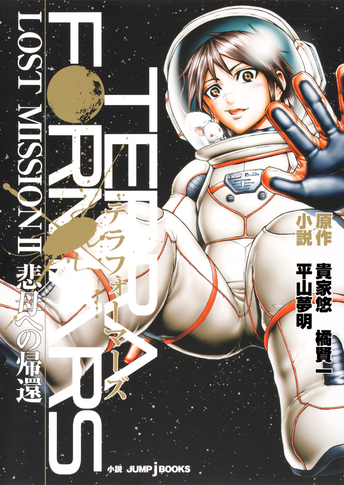
この本は縦書きでレイアウトされています。
また、ご覧になる機種により、表示の差が認められることがあります。
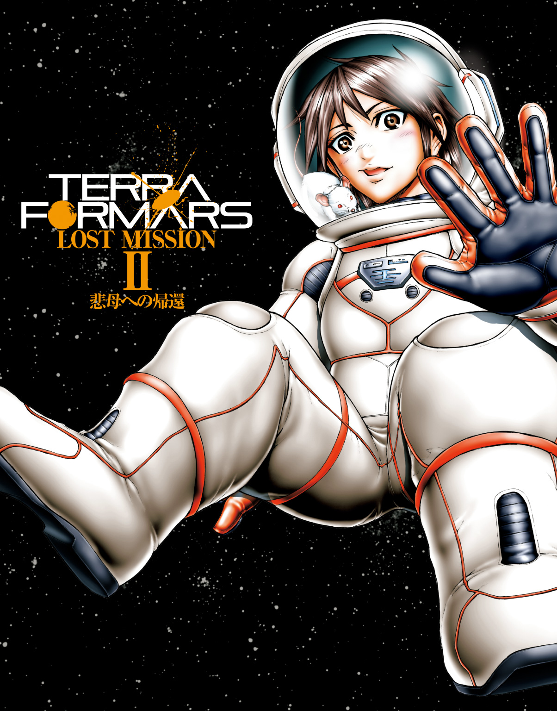
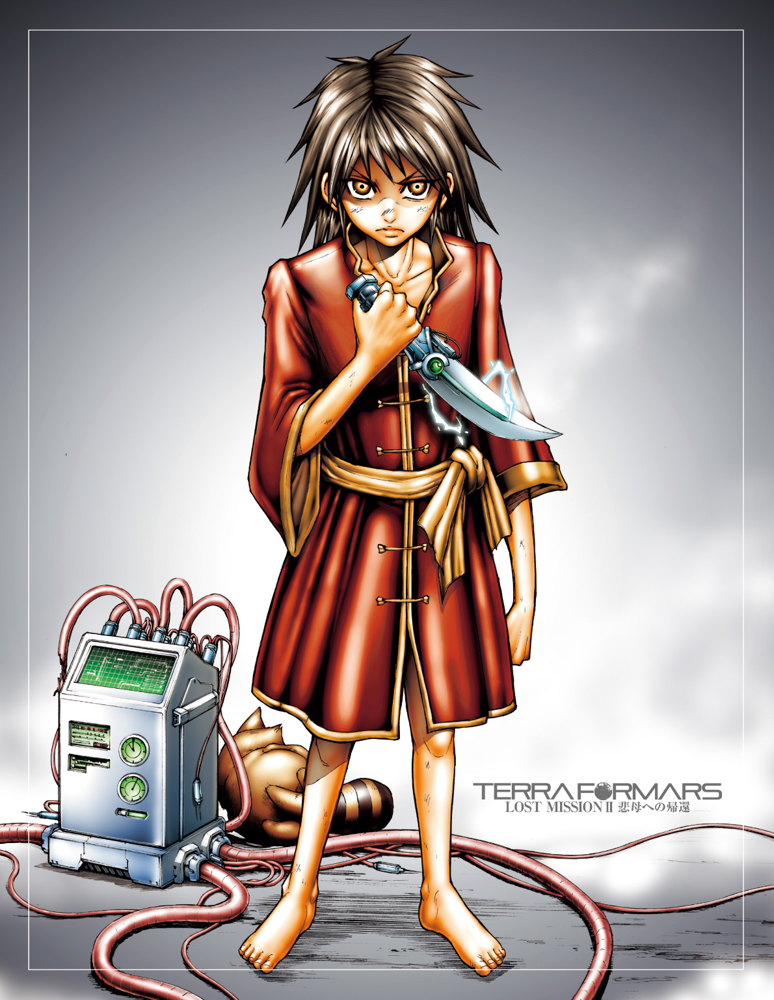
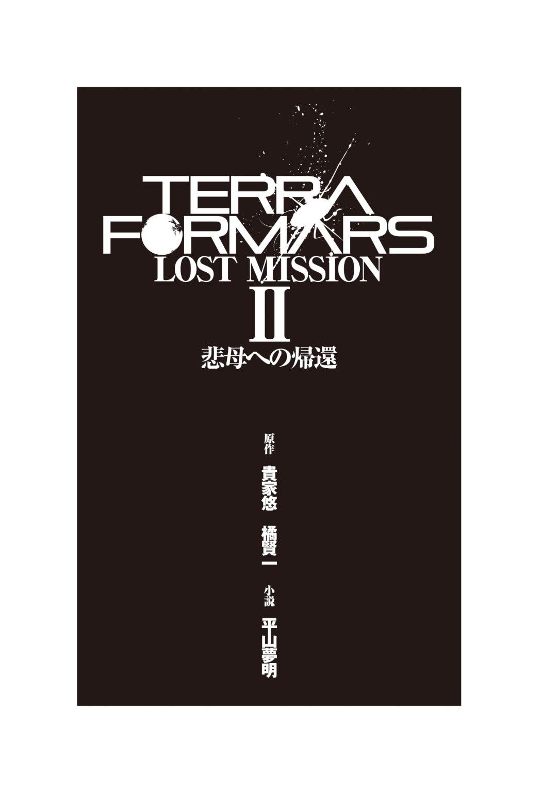
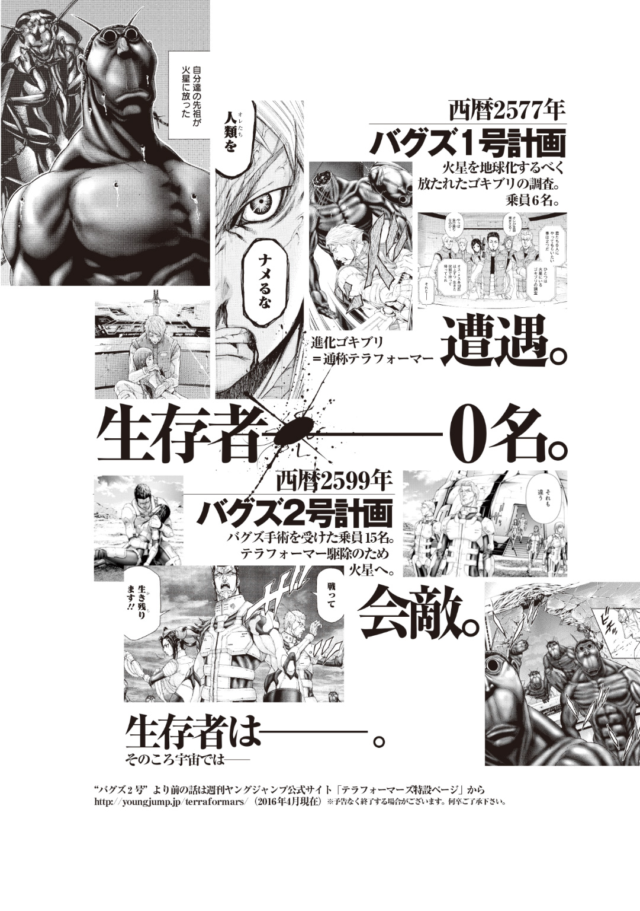
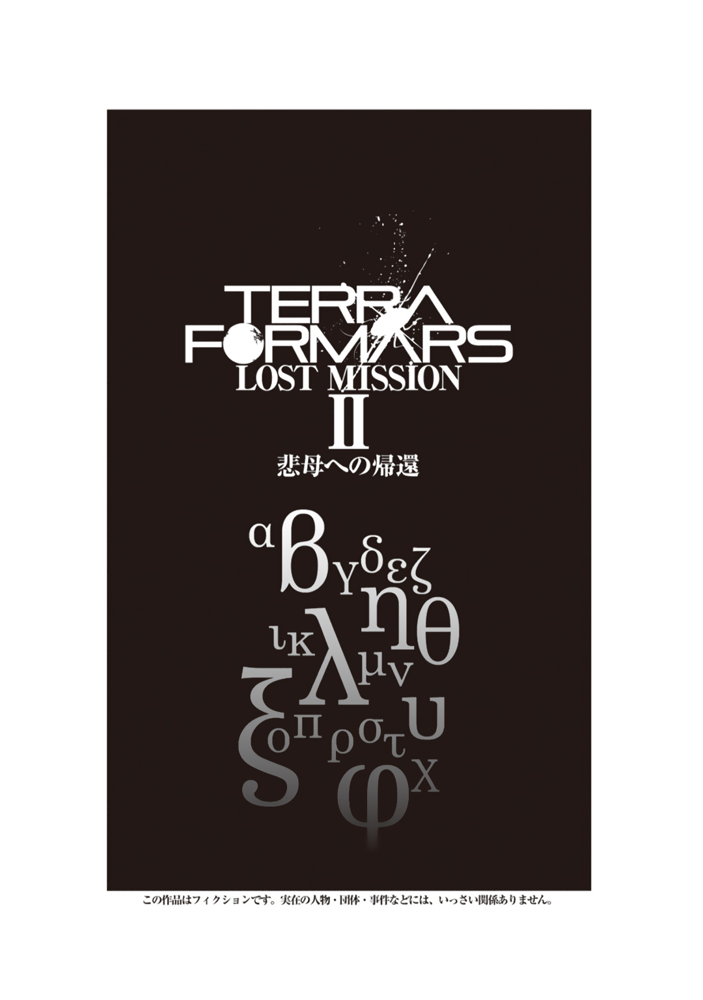
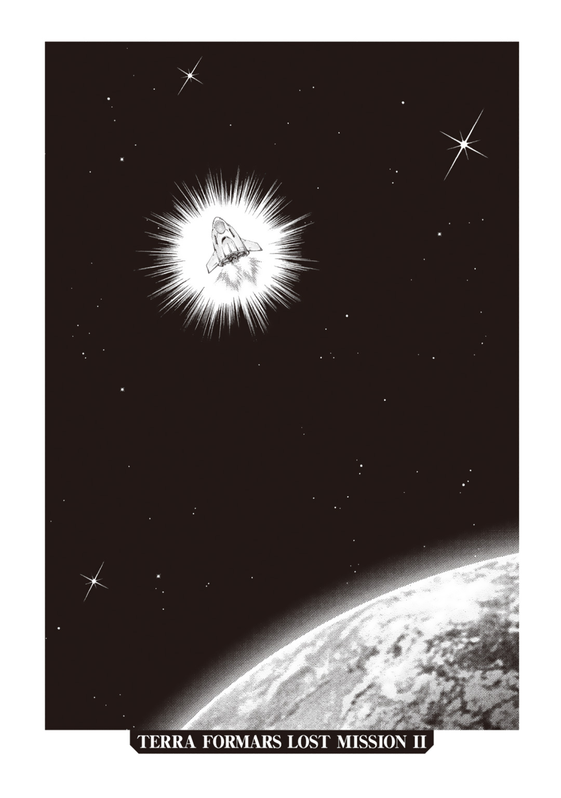
雄牛の腿みたい、と思った。その真ん中に古い傷のような大きな凹みがある......エクボだ。ギィはいままで腕に大きなエクボのある男を見たことがなかった。
「死ぬか？」
血塗れのナイフを突き出された。
ギィは黙っていた。
「それか、飴チャンでも喰うか？」
話はちょっとだけ遡る。
ギィがに密航したのには理由があった。簡単に火星へ行けると思うほど幼くはなかったが、後先考えずに行動するほどには充分、幼かった。振り返ればＵＣＬＡの２２７レーンに駐機されていた宇宙船に乗り込んだのが四、五日前。出星ゲートを通過した彼女は自動搬入ロボットのセンサーをかいくぐり、月や金星それ以外の宇宙港や有人ステーションへ配送されるコンテナに紛れて〈倉庫〉へ潜り込んだ。不審に思った出星管理官が彼女の偽造ＩＤナンバーを〈全集端末〉に再入力した頃には、彼女を乗せた〈船〉は既に成層圏を突破していた。
ギィは施設の悪友たちに聞いたとおり、船が発射態勢に移ると同時に潜んでいた倉庫から居住層へ移動し、非常用ロッカーを見つけ、なかにある緊急スーツへと潜り込んだ。ストラップの固定や発射時にかかるＧに対する備えに関しては施設の図書館で何度もプログラムを確認したし、左腕の腕時計型情報端末によるナビゲートに従った。
成層圏を突破し、船体が慣性飛行に移るとギィは持っていたエネルギーバーを食べ、特殊な睡眠薬を飲んだ。慣性飛行移行直後は乗組員が最も活発に動く時間であり、密航者が発見される率も高いと本に書いてあった。故に彼女は栄養素を圧縮させたバーと水を飲んでから二十四時間は昏倒できるよう薬を使ったのだ。
その作戦は成功した。
思えばそれが彼女が考えたなか、たったひとつだけ成功した作戦だった。
『わかる？』
最初に柔らかな女の声が聞こえた。
目を開けようとして痛みに似た刺戟を感じ、ギィは呻いた。
「慌てちゃダメ......目はゆっくり開けるの」
言われたとおりにすると、白く滅菌された壁の診療室であることがわかった。自分はベッドに寝かされていたのだ。たっぷりしたブロンドの髪をアップにした白衣の女が微笑んでいた。身を起こそうとすると腕が引き攣れた。ベッドから腕にチューブが繫がっている。
「取っちゃダメよ。あなたは脱水状態で発見されたんだから。それにしてもどうしてあんなことをしたの？ 避難訓練がなかったら、あなたあそこで死んでいたわよ」
ギィはうなだれた。着ていた服の代わりに患者用らしいオレンジ色の薄着にされていた。左腕の端末は残っていた。
「服は元気になったら着替えていいわ。洗濯もしておいたから。わたしはゾーイ。この船の医者よ」
シュッと空気の漏れるような音がすると大柄な男がひとり入ってきた。軽量化された青い制服を身につけていたが、地球にいる〈ある種族〉と同じ雰囲気がした――警官という種族だ。
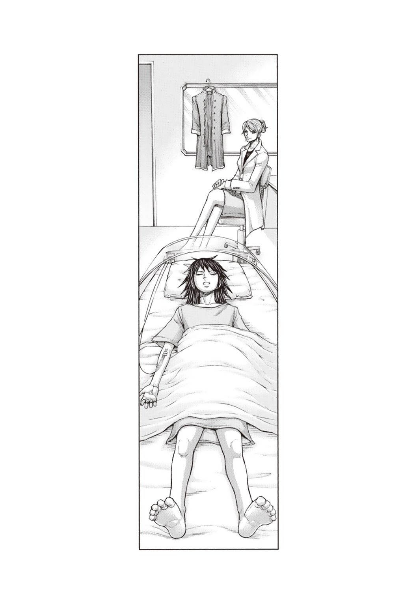
ギィは彼らが嫌いだった。
男は「気づいたのか？」と訊き、ゾーイは見てのとおりよ、と肩をすくめた。
〈名前は？〉〈どこに住んでいる？〉〈両親の名は？〉〈仲間は一緒か？〉〈どうやって乗り込んだ？〉〈偽造ＩＤはどうやって手に入れた？〉〈誰に連絡をすればいい？〉
近づいた男はギィが答えられないことばかりを質問した。
ギィは黙っていた。
男は大きく息を吸い、鼻から吐いた。微かにニコチンが臭った。施設長と同じ〈悪しき古い習慣〉を、この男も持っているんだとギィは思った。
「いくつ？」
ゾーイが男との間に割って入ってきた。
この人はいい香りがする......ギィは安心し、両手を使って数字を表した。
「九歳......なんてこった。単独密航者の最年少記録更新だな」
「まだ意識がハッキリしないのよ。あれこれ質問するなら六時間後にしてあげて」
「くそ。もうあと三時間早く発見していれば地球に戻る船に移送できたんだが......」
「いまどこらへんなの？」
「数分前に月のラグランジュポイントＬ２を通過した」
「じゃあ、もう付近に船はないわけね」
「数万キロ以内には。話が聞き出せそうになったら知らせてくれ」
「わかったわ。グレイ」
男は開いていた手帳型端末をギィに向けた。閃光が彼女の目を刺した。
「ちょっと！ やめなさいよ」
「仕方がないだろう。本人からは何も聞き出せないんだ。顔写真のデータだけでも転送しなきゃ」
「やり方が乱暴なの」
「お生憎様、俺は警官でね。あんたら上流階級と違って野蛮にできてるのさ」
「わたしだって奨学金で大学に通ってた階級よ」
「それでも犬の残飯を食ったことはないだろ」
男はウィンクすると、片手を上げ出て行った。
「ごめんなさいね」
ギィは、なんでもないと言う代わりに首を振った。
ゾーイは部屋の隅に行き、戻ってきた。
「どうぞ」
カップが差し出された――温かい。
「ゆっくり飲んでね。咽せて気管に入るといけないから」
懐かしいコーンスープの甘みが口のなかに拡がる。と、キュルルルッとお腹が鳴った。
「もっと食べられそう？」
ギィは頷いた。
ゾーイはインカムで外部と話し、それから運ばれてきた二人分のプレートを受け取った。
「並んで食べましょう。中華だけど」
ギィは大きく二度頷いた。
膝にプレートを置き、表面を覆ったシールを剝がす。鶏の唐揚げとマヨネーズで和えたエビの匂いが鼻を撲つ。
「あ。あなた、左利き。一緒ね」
ゾーイは箸を握る手を上げた。
ギィは知らずに微笑んでいた。
唐揚げは熱く、口のなかでジューシーな肉汁が弾けるようだった。カシューナッツとエビは甘酸っぱく嚙むのももどかしくギィは急いで吞み込んだ。ふと彼女を見つめているゾーイの視線に気づき、ギィは箸を停めた。そして、買ったらいくらするんだろうとぼんやり考えた。
ゾーイが口を開いた。見れば彼女はひと口も箸を付けていない。
「あのね。あなたにはあなたの理由があってこんなことをしたんだろうけれど。残念な話があるの」
ギィのなかで警報が鳴った。いままで何度も何度も感じてきた警報――大人が悪い話をするときに見せる気配。
ギィは身構えた。
「この船は何処にも行かないのよ」
ギィは初めて声を発した。
「え？」
ゾーイはギィの目を見すえながら頷いた。
「そうなの。あなたはこの船が月に行くと思っていたのだろうけれど、この船はある場所に行って観測したら、また地球に戻ってしまうの。わたしたちの目的は地球近傍天体の調査なの。二四〇〇年代に発見されたディーヴァ群よ」
手から滑り落ちたプレートが床で音を立てバウンドした。ベッドから飛び降りるとギィはチューブを引き抜いた。黄色い輸液が床に拡がる。
「うそ」
「ほんとよ」
「噓だ......噓だ！」
ギィの叫びとは裏腹にゾーイは落ち着いていた。きっと何度も同じ光景を目にしてきたのだろう。
「あなたは二週間後、わたしたちと一緒に地球に帰還するの」
船全体が大きく揺れるような気がした。
ギィは既に涙で見えなくなっているゾーイに向かい地団駄を踏みながら叫んだ。
「イヤだ！」
ゾーイは返事をしなかった。
ギィは彼女がまたインカムに話すのを聞いた。涙が拭いても拭いても溢れた。もう自分はおしまいなんだと思った。地球に戻ればきっと施設に戻されてしまう。施設長は自分をフェイやノブ同様、切り刻んでお金持ちに売ってしまう。そして、もう自分はかあちゃんに逢うことはできない――絶対！
ギィは全身が引き裂かれるようだった。意味のない生活、人でなしの暮らし、残酷な家、人が考え得る最悪を詰めた掃き溜めにまた戻るしかないのだ。
神様がいるとか、人が自分の力で運命を変えられるなんて、やっぱり噓だった。
ギィはそう思うと、なんだ......生きるってこんなにくだらないことだったのかと、おかしくなってきた。やっぱり馬鹿馬鹿しくてインチキだらけで何の意味もないじゃないか。
「あははは」
ギィが笑うとゾーイは不思議そうな顔をした。
ドアが開くと別の男が入ってきた。
「おはようさん」
男はゾーイに笑いかけると、腕を横に振り払った。
首のあったところが水平になっていた。重くて柔らかい物が床で音を立てた。こちらを向いたのは斬り落とされたゾーイの首だった。
その顔はギィよりも驚いていた。
「そして、おやすみちゃ〜ん」
男はマンガに出てくる戦士の格好をしていた。革ジャンから鋲が突き出し、モヒカンで目の辺りを赤くペイントしている。そいつは握っていた山刀を腰の鞘にしまうとゾーイの首を摑み上げ、眺めた。
「うーん。もしかすると殺すには惜しい女だったかも」
自分の口に指を突っ込むと、すぽんと音を立てて抜き、ゾーイの唇のなかに入れ、それをまた自分の口に含んだ。
「げっ！ まずっ！ やっぱ化粧漬けの女はゲロ不味だわよ」
そこまで一人芝居を続けた男が不意にギィに向き直った。
「よお。ねーちゃん、おひとり？」
ゾーイの首を捨てると男は自分だけ聞こえている音楽に身を任せるよう左右に揺れながらそう言った。
ギィが頷くと男は頷きながら彼女の体を持ち上げ、肩に担ぎ上げた。
思わず殴りつけようとすると。
「目玉えぐるよ」
男が冷たく呟く。
ギィは抵抗を止めた。
気密ドアから廊下へ出ると悲鳴と怒号が押し寄せてきた。ゆるくカーブしたチューブ状の廊下のあちこちに血を流した人間が喚き、死んでいるか、もしくは殺されている最中だった。ライトアップされたモスグリーンの壁には、手型や人の顔型がスタンプのように貼り付けられ明るく浮かんでいた。
「よう！ どうだい！」
「まあまあ、だな。調査船は人が少なくてダメだ！」
「そっちはどうだ？」
「売り物になりそうなのはねえや。こんな装置じゃ買う奴もいねえぜ」
狭い廊下を同じような野蛮な格好の男たちが忙しく駆け回り、ギィを抱えた男にも声をかけては走り去る。
この船は今まさに蹂躙され、略奪されていた。
「ねえ、チャボ壱。カボチャみたいな音を立てる奴がいるわよ！」
「え？ どこどこ？」
近づいた赤毛でナスのような顔をした男が言うと、ギィを抱いた男は一緒になって駆け出した。
そこは船のコックピットだった。強化ガラス越しに星が見えた。コントロールパネルの辺りに人が倒れ、腹でも撃たれたのか血塗れの男が壁にもたれていた――ギィに話を訊きに来た男。グレイだった。
「貴様たち......こんなことをしてただで済むと思っているのか」
グレイは血を吐きながら、周りを囲む男たちにそう言った。武器はなく、片手で体を起こしているのが精一杯の様子だった。体のあちこちにナイフが突き立っている。
「すぐにでも援軍が来るぞ。おまえらを好き勝手に、のさばらせるわけにはいかん......」
「ええ！ ほんとか......うう、ヤバイぜ。ジュンコ、モモエ、どうする？ マサコ困っちゃう」
ギィを抱えたチャボ壱の横にいた男がそう言って腰と手を振る。
ぼこりっとグレイの宇宙服が音を立て、新たなナイフが突き立った。激痛に顔が歪む。
「ね？」
マサコと名乗る男は吐き気のするような香水を付けていた。
「ほんとだ！ 刺さるとカボチャみたいな音がする」
チャボ壱とマサコは手を合わせた。
「これでどうかしら？」
別の男が勢いよく腕を振り下ろす。バキンっと床が鳴るとグレイの足が二本重なって飛び跳ね、パネルの向こうへ消えた。グレイの悲鳴が轟き、男たちが一斉に笑った。
「痛いの？ お痛かったの？」
グレイの足を切断した男が斧を引き抜きながら言った。
「馬鹿ねえ、モモエは。痛いに決まってるじゃないの。あたしだったら絶頂しちゃうかも」
「馬鹿はあんたよ、ジュンコ。清らか乙女が絶頂するのはジョニー・ゲップ様とキスできたらって決まってるでしょ」
斧男が言った。黒髪を腰の辺りまで伸ばし、土偶のように太り、こいつも鼻が曲がるほど香水を振りかけていた。
「間違いない。間違いない。あははは」チャボ壱が揺れる。
「でも、ジュンコはゲップよりギムダグかな。ギムダグ、汁ダグ〜」
「馬鹿な女。断然、ゲップよ。ダグより、ゲップ」
ギィはグレイが自分に気づいたのがわかった。
唇が動き、首を振っている。助けてくれと言っているのではなかった。〈ゾーイは？〉と訊いていた。
ギィが黙っている前でグレイは〈そうか〉と頷き、動かなくなった。
「ちょっと、モモエ。こいつ、死んだんじゃない？」
チャボ壱に声をかけてきた赤毛が慌てた様子で言った。
「ええ！ マジ？ 足切っただけよ」
「死んだわよ。あーあー知ぃらぁない。パイセン絶対に激怒するから。マサコのせいじゃないからね」
「あんたがナイフを馬鹿みたいにぼこぼこ突き刺すからでしょ。それで弱ったんだから。あんたのせいよ。こいつ、きっと警官よ。あたしも知らない。まだ金庫の開け方、聞いてないのに」
「なに言ってんのよ！ あんたがドジでブスだから、あーしが助けてやったんじゃない」
「それこそ余計なお世話。誰も頼んでないのに勝手に年増がでしゃばって」
「なんだとゴラァ！ 潰すぞドブス！」
「んあ？ やってみろぉ！ ド腐れガバマン！」
ふたりが顔と顔をぶつけんばかりに怒鳴り合いを始めた。
「ああ、いいからいいから......どいてどいて！ ほら、追跡できなくなっちゃうよっと」
ジュンコがグレイの頭をグイッと持ち上げると耳の穴にドライバーのようなものを突き刺し、腰にぶら下げた端末に触れると、そこから〈十......九......〉とデジタル音声のカウントダウンが始まった。
「ほら、あんたたちも退かないと。ビリビリよ！」
ジュンコの声にモモエとマサコ、それにチャボ壱が慌てて飛び退いた。
ピーッという警告音の直後、ドンッとグレイの体が大きく跳ねた。ジュンコが端末についたダイヤルを調整すると床に倒れていたグレイの指先がぶるぶると痙攣を始めた。
「アクセス完了っと。良いわよ」
「さすが、ジュンジュン。......ほら、起きな！」
モモエがグレイの頰をビンタした。半開きの白目がぐりぐりと動き、黒目が戻った。グレイは少し驚きながら目玉だけを動かし、辺りを見回した。
『なんだ地獄は......ブスばかりだな』
端末から聞こえてくるグレイの声は甲高い機械の合成音だった。
「予備の〈重水素・トリチウム・リチウムの合成核燃料〉リングが欲しいの。ボルトの開け方を教えなさいよ」モモエが顔を近づける。
『死ね。変態』
モモエが無言で指をグレイの眼窩に突き入れた。
身の毛もよだつ悲鳴が起きる。
「馬鹿ね。神経回路を十万倍活性化させてるのよ。棘が刺さっただけでも虫歯を麻酔なしで抜かれたように感じるのに。やせ我慢はよしなさい」
ジュンコが呟くように言う。
モモエは指を突っ込んだまま、それを左右に捻る。
グレイは歯を食いしばり、残った目から血の涙を溢れさせた。
『ぼ、ボルトの暗証番号は船長しか知らん......』
「あら。そう？ 船長はあんたが知ってると言ってたわよ」
マサコがボロボロの首をグレイの前に置いた。まるで鼠が囓ったように穴だらけだった。
グレイの目が大きく見開かれた瞬間、モモエが摑んでいた物を引き抜いた。
『があああああ』
すると四人がグレイの声に合わせて『があああ』と合唱し、手を叩いて笑い合った。
『ぐぐぐ......誰が教えるか......』
「すごい！ こいつ、二百万ペインを耐えてるわ」
「もっと敏感にさせなさいよ。記録更新、記録更新」
「ダメよ。脳が液状化しちゃうもん」
「ねえ。この人、ちょっと好みかも。根性あるじゃない？」
マサコが舌なめずりし、グレイに顔を近づけた。
端末から絶叫がし、グレイの口が真っ赤になった。
マサコが彼の舌を嚙みちぎったのだ。
「なにやってんの！」ジュンコが叫ぶ。
マサコが咥えた肉片を口にしまうとモグモグと動かした。ギィは何度目かの吐き気を堪え、目を逸らした。
「ちょっと濡れちゃったのよ、うふふふ」
マサコが内股にした股間を押さえながら腰を振る。
『ちくしょう！』
舌を奪われたグレイの声が端末から漏れる。端末は言語野におけるニューロンの反応を解読、それを音声に変換していた。
「ねえ。わかったでしょ。あんたに脳味噌がある限り、どんな拷問でもあーしたちは自由だってこと。舌も喉も要らないのよ。船長があんたがコードを知ってるってバラしちゃったんだから。もうあんたが頑張ったって仕方ないの。お言いなさいな」
『おまえの息が、このなかで一番臭いぜ......』
「あははは！ やーだ！ マサコ、言われてるわよ。お口を磨きなさいな」
「歯周病よ！ いや、もしかしたら加齢臭かしら、マジヤバいんだからあ〜おほほほほ」
モモエとジュンコが顔を合わせて「いやぁねえ」と言った。
マサコがグレイの舌を床に吐き出した。
「この野郎......ブッ殺す。百万回殺してやる......」
「よしなよ。そんなこと意味ない意味ない。あんたの加齢臭は抜けない抜けない」
「どきな！ ジュンコ。こいつはもうあーしのハートに火をカチリと点けちまったんだよ！」
マサコが手を開くと小型の回転ノコギリが現れ、バリバリと帯電し始めた。
「もう！ 言語野を潰したらパイセンに叱られるんだから！」
モモエがジュンコとともにグレイから離れた。
『ドブスども。地獄で待ってるぜ』
グレイが笑った。
「馬鹿ね。ただじゃ殺しゃしないって言ったろう！」マサコが構えた両腕をグレイに向かって突き出そうとした瞬間、鼻の下にスッと切れ目が入った。「あら？」
驚いた表情のままマサコの頭は上下に分かれ、鼻から上は床にペトンと貼り付いた。
「貴様ら、何をしている！」
ドアをブチ破りながら全身を装甲で固めた鎧武者が現れ、床にあったマサコの上半分を踏み付け、脳味噌を散らかした。
「ぱ！ パイセン！」
ジュンコとモモエが声を揃えた。
パイセンと呼ばれた男は手にしていた青い火花の散る青竜刀をふたりに突きつけた。
「殺！」
ふたりはちぎれるほど首を横に振った。パイセンと彼らはレスラーと中学生ぐらいの体格差があった。
「船長の首がない！ 貴様らが持ってたのを見た者がいる」
「こ、これとこいつです！」
ジュンコとモモエが、チャボ壱と床に転がるボロ屑の首を指差した。
「え？ え？ ぎげぶっ!!」
チャボ壱の絶叫とともにギィは床に投げ出された。
パイセンの鋼鉄の拳がチャボ壱の腹に喰い込んでいた。
「おのれ......船長の首をこんなボロボロに......」
「もお、俺じゃ......ないっす......」
「笑止!!」
パイセンがズボリと手を引き抜く。
ジッパーのような小骨の並んだ背骨が引きずり出された。
「俺じゃないのになあ......」
背中に大穴を開けたチャボ壱は倒れながら、そう呟いて死んだ。
パイセンは穴ぼこだらけの船長の首を持ち上げ、しげしげと眺めた。
「ジュンコ！」
「は、はあい！ 金庫のコードですよね。直ちに直ちに」
ジュンコがグレイの頭を摑み直す。
「そんなものは俺がこじ開けた。貴様は、こいつの頭に詰まってるものを取り出すのだ」
「え？ 脳ですか？」
「物ではない。データだ。船長め、Ｕ－ＮＡＳＡの最新宇宙航図を我らに盗まれぬようメモリーごと溶かしおった。こうなったら脳味噌から直接、引き上げるしかない。できねば......」
パイセンが船長の首をジュンコに突き出す。
「あ、できますできます。しますします。え〜と、海馬は損傷してないな......」
「我らの艦に戻れ。この船は自爆させる。食い物も全部、ありったけ運び出すのだ！」
「はい！」
ふたりが声を合わせ、慌ててグレイやチャボ壱、マサコの死体を持ち上げる。
「ん？」船長の首を抱えたパイセンの動きが停まる。「そのゴミは何だ？」
金属製の指が隅で縮こまっているギィを差した。
「わかりません。チャボ壱が運んできたんで......」
ギィは昔読んだ〈耳なし芳一〉という怪談の挿絵にあった怨霊を思い出した。
「おまえ、チャボ壱の何だ？」
ギィは何と答えて良いのかわからず黙っていた。
「餌だと思います。あいつ、こいつを喰うつもりでしたから」モモエが震えながら言った。
「喰う？ こんなものをか？」
鎧武者の顔が近づいた。瞑い面の奥に紅く光るものがふたつあった。
「ふん」
鎧武者はチャボ壱の顔に指を入れ、どろりとした眼球を引きずり出すと、いきなりギィの口に突っ込んだ。
「げぇ」
口中に溢れる血の味と生臭さにギィは吐き気を催した。が、パイセンの顎への締め付けが激しく、吐くに吐けず、ギィは苦い汁のなかで溺れかけた。どさりと放り出されたところで床に口のなかのものを吐き戻した。生卵のように崩れた目が自分を見ていた。
周囲がドッと嗤った。
「このガキ、俺を睨みくさった。こいつは生きたまま俺が喰う。艦に移すのを忘れるな！」
「はい」
モモエが、ぐったりしているギィの体を摘まみ上げた。
「よかったわね。宇宙の藻屑にならなくて」
彼の生臭い舌が顔をなぞったとき、ギィは気を失った。
施設の夢を見ていた。吐き気のするような現実。地獄のような仕事。暗い廊下の先で泣きながら血に濡れた手を皮が剝けるまで洗っている自分がいる。黒い血を飲み込む排水口から赤ん坊の泣き声が聞こえてきた。細い紐のような指が、その先に申し訳程度にくっついた爪とともに穴から湧き出してくる......。
はっと息を飲むと世界があべこべだった。ギィは自分が天井から逆さ吊りにされているのに気づいた。白いコック帽の男が調理台に向かっていた。まな板の上でナイフが食材を刻んでいる音がする。〈艦〉のキッチンなのだろう、他にも鍋を運んだり、流しで皿を洗ったりしている男たちがいた。
鼻を突いた煙にギィは咳き込んだ。
コックが軽く見上げる格好で振り返った。
「やあ。気が付いたね」
ギィは黙っていた。見れば足元から煙で燻されていた。
「今日は大漁でね。君を格納する場所がなかったんだ。そこで我慢しててね」
コックはにっこり微笑み、まな板に戻った。
肉のスープ独特の脂っぽいこってりした匂いが辺りを包んでいた。
ギィは空腹に胃の辺りがむずむずしたが、先程のことを思い出した途端、それは消えた。
「ねえ。まだなの〜」
両開きのドアからなかを覗き込む者があった――モモエだ。
モモエはズカズカ入り込むと、調理台の上のものを、つまみ食いした。
「あっち行ってろよ！ 気が散る！」
「だってお腹が減っちゃったんだもの。今日はジビエにするんでしょ」
「ああ、そうだよ」
「きゃあ！ よかった！ もう最近の宇宙食には飽き飽きしてたの。思いっきり歯でガツガツ食べたかったの〜」
モモエはコックの頰に無理矢理、キスをした。
「気持ち悪いなあ！ だから食堂で大人しく待ってろってよ！」
「うーん、いけず」
モモエはもうひと切れ、口に入れた。
「あら、あの子。燻してるのね」
「燻製室が一杯なんだ。それに柔らかそうだから軽く燻す程度で仕上げるつもりさ」
モモエはギィの真下に寄ってきた。
「あんた、一生懸命、煙を吸うのよ〜頑張ってね！」
そのとき、鍋を運んでいた別の男が足を滑らせ、中身をぶちまけた。
「ああ！ このバカヤロウ！」
「す、すみません！」
「ブイヤベースが台無しじゃないか！ もったいないコトしやがって！」
コックが男の尻を激しく蹴り上げ、男は屈みながら鍋の中身を必死で搔き集め――ギィは胃がでんぐり返った。
男が拾っているのはバラバラにされた人間の部品だった。
「あんたもおいしくなるのよ。一番おいしいところはあたしが食べてあげるからね」
モモエが投げキッスした途端、その顔にギィは思わず反吐をブチ撒けていた。
「何すんだ！ このガキィ！」
モモエがジャンプしながら拳のフルスイングをギィの顔面に叩き込んだ。
上の奥歯と下の奥歯が音速でぶつかった気がし、視界が暗くなった。
「おい......起きろ」
頭を靴で踏まれたギィは自分が床に倒れているのに気づいた。ここは先程のキッチンではなかった。床はひんやりと冷たく、狭い倉庫のよう。少し離れたところに男二人が座ったテーブル、その上にぽつりと電灯がある暗い部屋。
立とうとしてギィは転びそうになった。両腕が縛られているのだ。
「おう。ガキ。大人しくしてろよ。もうゲロはごめんだぜ。ふふふ」
ギィの頭を踏んだ男がテーブルに戻ると、こちらを向いて笑った。ヒゲ面で髪は伸び放題、目だけが油断なく光っている。
「モモエさんにゲロを浴びせるなんて、度胸の良いガキだ。けけけ」
もうひとり――モヒカンの男が言った。
彼らはトランプの賭けをしているのか、札を取っては中央に捨てていた。
「おめえも、運の悪い奴だな」
ふと隣から声がし、ギィはびくりと動いた。
血塗れの男が、うなだれたまま見ていた。同様に縛られている。
「こいつら、人喰い海賊さ。船を襲っちゃあ、物を強奪し、人間を喰うんだ」
「おいおい。失礼なことを言うなよ。喰うんじゃねえ、加工するんだ。他の宇宙食と混ぜてな」テーブルから声がした。
ギィは床を見ながら呟いた。
「この船。火星に行く？」
「いいや。まるっきり方向違いだ。あそこはいま排他的航行制限宙域でＵ－ＮＡＳＡの厳重監視下だろ。こいつらゴキブリと一緒さ。そういう明るいところは苦手なんだ。狙うのは辺境で故障した可哀想な輸送船か、武器も護衛も充分でない非武装の調査船ばかり。いまはアジトのある小惑星帯を目指してるはずだ。火星に行くなら八光分ぶんだから......まあ、地球一万個分ほどは戻らなくちゃな」
「あっははははは」
ギィは笑いながら静かに絶望した――もう終わり。ジ・エンド。そんな言葉が脳裏に浮かんだ。馬鹿馬鹿しいや。生まれてくるってなんて馬鹿みたいなことだろう。
「おめえ、台所で吊るされてたんだって？ 可哀想に......あそこなら首の管をぶっちぎってもらえたのによぉ。ここじゃあ、なぶり殺しだ」
ギィは男の顔半分がスプーンでえぐられたように欠けているのを見て、毛の根っこがざわついた。
「これかい？ 驚いたろ。俺はモヒカン男のチップさ。奴が負けるとな、勝った奴が肉を切り取りやがるのさ」
ギィが振り返ると上半身裸の異様なデブが手を上げた。
「あ、チミチミ。ボクチンが、チミをモモエさまから買ったのニィ。だから、ボクチン頑張るニィ。女の子は顔が命ニィ」
「おめえ、俺を殺してくんねえか」
デブが目を逸らすと男がそっと呟いた。
ギィは首を振った。
「俺は中華系のステーションへ出稼ぎに行ってたんだ。地球へ戻ったら女房と三人の子供を楽にさせてやりたくて十年も働いたのに......あいつらに全部、持ってかれちまった。それにこの体じゃ、もうまともに働くこともできやしねえ。家の者に合わせる顔がねえんだ......だから殺してくれねえかな。喰われて奴らの糞になるより、あんたみたいな......ウチのチビに似たあんたに殺して貰いてぇ......嫌だとは思うし、申し訳ねえんだが......どうかな......駄目かな」
そう言い終わらないうちに脇から手が伸び、男の顔に電磁ナイフが突き立つ。
「うぶげぇ」
男が呻き、肉が切り取られる。出血を止めるために高熱の刃がジジッと煙を上げた。
「簡単に死なれてたまるかよ」四人目の男が口を覆ったバンダナを外し、切り取った肉片を口に入れた。「大事なチップなのによ」
「どこ行ってたニィ？ チミの番ニィ」
「倉庫へ箱を見に行ったのよ」
「ああ。先月、奪ったやつニィ。メカニックは開けられたのニィ？」
「さっぱりよ。みんな頭、抱えてたぜ」
「苦労して開けたはいいが、中身はガラクタか空っぽだったりしてよ」ヒゲが笑った。
「そんなことになったら、また誰かパイセンのシチューになるニィ。楽しみニィ」
「何、睨んでんだ」バンダナがギィを見た。「人を喰うのがそんなに珍しいか。ゴミ」
ギィは目を逸らした。
バンダナが口から嚙んでいた肉片を摘まみ出し、ギィの口に無理矢理、突っ込んだ。
「ほら、優しいおじさんの味だぜ。よく味わいな。ひゃっははは」
〈べっ〉
ギィは口のなかの物をバンダナの顔に吐きかけた。
「ひょお！ やるじゃねえか」
テーブルの男たちがはしゃいだ。
「宇宙一のサディスト、バンディに反吐をかけやがったぜ」ヒゲが手を叩く。
「ふん」
顔色ひとつ変えずナイフを取り出すと、バンダナは、まずそれでギィのロープを切り、それから彼女の前に置いた。
「いいか。おまえには、これからふたつの選択肢がある。一週間かけて生きたままサッカーボールほどの大きさになるか。それとも......こいつをナイフで殺すか」
バンダナは親指で顔の欠けた男を差した。
ギィは眉を顰めた。
「こいつを殺せば楽をさせてやる」
顔欠け男は縛られた手を合わせ、襟元を大きくはだけた。
「頼む......あんた。や、やってくれ。このとおり、このとおりだ！」
ギィはバンダナを睨み付けた。
「バンディ。それはボクのチップだニィ。高かったニィ。勝手にして貰っては困るニィ」
「モモエに払った倍額、払ってやる。安心しろぃ」
「ああ、それなら安心ニィ。好きにするが良いニィ」
デブはバンダナに向かって手を上げた。
「返事をしろ？ ゴミ」
ギィは、また唾を吐く。
それはバンダナのブーツにへばりついた。
テーブルがドッと沸いた。
「おいおい！ このガキ。ただのチップにするにゃ惜しいぜ。肝っ玉がハンパねえぜ！」
立ち上がったモヒカンが自分の股間を揉んで叫ぶ。
「ボクチン、凄くその子が食べたくなったニィ。もう、チップじゃなくても良いかもニィ」
「ふん」
バンダナは背中から針の付いたコードを二本取り出すと、ギィの首筋に打ち込んだ。
脳が〈ブンッ〉と音を立て震動し、その途端、手足が冷たくなって動かなくなった。
『殺せ』
バンダナが呟いた。不思議なことに視界が緑色に変化していた。するとギィは自分の右手がナイフを拾うのを見た。自分の意思ではない。が、不思議なことに、そうすることが凄く心地いい。でも、それをしてはいけない――絶対にしちゃ駄目だ！ 心の奥底で悲鳴がした。
『殺せ』
もう一度、バンダナが呟き、顔欠け男を指差した。
「やってくれ......やってくれよ......やってくださいよ......」
男が首筋を剝いてギィに迫る。
そんなことできるはずがない、絶対にしちゃいけない。自分はこの人に何の恨みもないし、この人は自分同様に気の毒な人だ......絶対に......絶対に......こいつらの思いどおりになってはいけない。ギィはそう心に決めた。しかし、その心の声は、どこかふざけているような、喜んでいるような音色で本当は――大したことじゃない、簡単なこと、誰でもやっていること、なんでもないこと......と囁いていた。
『どうした？ 奴の望みどおりにしてやれ』
バンダナの声が自分の凄く深いところに届く。それに声がひどく大きい。
「こいつぁ、おもしれえや。おいおい、ガキとバンディの洗脳ギグと、どっちが勝つか賭けねえか！」ヒゲが叫んだ。
「俺はバンディ」モヒカンが言う。
「ボクもニィ」
「それじゃ賭けになんねえ。ちぇっ、仕方ねえ、俺はガキに張るぜ」
「残念だが言い出しっぺのおまえがひとり負けだ。カーツ」
バンダナが皮肉そうに唇を歪め、コードに繫がった箱のダイヤルを最大にした。
ギィの全身が震え、細胞がサイダーのように沸き立った。
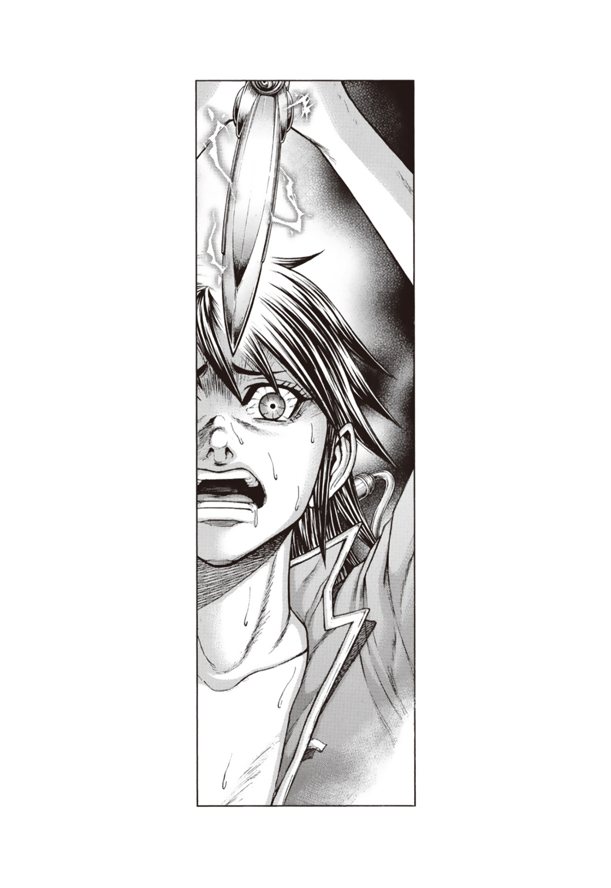
ぎぎぎぎぎぎ......抵抗しようとすると、脳味噌を固いヒゲで直にサワサワくすぐられるような気持ちの悪さが駆け巡る。まるで脳を白アリにじくじく咬まれているようだ。
「おい！ 無茶するな。相手は子供だぜ」ヒゲが怒鳴る。
「うるせえ！ 俺は、こいつの目が気にいらねえ。後ろめたさの欠片もねえようなこの目がよぉ！ さあ、殺せ！ おまえにも汚らしいところがあるってことを思い知れ！」
「ぐわぁぁ！」
味わったことのない不快感に襲われ、遂にギィはナイフを両手で構え、振り上げた。
「なんまんだ......なんまんだぁ......」手を合わせた顔欠けが目を閉じる。
〈やるんだ！ やるんだ！ 殺るんだ！〉
ギィのなかでけしかける声がした。そうするのが気持ち良い。肩から腕にかけ、力をみなぎらせた筋肉が解放されたがっている。しゃがんでジャンプするのを待っているときのアノ感じ。腕は全力で振り下ろされたがっている。そして下ではそれを喜んで待っている人がいる......。
やれ！ やれ！ やれ！ 殺れ！ 殺れ！ 殺れ！ 殺レ！ 殺レ！
が、ギィは動けなかった。
抗うと更に強烈な不快感が狼煙のように全身を駆け巡った。
〈ぐっぎぎぎぎぎぎ......〉
ギィは自分の口から歯軋りとも呻きともつかないものが漏れ、奥歯がバキッと折れる音を聞いた。
〈振り下ろせ！ 振り下ろせ！ ナイフでブスッとやっちまえ！〉
額から頰に伝う幾筋もの脂汗が顎の先から滴った。
「嫌だぁぁぁ！」
ギィはナイフを投げ捨てた。脳の奥底で燃え上がるような激痛が走る。いくつかの大事な細胞が死んだ気がした。
「やった！ 親の総取りだぜ！」ヒゲが立ち上がりガッツポーズをした。
「なんだぁ、バンディ。手加減したニィ」
「大口叩きやがった割には手を抜きやがって」モヒカンが忌々しそうに床に唾を吐く。
が、ひとりバンダナだけがギィを睨んでいた。ギィ同様、額に汗の玉が浮いていた。
「き......貴様......何者だ......」
「おい。バンディ、おまえの分、払えよ。その爺さんの片腕でいいからよ。持ってこい」
バンダナは怒鳴った。
「貴様は何者だ！ この人殺し野郎！」
ギィも真っ正面から睨みつけていた。
「なに言ってるニィ。負け惜しみはみっともないニィ」
「そうだそうだ！ いまさら銭は返さねえぜ」
「違う！ そうじゃねえ！ 俺はこいつに最高出力をぶち込んだんだ。それをこいつは弾き返しやがった......」
「だから、おまえが緩いんだよ。負けを認めな」デブから札を受け取りながらヒゲが笑う。
「そんなんじゃねえ......俺の......俺の術に対抗できるのは人を殺したことのある奴だけ。それも殺した数だけ、リアルに脳が抵抗できる......」
「じゃあなんだよ。おまえはこのガキがもう人を殺してるって言うのかよ」と、モヒカン。
「いや。それどころじゃない。これだけの催眠出力に無意識下で抵抗できるほどの人数ってことだ。五人、六人......いや、十人、二十人......」
バンダナはギィの肩を摑み、持ち上げた。
「おまえ、いったい何者だ？ いままで何人殺してきたんだよ！ あ？ 言えよ！」
ギィは目を逸らした。
その瞬間、艦内に警戒音が大音量で轟いた。
『告！ 総員、即刻、臨戦態勢に移れ。現時点に於いて我ら、未確認艦船を捕捉。総力を挙げてこれを撃破、積み荷を奪取する。一戦に於いて怯懦な者はその場で処刑を許す』
「未確認艦船？ なんだそりゃ」ヒゲが首を傾げる。
「バンディ！ もたもたすんな！ 持ち場につけ！ 死にてえのか！」
既に駆け出したモヒカンが怒鳴る。
「チッ」
バンダナが舌打ちし、ギィを床に落とした。
「後でゆっくり料理してやる」
「早く早く！ 遅れるとシチューだニィ！」
デブもこけつまろびつ部屋を出る。全員が出、鍵がかけられた。
〈いままで何人殺してきたんだよ！〉
急に静まり返った部屋のなか、バンダナの言葉だけが耳に残っていた。
「数えらんないよ......馬鹿」
ギィは呟いた。
「未確認艦船とはなんだニィ」
コントロールルームに着いたデブが光学スクリーンを見上げた。
「あと十秒でスクリーンに映し出すわん」
パネルに向かっていた男が答える。鋲付き首輪をしていた。
「敵の実測を報告せよ！」パイセンが叫ぶ。
「全く捕捉できません」レーダーを見つめている男が言う。
「馬鹿者！ 質量レーダーに映らぬなどということがあるか！」
パイセンはレーダー係の首を締め上げた。ボキッと音がして係の男は動かなくなり、パイセンが捨てると別の男が当然のようにその席に座った。
「あ、シチュー第一号ニィ」それを指差したデブが涎を拭く。
「船長！ いまスクリーンに出します！」
全員が正面を凝視した。
「な、なんだこれは？」
パイセンの声が響き、全員が呆気に取られた。
「ほ、星が消えていくニィ......」
スクリーンには宇宙空間が拡がっていた。が、真ん中に〈闇〉があった。星は〈闇〉に吞み込まれるが、暫くすると吐き出され、また同じ場所で光った。
〈闇〉はレーダーも光も全く反射しない〈何か〉だった。
「馬鹿者！ こいつは移動しているのだ！ 早く正体を見極めろ！」
「暗黒物質......」
「こんな小規模のものがあるかよ」
「ＢＨ......」
「太陽系にそんなものがあるか。直近の一角獣座Ｘ－１ですら三千光年は離れてるんだぜ」
乗組員が目の前を悠然と横切る〈闇〉について口々に噂した。
「攻撃してくる様子はありませんね......このまま放っておけば......」
パイセンの横についていた副船長が安堵の溜息を漏らした。
「......しれんな」
「え」
「お宝かもしれんな......」
パイセンが小さな奥目を凶暴に輝かせていた。
「俺の勘に狂いはない。あの様なれば間違いなく財宝を隠密運搬している特使船に違いないぞ！ うわっはははは」
副船長は青褪めた。
「いや......それは......ちょっと」
「皆の者！ アレを戴く！」
パイセンがスクリーンを指差し、叫ぶ。
「ええ？」
「あの船は何かを隠している。たぶん、とてつもない秘密よ！ お宝よ！ 貴様ら億万長者となるチャンスだぞ！」
一瞬の間をおいて部屋は興奮の坩堝と化す。
『うおぉぉぉ！』
「行け！ 最大出力で地獄のパイセンミサイルを撃ち込むのだぁぁ！」
パイセンがインカムで怒鳴りつける。
数秒経たずに艦全体が震動し『ＭＸ砲最大出力点火......十......九......』とデジタル音声でのカウントダウンが始まる。
コントロールルームにいる全員がバーを両手で握ったり、椅子に座り直したりする。
『五......四......三......二』
「どでかい祝砲をあげよぉ!! いけぇぇぇぇぇぇぇぇぇ！」
パイセンの怒号とともに目の前で宇宙が閃光した。
衝撃で艦が後退し、内部はキリモミ状態になった。
「もらったぁぁ！」
パイセンが雄叫びを上げる。
スクリーンは光の残像でまだ何も見えない。
星図モニターに齧り付いていた男がパイセンを見上げた。
「船長......」
「なんだ」
「撃力０ニュートンです」
「もは？」
「全く影響を受けてま......」
そこまで言った途端、艦が回転を始めた。
「な、なんだこれは」
「わ、わかりません！」
「船長！」
別の男が叫び声を上げる。艦全体が見えない渦に巻き込まれたように回転していた。機械と人間、人間と人間がぶつかり潰れる音があちこちで始まった。
「何事だ！」自力でパネルをぶち抜き、かろうじて体勢を保ったパイセンが怒鳴る。
「船が引き込まれています！」
「なに？」
「中心は......あの......あの黒い〈闇〉......我が艦はあいつに吞み込まれます！」
デブは奇跡的にコの字になったロッカーのなかにモヒカンと逃げ込んでいた。
「ボ、ボク......聞いたことがあるニィ。全体を未知のステルス技術で完全被覆して宇宙をさまよう船があると......」
「何をごちゃごちゃくっちゃべってるんだおまえ、狭いよ！ デブ！」
デブはモヒカンが蹴り上げるのも気にせず、いまや星の全く見えない完全な〈闇〉に覆われた巨大スクリーンを見上げた。
「その船の名は......暗黒星」
いきなり、艦全体がスパークし、経験したことのない衝撃が全てを包み込んだ。
ギィは次第に発光していく指先を眺めながら自身が蒸発していくように感じた。
コントロールルームでは針を顔中に埋め込んでいた男の頭が、クシュッと縮んでから破裂した。宙に舞う脳漿も、木っ端微塵となった脳の欠片も全てがキラキラ光り輝く。輝度は更に増し、それにつれ全身の痙攣が激しくなる。体の内側が煮えたぎっているようだ。全身を金属で覆われたパイセンが狂ったように暴れ、コンソールや子分たち、触れるもの全てに拳を叩き込み、潰したり、壊したりした。
が、そんな光景も〈白い闇〉に覆われだし、やがて何も見えなくなった。
体が浮かんでいた。
あ。いま、ボク死んだ......。
ギィは〈死〉を実感した。
それは経験してみると、聞いたほどにも、見たほどにも、ひどくはないものだった。何か柔らかで温かいものに包み込まれる......。
ギィはこの密航中で初めて、ホッと息がつけた。
『......よ』
浮かんでいる自分の頭の、更に上から〈声〉が降ってきた。
女の声――〈彼女〉の声だった。
施設で出会った、たったひとりの信頼できる大人。あとから考えると正式な教師などではなく単なる施設の雑用係だったのかもしれないが、ギィは彼女を〈先生〉と呼んでいた。
先日、彼女は施設長に強姦され、その悪事を隠蔽しようとした施設長に金庫の金を盗んだとして窃盗の疑いをかけられた。施設長は懇意の警察署長を使い彼女の逮捕を依頼した。
結果、彼女は逃げ切った。教会の鐘楼から身を投げ、自らの命を断ったのだ。
自殺の前、先生は消灯時間が過ぎた頃、ギィを屋上に連れ出した。
蒸し暑い夏の夜だったが、ここでは肌に触れる風が心地良く吹いていた。
彼女は言った。
『ギィ、良く聞いて。あなたのおかあさんの名前は張明明と言うの』
『ほんとっ！ 本当に？？』
『ええ』
『どこにいるの』
先生はギィの瞳をまっすぐ見、そして夜空を指差した。
『火星よ』
『え？』
『驚いたとは思うけど、本当なの』
『火星......どうして？』
ギィの言葉に先生は一度、頷いてから答えた。
『あなたのおかあさんは人類を救うために行ったのよ。あたしは駄目だったけれど、彼女は選ばれたの。おかあさんはあなたのことを探していたわ。あたしはそれを伝えたかった』
......チョウ・ミンミン。ボクのかあちゃんの名。
その名を口にしたとき、ギィは自分でも思ってもみない感情に取り憑かれた。
『ふざけるな！ あっははは！』
ギィは叫びながら、先生が息を吞むのを聞いた。
『どうしたの？』
『おかしくって涙が出るよ！ だってそうだろ？ 自分の娘を救わずに人類を救いに行く母親なんてさ。馬鹿らしくって、あっはは！ ははは！』
『そうじゃないの。理由があって探せなかったの』
『そうですか！ 母親が自分の娘を探す以外に大事な仕事ってのは何なんですかねえ、センセイ！ ボクに教えてくれよ！ なあ！ なあよぉ！』
ギィは膝を抱えて蹲った。腹の底で怒りと嬉しさが渦を巻いてぶつかりあい、まるで馬を吞み込んだように暴れていた。
『そんなに怒らないで。きっと帰ってきたら逢えるわ。それまでの辛抱だから......』
先生の手が肩に触れたとき、ギィは立ち上がった。
『やい！ ボクの手を見ろよ先生！ この手で何をしたか？ 何人の子供を殺したか？ あんただって知ってるんだろ？ ボクは子供を殺して、ここでのうのうと生きてるんだ。もうボクは人間じゃないんだ！ もうダメなんだよ！ なんでだよ！ なんでもっと早く探してくれなかったんだよ！ そうしたらこんなことはせずに済んだんだ！ なんで......なんで！ 馬鹿野郎！』
両手を突き出し、叩き合わせ、一気呵成に叫んだギィ。が、先生の頰に涙が伝うのを見て、急に力が抜けたようになり、屋上に突っ伏して泣いた。
『馬鹿野郎！ 馬鹿野郎！ ......』
声が続かず、しゃくりあげた頃、先生の手が頭に触れた。
『それはあなたのせいじゃないわ、ギィ。約束して。決して諦めないって。生きてさえいれば必ずおかあさんに逢える。あなたは強い子よ。どんな苦しさにも負けずに立ち向かう力を持っている。どうか、それを信じて......ね』
先生は泣き伏すギィにそっと体をかぶせるようにすると、耳元でそう囁き去った。
先生の死後、ギィが何か都合の悪いことを知っているのではないかと邪推した施設長は転送という名目で他の施設へ〈転売〉しようとした。
ギィは脱走、そして密航した――火星に行く、母に逢う――それしか自分には残されてないと思い詰めていた。
でも......。
『先生......ごめん。無理みたい。火星に行きたかったのに......どんどん違うところへ来ちゃった。やっぱり子供はだめだ。夢だけじゃだめなんだ』
ギィはそう心のなかで謝った。
〈負け犬〉
すると最も聞きたくない忌まわしい声がした。
〈おまえたちは、きっと幸せになれるよ......来世でな。はははは〉
なぜ、こんなときに施設長の声がするんだろう。
今更のように悔しさがこみ上げ、ギィは胸が潰れた。
そのとき、全く別の声がした。
〈......生きなさい〉
突如として重力が甦り、ずしりと鉛のような体が戻った。音、臭い、指先の感覚、全身の情報が脳へ一斉に飛び込んでくる。
「よう。いい加減に目を覚ませよ」
低く苛ついた声に、ギィは目を開けた。
真っ暗な部屋、入口に立つ人影。
白いバンダナを頭に巻き、左腕を壁にもたせ、右腕で血塗れのナイフを突き出していた。
腕を見たギィは雄牛の腿のようだと思った。実物は知らないが写真で見たことがある。
男はギィを鋭い視線で睨み付けていた。
「なんてぇ面してんだ、おめえさんは」
のっそりと入ってきた。ナイフから血の玉が糸を引いて床に落ちる。
「......死ぬか？」
ギィは並んでいる棚のひとつに強く背を押し付けた。
逃げ場は――ない。
男が一歩二歩と近づき、ギィの前に立つ。
ふたりは互いに見つめ合った。
「それか、飴チャンでも喰うか？」
不意の言葉にギィは激しく咳き込んだ。
男は動かず、ギィの咳が治まるのを待っていた。
「どっちだ？」男の声が冷たい。
ギィは頷いた。
「......飴チャン」
足元に欠片のようなものが放られた――白地に赤い線の紙包み。包装を剝がすとなかに白い塊があった。ギィはそれを指で摘まんで見つめた。
「安心しろぃ、毒なんぞ入ってねえよ」
飴は舌の上で柔らかく変化し、ミルクの甘さが口のなかに拡がった。
「美味ぇか？」
ギィは頷く。
「そうか......食い終わったら、言いな」
自分がいるのは先程とは別の調理場のようだった。流しや冷蔵庫らしいもの、変な色をした野菜などが置いてあった。側には死体も横たわっている。
男は台に乗せた大きな肉の塊を切っていた。たぶん〈掃除〉をしているんだ。ギィも施設で手伝ったことがある。筋を取ったり、脂の多いところを切り出すのだ。
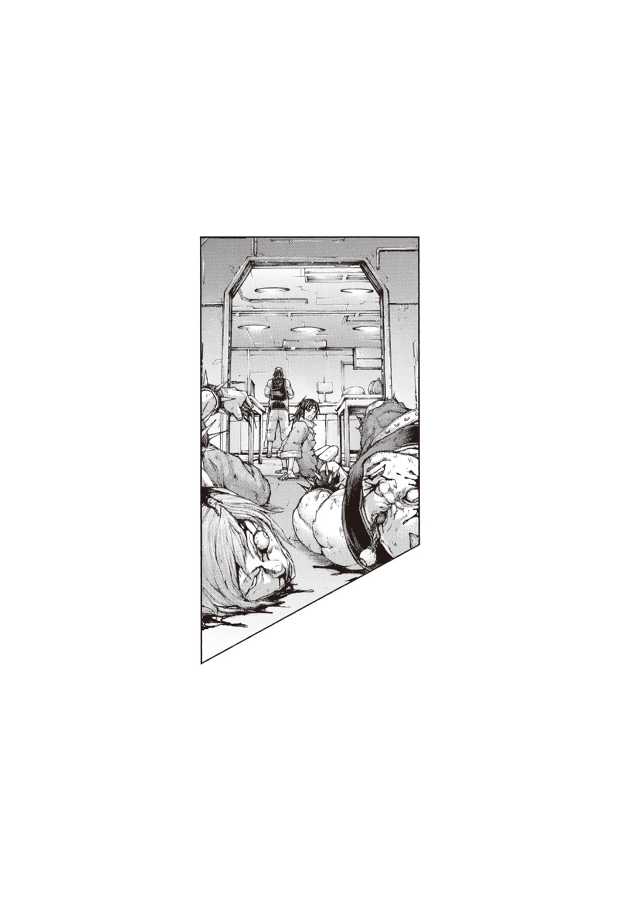
「食べた」
ギィが呟くように言うと男が顔を上げた。ギィを見ず、まるで聞き逃した音を探しているみたいな感じだった。
「そうか......」
その瞬間、ギィのなかで警報装置が鳴った――殺される！
男の腕が自分を摑む直前で体が動いていた。背中で振り下ろされた包丁が風を切る。
悲鳴を上げるのも忘れギィは室内を駆け回った。
「おい。おめえはもう殺されるんだ。決まってるんだからな。じたばたするな！」
男は大きな腕を振り回し、何度もギィの髪、腕、肩を摑もうとして、しくじった。
「くそ、ちょこまかちょこまか」
ギィはドアがあるのを見つけると男の隙を突いて駆け出した。自動ドアがブシュッと開き、飛び込むとそこは更に広い部屋だった。いくつも棚が並んでいた。ギィはその端に僅かな空間があるのを見つけ、飛び込んだ――身長一二〇センチ、体重二七キロ、痩せぎすな九歳の少女だけが潜り込める空間。
「おい！」
棚の隙間から包丁が伸び、ギィの爪先で床をえぐった。
「そんなところに潜り込んだって生きられやしねえぞ。鍵しちまえば食い物も飲み物も、ここにはねえんだ！」
棚を見ると――そのとおりだった。並んでいるのは見たこともないおもちゃばかりだった。飛行機、怪獣、ロボット、宇宙船。
「ふん。ここはな。趣味でこさえた模型ばかりよ。アンティークや地球に持っていけば何十万もする珍品ばかりなんだ。いや、もう二度と手に入らないから、その何倍もするな」
食べ物も飲み物もない――ギィは深い穴のなかに落ちていくような気分になった。
「わかっただろ？ だから、ここにいたってしょうがねえのさ。じたばたしないで、死んじまえ」
「なんでだよ」ギィは言った。
「あ？」
「なんでボクが死ななきゃなんないんだよ」
「ボク？ 変なこと言うガキだな。とにかく、そういう命令なんだからしょうがねえだろう」
「いやだよ、そんなの」
突然、あのときに聞いた〈......生きなさい〉という声が甦ってきた。先生のものではない、女性の柔らかな優しい声だった。
「あのなあ、生きるなんて意味がねえんだ。つまらねえことばかりよ。第一、おめえだって産んでくれって頼んだわけじゃねえだろう。なのに、つまらねえこと、苦しいことばかりじゃねえか。早く産まれる前に戻っちまったほうが楽ってもんだぜ」
「あんた、生きてるじゃん」
男は暫し黙ってから、ふざけた調子で返事をした。
「そうよ。だから、つまらなくて、苦しいのよ」
ギィがもう一度、何か言おうとしたとき、自動ドアがブシュッと開いた。ふたりの男が入ってきた。そいつらの嫌な目つきを見て、ギィは生まれてから一度も散歩させてもらえず頭がおかしくなって死んだ施設の犬を思い出した。
室内が急に狭く感じられた。
「そこか」目つきの悪い男がナイフで、ギィの隠れている棚の奥とコックを交互に差した。
「ああ」
「おまえは、なんだって盗む。そいつは俺たちのコマ。なんで盗む」
もうひとり、ブラシのようなヒゲの男が前に出た。ずんぐりむっくりの黒縁眼鏡。
「おいおい、盗んだわけじゃねえぜ」男が答える。「上の命令で殺せとビンタが運んできたんだ」
「おまえはいつもそう言う。何か言われると、ああじゃない。こうじゃない、そうじゃない。おまえは俺たちの物を盗んだときは、いつも屁理屈で返す」
「屁理屈じゃねえ、事実だ。噓か本当か、ビンタに訊いてみろ」
「事実か事実じゃないか、噓か噓じゃないか、訊くか訊かないかは俺たちが決める。俺たちは訊かないことに決めた。だから、おまえの言っていることはジドー的セッキョク的キューキョク的に噓だということがケッテー的だ」
「あんた......悪いが、いつも何言ってんのかわかんねえよ」
男が言うとヒゲ眼鏡が棚の模型を叩き落とした。
「わかんねえのは、おまえのほうだよ、クソコック」
目つきの悪い男が落ちた模型を踏み潰した。
「おまえは自分をスピシャルだと考えている。が、おまえはスピシャルではない。それはみんなの見解。おまえの代わりは山のようにいる」
ヒゲ眼鏡がまた棚の模型を叩き落とした。
「おい。この腰抜け、怒ってるぜ」目つきの悪いのがおかしそうに言った。
「いや。こいつは怒らない。なぜならタマがないからだ。タマなしは怒ることはできない。怒るというよりも拗ねることしかできないのだ」
ふたりの男は手当たり次第に棚の模型を叩き落とした。それは隠れているギィに向かっても落ちてきた。
「どうだ！ さっぱりしたぜ。これでガキも引きずり出しやすくなったろ」
「引きずり出しやすくなった。引きずり出しやすくなったと俺は言う」
目つきの悪いのが男にナイフを突きつけた。
「おい。おまえが引きずり出せ」
「そうだ。おまえが引きずり出すのが良いと俺は言う」
男は答えず、落ちた模型を拾った。
ヒゲ眼鏡がそれを叩き落とした。
男は溜息を吐いた。
「つくづく馬鹿につける薬はねえな」
「俺は馬鹿じゃない」
「いや、おめえは馬鹿だ」
「おまえは馬鹿だと言う。俺は馬鹿じゃないと言う。いつもこのくりかえしだ」
「それが馬鹿だという証拠さ」
「俺は馬鹿じゃない」
「噓じゃねえ証拠があるから訊いてみろと言っているのに訊きもしないで噓だと決めつけるのは馬鹿だと言うんだ」
「おまえは訊けと言う。訊けば本当だと言う。俺は訊かないと言う。おまえは訊かない俺は馬鹿だと言う。俺は訊かないけれど馬鹿じゃない......とっ」
男が握っていた肉切り包丁が、ヒゲ眼鏡のレンズを突き破って左目を二つに裂きながら頭蓋骨に深々と喰い込んだ。
「ややこしいんだよ。この野郎、いつもいつも......」
「うぉっぷ」
同時に目つきの悪い男の首も真横に切り裂かれた。壁にスラムの落書きのような赤い色がスプレーされた。
「折角、人がコツコツ集めたモノを......ああ、こんなになっちゃって......」
男はしゃがみ込んで模型を拾い、ボヤいた。
「馬鹿野郎めが」
包丁を摑み直すと男はヒゲ眼鏡の頭にそれを差し入れた。蟹の甲羅を剝がすような音がし、それからなかに指を入れた。
ギィが目を丸くしていると、男は探りながら軽くウィンクし、血塗れの指から豆のようなものを取り出した。そして、もうひとりにも同じことをした。
「ＩＤチップだ。こいつらは国連刑務所を脱獄した奴らさ。だから、こいつを港に持っていくと銭になる。この船の奴らは大概そうなのさ」
次に男は戦艦の模型を拾い上げた。
「危ねえ危ねえ。こいつが壊れたら一大事だ」
戦艦の腹の辺りを押すと樽型に一部が外れた――ジャラリと音がした。
「こいつには数百人分のチップが詰まってる。今度、港に着くのが楽しみだぜ。ふふふ」
男はチップを樽の細い隙間に落とし込むと樽にチュウをした。
貯金箱――ギィは思った。
ふと見ると自分の足元に割れたロケット型宇宙船が転がっていた。中身が出ている。
なんだろう――古い消しゴムのようなものが見えた。
「！」
指だった――第二関節から切り落とされた短い人差し指が入っていた。
「おわぁ！」
悲鳴のような叫びを発し男がギィに飛びかかろうとした。
咄嗟にギィはそれを口に隠した。
「うわっ！ 何すんだ！ おまえ！」
男は棚の向こうから睨み付けた。
ギィは指を唇の合間から覗かせた。
「近寄るな！」そう言ったつもりだったが、実際には「ちがよどぅな！」になっていた。
ギィは指を嚙んでいた。確かな隠し場所はそこしか思いつかなかった。手に持てば取り上げられてしまう。
「きたら、のむから」
「やれよ。腹を裂くだけさ」
男の目は本気だった。
「そいつだけは絶対に渡さねえ。模型よりも大事なんだ。おとなしく返せば命だけは助けてやる。さあ、こっちによこせ」
ギィは首を振った。
「馬鹿か？ 馬鹿かおまえは？ 指なんて咥えてたって、どうにもなんねえだろ。第一、そんなものを口にしてたら何も食えねえじゃねえか。さっきの飴チャンもやるからよ。こっちに来いよ。な」
男が手を伸ばしたのでギィは逃げた。
そして口のなかのものを（もちろん、いやだったけど）グッと吞み込んだ。
「げ！」
口をパッと開けて空っぽなことを見せると男が声を上げた。
そして再びギィが口に出すと啞然とした。
「なんてガキだ」
ギィは胃のなかのものを口に吐き戻すことが自由にできた。施設では盗んだ鍵や大事なものは、こうして隠していたのだ。そのおかげでギィは飢え死にすることはなかった。
「なんだ、おまえの体は」
ギィの特技を見て男は色を失った。
が、すぐに気を取り直し摑みかかろうとし、遂に指が彼女の服を捕えた。
「捕まえたぞ！ このガキ！」
が、次の瞬間、反射的にギィが指を嚙み砕こうとすると、男の声が悲鳴に変わった。
「わかった！ やめろ！ 嚙むな。シモンが！ 指紋がダメになっちまう！」
手を放した男が両手を合わせた。
ギィは口の動きを停めた。
沈黙が流れた。
男が顔を上げる。
「だのびぐぁあるふんだ」――「頼みがあるんだ」と、ギィは言ったつもりだった。
「無理だ」男は呟いた。「火星なんて行けやしねえ。あそこはいま、どこの宇宙船も入れねえんだ。Ｕ－ＮＡＳＡが封鎖しているのさ」
男が死体を部屋の外に運び出し、床を掃除した後、ふたりは棚を挟んで座っていた。
勿論、ギィは男の手の届く範囲からは逃げている。
ふと男は立ち上がり、部屋を出ると戻ってきた。
「ほれ」
水の入ったボトルとサンドイッチのようなものを差し出した。
ギィは喉から手が出るほど欲しかったが、睨んだまま動かなかった。
「毒なんかねえよ」
「先、食べて」
ギィは口の端に指をズラして言った。こうすると発声がしやすい。
「ちぇ。喰えねえガキだ」
「ギィ」
「あ？」
「ガキじゃない。名前」
「なんだそりゃ」
ギィは鼻を鳴らし、横を向いた。
その様子を見た男は溜息をひとつ吐くと、半分ほど囓る。囓ってから吞み下したことを見せようと口の端を引っ張りながら、ああ〜んと開けた。
「そこの棚に置いて。部屋の端に行ってよ」
「そんな便所の蓋が鳴ってるような名前を付けるなんて、おめえの親はろくなもんじゃねえな」
男は舌打ちし、移動すると壁に凭れた。
ギィは手を伸ばし、サンドイッチとボトルを摑んだ。
「壁から離れないで」
「まったく可愛げのカケラもねえガキだ」
男はエプロンのポケットから煙草を取り出すと火を点けた。
ギィはそっと口からポケットに指を移すと齧りついた。マヨネーズとチーズ、トマトとハムにレタスが飛び込んでくる。
「なんだってそんなに睨み付けてるんだ。もっと旨いって面しろ」
「やだ。あんた、目を離すと何するかわかんないから」
「ふん」
男はギィに背を向けると散らばった模型を棚に並べ始めた。
「なあ、おめえはわかってねえが、この船ダークスターはおまえの望みどおりにならねえよ。海賊を襲う海賊船みたいなもんだ。人様の船を襲って人間やら積み荷を奪った奴から更に奪う。抵抗すりゃ勿論、殺す。そんな船におまえみたいなガキがいつまでも乗ってられるわけがないだろう。早く腹を決めてさっさと殺されろ」
「わかってる。あんた、人殺しだもん。仲間も殺すし」
「あんなもんは仲間でもなんでもねえよ。この船はな。隙がありゃ殺される。ああしなきゃ俺が殺されてたし、おめえだってとっくのとうにあの世行きだ。俺が奴らを殺し、おめえを生かしてやった。ちっとは感謝しな」
「変な船」
「そうさ。外道船だ」
「......に行く」
「あ？」
「火星。火星に行きたい。火星に行く」
男は呆れたように首を振った。
「おめえ、耳かオツムが故障してるのか？ たぶん両方だろうがな。俺の唇を見てよく読んでみな。いいか。この船は火星には行きません」
「でも行く。絶対に行く」
「どうやって行こうってんだよ」
「あんたに連れてってもらう」
「最近の地球のガキってのは、みんなこれなのか？」
男はこめかみの辺りで指を回した。
「第一、そんなところにひとりで行って何しようってんだ。家出ならいくらでも他に場所があるだろう。ドブとかゴミ溜めとか肥溜めとか」
「あんたに言いたくない。ボクは行く」
「ああそうかい。勝手にしろ。廊下にいる奴に頼めよ。ねえ、おじさん、ボクを火星に連れてって、って」
「それじゃ、ボクは死んじゃうじゃん」
「だろうな。瞬殺ってやつだ」
「嚙むよ！」ギィは指を口に放り込み直し、覗かせた。
男がまた慌てた。
「ちょっ！ ちょっと待て！ わかったわかった」
「行く？」
「行く行く。あぁ、そんなマヨネーズだらけになっちまって......」
男は出発の用意をするから、とにかく飯を平らげろと言った。言われなくてもギィは残すつもりはなかった。このサンドイッチは、いままで食べたパンのなかで一番柔らかく、甘味があった。ギィは自分の指に付いたマヨネーズまでしゃぶった。
やがて男がカーキ色のダッフルバッグを持ってきた。
「入れ」
怪訝そうなギィの顔を見て男が付け加えた。
「おまえを連れて廊下をふらふら歩くわけにはいかねえ。艦長はおまえを不要だと判断したんだ。だから駐機場までは、これに入れて運ぶ。そこで適当な船をかっぱらって火星に航路を取れ」
「ひとり......」
「あたりめえだろ。なんで俺が行かなくちゃなんねえんだ。そんな義理はねえよ。あとは死ぬなり生きるなり勝手にしろ」
ギィは急に胸の辺りが重くなった。
「ひとりじゃいけないじゃん」
「安心しろ。最近のは多少、オツムの悪い奴でも乗りこなせるよう都合の良いＡＩが搭載されてるんだ。行き先をブチ込んだら勝手に連れてってくれる。さあ、早くしろ」
男が袋の口を大きく開いた。
ギィは躊躇った。寝起きに虎の調教をしろと檻に投げ込まれたような気分だった。
「早く！ 時間がない。誰かが来たらおしまいだ！」
ギィは覚悟を決めた。かあちゃんに逢うんだ。簡単なことじゃ逢えないんだ。そう思い込んで隙間から出ると袋に飛び込んだ。
すぐに袋の口が閉じられた。
『いいか？』男の声がした。
うん、とギィは応えた。
『指は持ってるな？』
「持ってる」
その瞬間、物凄い衝撃が顔面を襲った。目蓋の奥で緑っぽい光が瞬き、耳鳴りがした。次いで背中と腹と顔と腕と胸が殴りつけられ、もう一度、今度は体の真横が固いものに叩きつけられた。全ては一瞬のことでギィは悲鳴を上げることもできなかった。息ができない。ギィは真っ暗な空間で窒息しそうになり、喘いだ。
突然、明るい光に晒され、首が絞められた。
男の顔があった。
「馬鹿野郎！ んなわきゃねえだろう！ どうして俺様がおまえみたいなガキの言いなりになんなくちゃなんねえんだよ！」
ギィは男が袋ごと自分を壁や床に叩きつけ、ブーツで踏んだのだと知った。
男が拳をギィの顔面に叩き込んだ。激痛とともに頭蓋骨が軋む音が聞こえた。
「ぎぃぇ！」ギィは悲鳴を上げた。
「指を吐け！ 吐けよ！」
「いやだ！」
その瞬間、口のなかに男の指が突っ込まれた。ペンチのようにそれは硬く、舌に冷たかった。
「舌を引き抜く」
男が静かに呟いた。顔からは死人のように感情が消えていた。
ギィは返事ができなかった、舌を摘ままれていたからだ。
自然と涙が溢れ、天井の照明を逆光気味に浴びている男の姿がぼやけた。
......かあちゃん、助けて......。
「いまなら吐き戻して嚙めねえだろ。ふふふ」
男の指に力が入り、みしみしと舌の根が鳴った。
ゴンッと金属を殴るような音がし、男が視界から消えた。
ギィは体が自由になったのを知ると再び、あの空間に飛び込んだ。
頭を抱えて床を転げ回った男が立ち上がる。
その顔に目にも留まらぬ速さで平手打ちが数発、叩き込まれた。
「な、何すんだよ！ ビンタぁ」
「ビンタだよ！ 何やってんのさ、この馬鹿！」
いままでギィが会ったなかで一番大きな女だった。背は男と同じぐらい。巨大な胸と腰、しかし胴はそれらの半分ほどにくびれている。体のラインが際立つ深紅の宇宙服に身を包んだ女が立っていた。
「だ、だってよ」
「オマダリ！」
女は再び、平手打ちした。見ると右手は肘から先が銀色に光るサイボーグ義手だった。女が腕を振ると何故か銀色の軌跡が残像になる。
ギィはそれをきれいだと思った。
男が更に言い訳しようとすると首が摑まれ、そのまま壁に押し付けられた。男の体が完全に宙に浮いている。
「あーしは〈見とけ〉っつったんだよ。使えるからって」
男は息が苦しいのか頷いたり、首を振ったりした。
女が手を放すと男は床にばったりと落ちた。
「怖かったろ？ もう大丈夫。こっちにおいで」
女がギィに微笑んだ。
ギィは首を振った。まだ体のあちこちが痛い。
「さあ。こんなところにいても仕方ないよ」
ギィは男が自分を睨んでいるのを見ると〈出るほう〉に賭けた。
「よしよし。良い子だね」
女はギィを抱えると座ってる男を後ろ足で蹴った。
「痛ぇな！」
「サイオンが残留戦を始めてるんだよ。総員呼び出しがかかってたろ！ なにグズグズしてんのさ！ あんた、死ぬのよ！ 死だよ！」
「また、あれかよ」
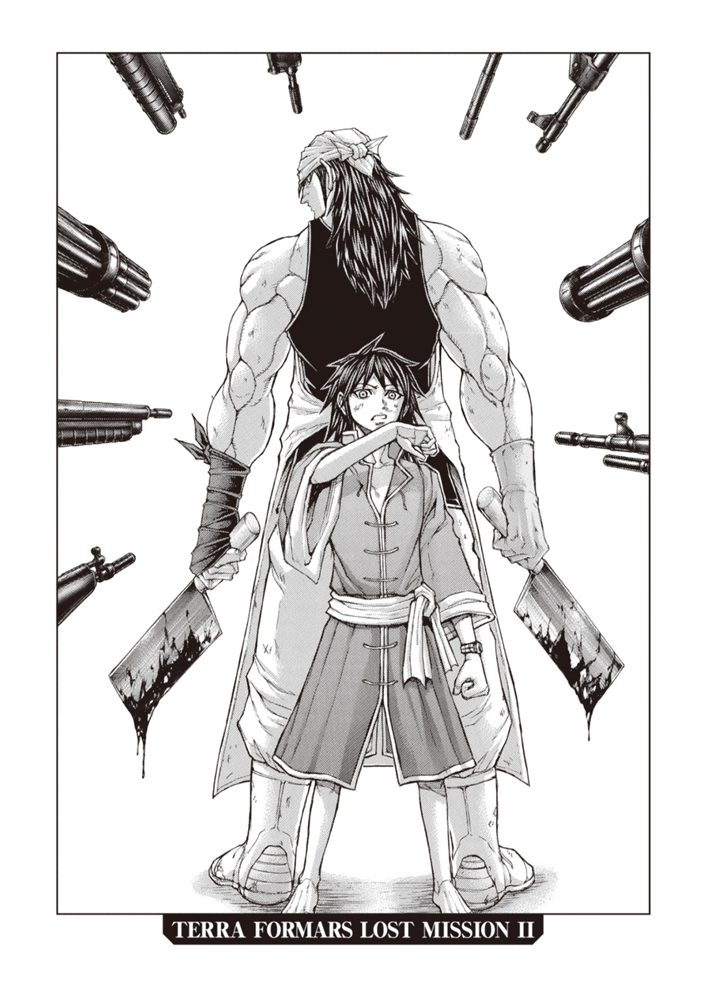
ビンタに抱えられて入った部屋で最初に感じたのは鉄錆の臭いだった。が、そうでないことは瞬時にわかった。部屋の床には血溜まりがいくつも広がっており、壁には血しぶきが飛んでいる。ギィの施設の講堂を半分ほどにした部屋には百人近い人間が集まって叫び、喚き、怒鳴り合っていた。
ボギャッと気味の悪い音が響くと完全にヘシ折られた首が背中まで垂れ下がっている人間がビンタとギィの足元まで飛んできた。ギィの体が固くなる。
倒れてこちらを向いたその顔は――ギィの首に針を打ち込んだバンダナ男だった。
ビンタに気づくと人だかりが自然と左右に分かれた。
すると中心でライトを浴びている鎧武者の姿が浮かび上がった。
切り落としたばかりの人間の首を刀で串刺しにし、掲げるところだった。鎧武者はパイセンであり、刀を突き通されたのはテーブルで賭けをしていたデブだった。他にもあの場所にいた者の姿があり、いずれも床に倒れ伏し、死んでいた。
『その娘がそうか』
突然、腹に響くような低音が響いた。どこかにスピーカーでも隠されているのか、その人間の声だけは明瞭に轟いた。
「サイオン！ 娘を連れてきたよ！」
『よこせ』
「ほら、行きな」
ビンタはギィを下ろすと背中を押した。
周囲の人間が一斉に物珍しそうに彼女を見下ろした。全員が醜悪で凶悪に思えた。まともな服装をしている者は、ひとりもいない。それどころか体のあちこちに義手や別の機械のパーツを着けている者が多かった。彼らはギィを前へ前へと押し出した。
血に濡れた床はぬるぬると滑り、何度も足を取られた。
『こいつか？』
「左様」
あの声がし、パイセンが答えた。
ギィはいつの間にか自分が見物人が作る円陣の真ん前に立たされているのに気づいた。
パイセンの周囲には脳、目玉、腸、首、耳、腕、足――が、まるで鍋の食い残しのようにあちこちに散らばり、同じものがパイセンの体自体にも呪いのように、ひらひらと貼り付いていた。
『なぜ、こんな娘が欲しいのだ』
「この者は俺が船長だった頃の記念。俺はこいつで生体首飾りを作りたい。宇宙広しといえども、こんなガキを首飾りにしている者はござるまい」
ギィはパイセンの手元から血が滴り落ちているのを見た。周囲に転がっているのは、いずれも一緒の船に乗っていた仲間ばかりだった。
〈いいぞ！ 俺も欲しい！〉
誰かが叫ぶとそれに賛同する声が湧き、足踏みと笑いで場内が揺れた。
ビンタは腕組みしたまま動かなかった。
ギィと目が合ったが、氷のような表情のまま見返すだけだった。
あのプラモ男の姿は見えない。
『娘。おまえはなぜこんなところにいる』
声が訊いた。
その瞬間、パイセンの陰になって見えなかったが飾りの付いた大きな椅子に誰かが座っているのがわかった――大きな角の生えた髑髏面を着け、銀色に光る骨の模様を散りばめた甲冑がゴリラのように隆々とした筋肉を包んでいた。拳がギィの頭ほどもデカイ。......これがサイオンなんだ、とギィは思った。
『答えろ』
ドンッ、と杖が突かれる音がした。
周囲の喧噪が一気に止み、シーンとなった。
ギィは震えを止めようと手と手を握り合わせた。
「か......かあちゃんに逢いに......」
『母はどこにいる』
ギィは顔を上げた。
サイオンの髑髏面と向き合った。
「火星」
端で、ぷっと声がすると、それがさざ波のように伝わり、再び、みなが笑い出した。
パイセンも肩を揺すっていた。
『静まれ！』
声が轟いた。また静寂が戻った。
『火星は現在、封鎖されている。あそこへ行く宇宙船はない』
ギィはサイオンが顎に手を当てるのを見た。何か考えているようだった。
「サイオン。俺とこの娘を闘わせてくれ」
パイセンがギィへと一歩踏み出した。
『待て。それでは勝負にならん』
その声の終わらないうちにギィの腹にパイセンの拳が叩き込まれた。
腹が裂け、背骨が砕けたと思った。ギィは見物人のひとりに体当たりするように吹っ飛ばされ、そのまま転げ回った。激痛が全身を駆け巡り、いつまでも抜けない。
サイオンの声がしたが、ギィには何を言っているのか、もう聞き取ることはできなかった。ぼんやりとした目の前をパイセンの拳が迫った。床に伏せると、どっぷりと血にまみれた。髪がひと房、毟り取られていった。
ギィはよろよろと立ち上がった。
と、左から光るものが風のように吹いてきた。それがパイセンが薙ぎ払った刀だと気づいたときには、既にギィの首は捉えられていた。
......かあちゃん、ごめん！
ギィは目を閉じた。
激しい金属音。
目を開けると首の皮に押し付けるようなギリギリでパイセンの刀が停止しているのに気づいた。
「サイオンが、やめろっ、つってんじゃん」
プラモ男だった。両手でパイセンの刀の柄を握り、攻撃を辛うじてしのがせていた。
「のけ！ 邪魔だ！」
パイセンが男の首に手刀を叩き込んだ。
男は前のめりに潰れたが、その拍子にギィを壁際まで放り投げた。
「ぬおぉ！」
パイセンの刀からよろめきながら男は右へ左へと逃げ回った。
『やめろ！』
パイセンに向かい周囲のなかから電磁槍が突き出された。切っ先が青白く閃光している。
『コック。おまえには娘を生かす理由があるのか』
男は立ち上がると膝の埃を払ってから頷いた。
「あのチビは俺が使いたい」
『何をさせる』
「カボチャの種取りだ」
周囲から失笑が起きる。
『そんなことは自分でやれ』
「だってよ。俺の指じゃ、うまく穿れねえんですよ。案外、細かいところをチョコマカ動き回りやがるもんでね」
『話にならん』
「ですがね......」
パイセンが再び動き出しそうになった。
「あーしには必要だよ。サイオン」
ビンタの声がした。
『話せ』
「前回、小惑星帯のひとつで、あーしの仲間たちが落盤で死んだ。地質によっちゃ重機の利かないところもある。そんなところを調べさせるには、あの子は便利なのさ。僅かな隙間から内部を調べさせることができる。お宝がなけりゃ無理に探すこともないし、時間と労力の節約にもなるんだ。言葉のわかる犬でもいりゃ別だけどね」
ビンタはパイセンの前に立った。
「それに、あーしは仲間を簡単に殺しまくるような外道が大嫌いなんだ」
「ふん。こいつらは仲間ではない。俺に仲間などという弱きものは不要」
「必要ないのは、あんたがバケモノだからだよ」
パイセンが唸り出した。
「だったら、こうしたらどうだい」
不意に声がすると長髪で左目に黒い眼帯をつけていた男が前に出た。
「そのガキが生きるに値するかどうか。ダークスター方式で自分で決めさせれば」
「そんなの無茶だろ」プラモ男が怒鳴った。「まだ生理も来ねえようなガキだぜ」
「そんなこたぁ、関係あるかよ。いままで例外はねえんだ。現にこいつもルールに従って闘っただけだ」
眼帯男はパイセンを指差した。
「仲間を殺す外道だとか言うが、俺たちはみんな外道だ。みんな、同じようなことをして生き残る権利を勝ち取ったんだぜ。そのガキを例外にするなら、次から次へと例外を認めなくちゃなんねえ。そうだろ？ みんな！」
また周囲の人間が賛成とばかりに喚いた。
『司祭！』
サイオンが叫ぶと重々しい老人の声が返ってきた。
『グチマールの意見を可と致しましょう』
場の全員が拍手をし、ビンタが俯き、プラモ男が舌打ちしたのをギィは見た。
すると側にいた男がギィにナイフを握らせた。
「へっへへ。がんばんなよ」
ギィの顔に臭い息を吐きかけながら、そいつは愉快で仕方がないというように舌なめずりした。
『娘。おまえはいまからこの部屋にいる誰でも良い。五人の人間を殺せ。無論、殺さなければおまえが殺されるのだ』
サイオンの言葉に思わずギィはビンタを振り向いた。
彼女はギィを見つめていたが、その表情は困惑しているだけだった。
すると周囲の人間が手に手に武器を取った。
「そのガキは俺のもの」
パイセンが宣言するように叫んだ、が、それに耳を貸す者はほとんどいないようだった。
ギィはどちらに逃げていいのかわからなかった。ゆっくりと周囲の輪が狭まってくる。
「来るな！」
ギィはナイフを振った。が、当然のことながらそれは宙を切り、反対に冷やかすような声を誘っただけだった。
「あっち行け！ 来るな！」
ギィは滅茶苦茶にナイフを振った。
パイセンが、いつでも襲えるように輪の外側から自分を狙っているのがわかった。
『始めよ！』
サイオンの声が轟いた。
ギィはしゃがみ、次いでナイフを振って近くにあった足のいくつかを切った。頭上で悲鳴が上がったが、すぐに服が切られるのを感じた。
目の前にパイセンの刀が突き刺さった。床がえぐれ、それが引き抜かれた。と、刺し貫かれた人間が目の前に倒れ込んだ。ギィはそれを避けようとしてつまずいた。
体が不意にがっしりと摑まれた。
......終わった、そう思った途端、右手が摑まれた。プラモ男の拳が、がっしりとナイフごと摑んでいる。
「!?」
ギィは野次馬のなかに飛び込んでいた。そして悲鳴を上げる間もなく、ナイフがギィの拳ごと振り回され、その場にいた人間を突き刺し、切り付け、薙ぎ払った。
〈ぐぇ〉
〈げぶぅ〉
〈ぎぃあ〉
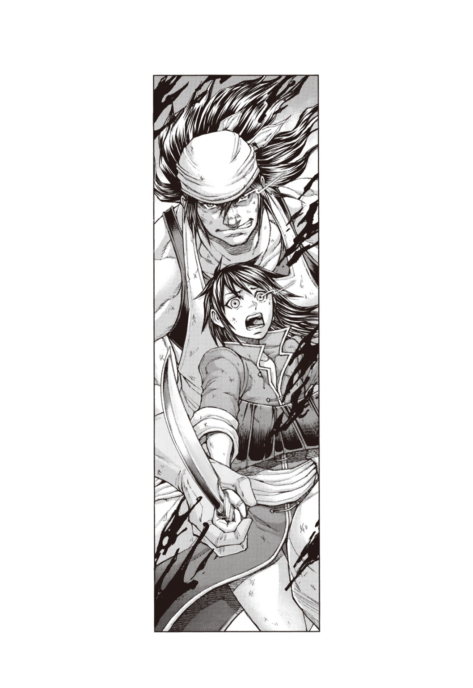
ギィは皮膚の隙間から切断された頸動脈が飛び出すのを見、顔にしょっぱい血の雨が降りかかるのを感じた。目を閉じたが、尚も拳は休まずに振り回された。ナイフの刃先に抵抗を感じると悲鳴が上がり、生温かい血液が降りかかる。
「うわっ！」
ギィが叫んだ。と同時に体が投げ出され、床に転がっている自分に気づいた。
「五人。やったぜ」
肩で息をしながらプラモ男が言った。
「馬鹿な！ こやつらは、おまえが殺戮したのだ！ ガキではない！」
パイセンが怒鳴った。
「サイオン！ 致命傷を与えた武器を所持していた者にカウントの権利があるというのがダークスターのルールだ。ナイフを握っていたのは彼女だ。俺は手を貸したまでだ！」
プラモ男が叫んでいる間、ギィは必死に血塗れの手からナイフを引き剝がそうとした。しかし、拳が別人のもののように開かない。
「インチキだぜ！」
グチマールと呼ばれた眼帯男が叫んだ。
野次馬のブーイングで場内は騒然となった。
「俺の手のどこが悪い！ おまえらだって機械の腕で相手を殺すじゃないか！ それはおまえらのカウントじゃないのか！」
〈そんな屁理屈は認めないぞ！〉
〈殺せ！ 殺せ！ 殺せ！ 殺せ！〉
ジリジリと再び、野次馬の壁がふたりを取り囲み始めた。ナイフ、山刀、ハンマー、鎌、槍、ひとりひとりが武器を剝き出しに迫る。
「ちっ、まずいな......」
プラモ男がギィがやっと放したナイフを拾う。そしてギィを守ろうとするかのようにもう片方の腕を回したが、彼女はそれを振り払った。
「!? おい。何をする」
ギィはとっさに首を振りながらプラモ男から離れる。
その先には彼らを狙う群がいた。
「馬鹿！ 何をしてる！」
サイオンが杖で強く床を突いた。場内に信じられないほどの轟音が轟き、ギィはあまりの激しさに内臓を吐き出しそうになった。
――静寂が支配した。
『司祭！』
サイオンが怒鳴った。
最前の声がした。喧噪とは全く無縁の別の次元から響いてくるような声だった。
『コックの行動は著しく常識を欠いたものではあるが逸脱したものとは考えられない。謂わば、ゲームでいうところの奇手。よって、その小さき女は四十八時間限定で生きる。ダイモスでのミッション終了後、小さき女はパイセンに譲られる』
......譲られる。
ギィは司祭の言葉を反芻した。
プラモ男が啞然とした顔でギィを振り返っていた。
野次馬から小さな不満は上がったが、強く反対する者は皆無だった。
『艦の判断は以上だ。娘はミッション終了をめどにパイセンに移譲。それまではコックの管理下におく。解散』
サイオンの言葉に男たちは退出を始めた。
「コック。貴様は許さん。ガキの次はおまえだ」
パイセンがギィと男を睨み付けて行った。
グチマールがビンタとギィに向かい、両手の人差し指で〈撃つ〉真似をして去った。
部屋に残ったのはギィとプラモ男と死体と人間の欠片だけになった。
ギィは膝を抱えてしゃがみこんでいた。
「ボク、人殺しだ」
「ああ。だが心配するな。じきにおまえも誰かに殺される。少なくともパイセンはおまえを生かしてはおかない。ああなるのも早いか遅いかの違いだけだ。次は守れねえぞ。悪いけどな」
ギィは頷いた。
「おじさん、名前は？」
「俺か？」男は周囲を見回してから言った。「カンオケ」
ギィは男の顔をマジマジと見つめた。
ギィはたった三分で宇宙カボチャのことが大嫌いになった。果肉はべとべとして奇妙な臭いがするし、いくら注意しても繊維がしつこく爪と爪の間に忍び込んできてひどく痛んだ。
「手袋は？」
「ない。そんなものをしていては穿れねえ」
キッチンに戻ったカンオケはずっと仏頂面をしていた。もともとそういう顔なのかもしれないがギィは放っておくことにした。
カンオケは冷蔵庫から大きく毒々しいオレンジ色のカボチャをキッチンの隅に山と積み上げ、そのなかのみっつを馬鹿でかい菜切り包丁でふたつに割ると〈種を取れ〉とだけ命じた。皮と同じ色の果肉のなかに白い種が埋まっていた。カンオケが言っていたように、種は押し込むとぶよぶよした果肉のなかを逃げ回り、指で探るのがひと苦労だった。
「中身は？」
「その容器に溜めておけ。奴らの料理に使う。いま必要なのは種だけだ」
「こんな水虫みたいな臭いのカボチャ食べたくない」
「それが、ここの奴らには大好評なのさ。生まれつきジャンクフードとドラッグばかりのあいつらの口には合うようだ」
肉のブロックを刻んでいたカンオケは手を停めた。
「そのカボチャは元々、そんな代物じゃないんだ。そいつは培地として使われたから化学変化してしまっただけでな」
「バイチ？」
「ああ。その白い種はカボチャの種じゃない。スプラウト類を凝縮させたものなんだ」
ギィは白い種を摘まんだ。
「もともと普通のブロッコリーにもコカインとかの原料となるアルカロイドが微量だが含まれている。遺伝子をいじってそいつを増幅、濃縮し、更に種のなかに凝縮させた。その一粒から十回分のコカインが抽出できる。コカイン、やったことあるか？」
ギィは首を振った。
「俺はダウナー系、一本鎗だから興味はないが。この船には、それがなくちゃ一秒だっていられないって奴がうじゃうじゃいるんだ」
ギィは種をボウルに落とした。既にそこには五十粒ほどが溜まっている。
「ねえ。司祭ってどこにいる？」
「ああ、あれは人間じゃない。この艦のメインコンピューターだ。口調が馬鹿丁寧なんでそんな仇名がついている。小難しい航行計算や、宇宙のデータ、艦内の設備の管理をしている。勿論、二十四時間年中無休でな。また艦内での全記録を持っているんでサイオンは司祭に判断を仰ぐことが多いな」
「ふうん。機械なんだ」
「なあ、指は無事か」
「え」
「随分、殴られたり、弾き飛ばされたりしてたからな」
「大丈夫。さっき出て来たから」
「死ぬ前には返してくれるだろうな」
「うん」
「約束しろよな」
「うん。あの指は誰のなの」
「知り合いだ。謂わば、形見だ」
「ふーん」
ふたりはそれから暫く黙々と種取りに没頭した。
種の山がボウルにひと山できた頃、カンオケが口を開いた。
「俺もおまえと一緒でな。他の船にいたのをとっ捕まったんだ。もっとも俺の場合は故障したせいだし、乗組員は俺だけだったがね」
「何やってたの」
「まあ......葬儀屋だ」
「ソーギヤ？」
「宇宙葬専門だ。骨壺をロケットに詰めて宇宙に打ち上げるやつさ。会社が大手に押されて倒産したんで自分で始めたんだが、このド不況だろ。にっちもさっちも行かなくなっちまったもんだから、ちょっと内職をしたのよ」
ギィがわからないという顔をした。
「顧客の骨壺をラグランジュポイントに置いたのさ」
「全然、わかんない」
「ふたつの天体の間で発生する重力の均衡ポイントだ。そこにある物質は同じ位置に留まる。つまり、性能の良い量子天体望遠鏡なんかを使えば、永遠に婆様や爺様の骨壺が、お星様の代わりに拝めるって寸法なのさ。勿論、国際宇宙法上は固く禁じられている。スペースコロニー建設や調査の邪魔になるからな。しかし、この法はザルでね。やったほうはブチ込まれるが、頼んだほうはお構いなしだ。遺族のやむにやまれぬ感情に配慮してとかなんとかって言うが、結局はそんなことを頼む物好きは金持ちしかいないからさ。仲間びいきしてるんだな。俺はそれが原因で地球を追放されたのよ」
「だから、カンオケ......」
「そうだ。それと俺は料理はできない」
「じゃあ、なんでここのキッチンでコックやってんの」
「そのうちにわかる。それとここはキッチンじゃない。烹炊室と呼べ」
「ほーすいしつ？」
「ああ、軍艦だからな」
そのとき、ドアが開き、ビンタが入ってきた。
「ちょっとおいで」
「どうすんだ」
「例のブツに使いたいの」
「例の？ ああ、パイセンがディオレッツァ辺りで強奪した船の積荷か。箱なんだろ？」
「正確には繭ね。でも生体金庫の可能性が出てきたのよ。となると、メスの、これほど年端もいかぬ子ならチャンスがあるかもしれないからね。あらゆるチャンスを試したいの」
「辺境を知る首が入ってることは確かなのか」
「技術員らしきオカマが断片的にそう白状したけどね。もっとも自白させた奴が未熟で脳を溶融させちゃったから、あまり正確とは言えないけど。......他に手がないの」
「あとで連れてくよ」
「急いでね」
ビンタはギィに一瞥をくれると出て行った。
ギィが見つめているのに気づいたカンオケは唇の端に挟んでいた爪楊枝を咥え直した。
「パイセンの襲撃した船に継ぎ目のない箱があった。技術部はそれを一種の金庫だと信じてる。とんでもないお宝が入っているとな。死ぬ間際、船員の一人がそんなことを臭わしたらしい。生体金庫なら、ある種の塩基配列がキーだ。俺たち乗組員は全員が試した。それでも開かないのさ。ビンタはおまえのＤＮＡで開くかどうか試したいんだ」
「マップが......どうとかって」
「ああ。この艦は他船を襲うのと同様、太陽系内のエネルギー資源をしらみつぶしに漁っているのさ。要は盗掘だな。レアメタルや宝石になる前のジェム・ストーン。更にはエネルギーリングに加工できそうな重金属系鉱石」
「わかんない」
「この広い宇宙を片っ端から探して回るなんてことは誰にもできっこないんだ。だから効率よく盗んで回るには情報がいる。何が、どこに、どんな形で眠っているのかをな。だから、いま最も重要なのは宇宙地図だ。どの探査船も海賊も自分たちの星図座標や分析資料は秘中の秘。それを根こそぎ戴くのもこの艦の重要な目的なのさ」
ギィは頷いた。
「この船は普通じゃねえ。乗ってるのは勿論、船自体もそうさ。建造技術しかり、武器しかり、装備しかり。第一、ステルス装甲に他船を捕獲するための重力変換装置なんてものを個人が所有できるはずがない。どこかの国が国策として製造した宇宙戦艦さ。表向きは海賊仕様の商業船だがな。そして、こんなものを拵えるような国は、きっと世界の鼻つまみさ」
ギィはカンオケを見つめた。
「なんだ？」
「なんで、ボクを助けたの」
「そりゃ、おまえが死んだら指がどうなるか心配だったからよ」
「でも、死体の腹を裂けばいいんでしょ」
「あの馬鹿は、おまえを殺したら、死体を好き勝手に使うつもりだったんだぞ」
「ああ、そうだね」
ギィは溜息を吐いた。
「目だ」カンオケが言った。
「め？」
「おまえの目だよ」
カンオケは冷蔵庫から林檎を取り出すとギィに放った。新鮮な果物は何か月も口にしたことがなかった。ギィは香りを嗅いでから囓った。甘酸っぱい果汁が口に溢れた。
「おまえの目......百年以上生きてきたような目だ。死人の目でもない、この世の果てを覗いたような目玉を見たときから気になった。おまえ、いったい何を見てきたんだ......」
ギィは嚙むのをやめた。
「ここはつまらねえところだ。朝から晩まで人でなしの相手ばかりしていると、たまに馬鹿をしたくなる。それが暇つぶしにもなり、甲斐にもなる......」
「でも、次の仕事が済むまでのことでしょ。ボクは用が済んだらお払い箱だもん」
そのとき、部屋のスピーカーが鳴った。
『カンオケ、連れて来て』
「あいよ」
カンオケは立ち上がり、バンダナを結び直し、包丁を腰に差した。
ギィは寂しげな表情のままである。
「俺から離れるな」
技術部が待つという部屋は下層にあった。
ドアが開くと、ビンタが顔を上げた。
白い作業服の男たちの真ん中にそれはあった――まるで黒い巨大な繭だった。
「こいつか」
「そう」
「ふうむ」
カンオケは腕を組んだ。
「縦三百センチ、横百センチ、高さ八十センチ。スキャナがてんで効かねえんだ」
繭に取りついていた左目から顎にかけ大きな刀傷のある男が言った。
「よお！ ジュガン」
「よく生き残ったな。その子」
「とりあえず運は良いみたいだけどね......とりあえずだけど」ビンタが付け加える。
ギィはビンタとジュガンからはカンオケに近いものを感じた。
「本当に生体金庫なのか......」
「残った可能性はそれだけなんだよ。ここに凹みがみっつ並んでいるだろ。ここに何か情報を与えると解錠する気がするんだ」
「なんだか頼りない話だな」
すると別の白衣の男がギィに近づいた。手にした筒を腕に当てる。肌に風が当たるような感じがした。
「これで終わりか？」
「あと虹彩を......」
ギィはフラッシュが焚かれるのを感じた。目の前を暗いグリーンの斑点がチラチラした。
と、艦全体が大きく揺れた。
慌ててカンオケにしがみついたギィは太い腕ががっしりと体を守るのを見た。
『総員、着陸態勢につけ。数分で我々は目的地に到着する......』
髑髏面の声が轟いた。
「着陸？ 着陸って、どこに着陸するんだ」
ビンタが首を振った。
「呆れたね。あんたは緊急通達にも目を通してないの」
「船の馬鹿どもの胃袋のために、ひとりでてんてこ舞いしてるんだ。そんな暇があるか」
「衛星ダイモスよ。繭が回収された軌跡を付着物質から司祭が割り出したの。それで遡ってるんじゃない」
「知らんよそんなこと」
「ビンタ」
そのとき、白衣の男が首を振った。
「はあ。やはりダメか。まあ、しょうがないね」
「け、そう都合よくいくか」
カンオケの頰が鳴った。
「痛ってぇ。ビンタすんなよ、ビンタ」
「わかっちゃいるけど。あんたに言われると腹が立つ」
その瞬間、艦が急激に下降し、その衝撃に全員が弾き飛ばされた。
繭が固定ロープ一杯に浮き上がり、沈んだ。
壁にぶつかったカンオケが叫んだ。
「ビンタ！ ダイモスってのはどこだ？」
「何も知んないの！ ダイモスってのは......」
ビンタが叫び返す。いまや声も聞き取れないほど艦全体が震動していた。
『......ただいま本艦は火星辺縁系を覆う隔離レーダー網を亜光速突破する。最高速度での突入後、逆噴射による非常緊急着陸を決行。くりかえす。総員、緊急着陸に対する衝撃に備えよ......』
ギィはその声にハッとした。
火星？ 火星に！
カンオケと目が合った。
「おい！ 火星なのか？」
「ダイモスってのは火星にふたつある衛星のひとつさ。この繭もこの空域で回収されたらしいしな。何かあるに違いねえ。やつらは表向き惑星地球化計画なんて言っちゃいるけど、なに、こっそりレアメタルを掘り出してるのさ。そいつを横から掠めようってのがサイオンの狙いさ」
コンソールの把手を摑んだジュガンが叫んだ。
カンオケが、ギィに囁いた。
「いいか。歯を食いしばって目をつぶっておけ。信じられない衝撃が来る。油断するなよ。背骨がヘシ折れる」
「うん」
震動で視界が、ブレ始めた。
〈火星......火星のそば......かあちゃんの側......行きたい......行きたい......神様〉
カンオケの腕にしがみつきながら、ギィは不安をよそに熱いものが胸の奥から、こみあがるのを感じていた。
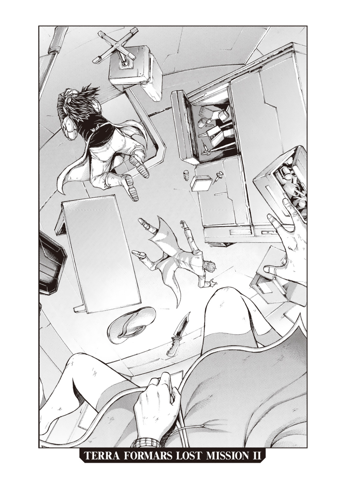
カンオケの言葉は本当だった。ギィは体がふわっと浮くのを感じた途端、天井に顔をぶつけていた。驚いたことにカンオケごと叩きつけられたのである。その後、床に同じスピードで叩きつけられ、また天井に叩きつけられたところでわからなくなった。決して失神したのでも気を失ったのでもないが、視界が全方位的にぐるぐると回り、人も壁も床もパネルも、ありとあらゆるものが自分にぶつかっては離れていったので脳が情報を処理しきれなくなったのだ。
誰かが呻き、それからカンオケとジュガン、ビンタ、白衣の者たちが続いた。
「畜生。乱暴しやがるぜ。人を何だと思ってやがるんだ」
「人を人だと思ってねえのさ」
倒れている白衣の男に近寄ったカンオケにジュガンが答えた。
「あ、こいつはダメだ」
男の首は完全に砕けていた。持ち上げたカンオケが手を放す。
「無事、着陸したみたいね」
丸い窓から外を見たビンタが振り返る。
「なんだかちっぽけなところだな。あのデカいのが火星。向こうのがもうひとつの衛星か」
「ダイモスは直径六キロ。あれは〈火星の双子〉と呼ばれる片割れフォボスだ。フォボスは二十キロ強あるが火星の引力で近い将来、墜落すると言われてる」
ジュガンが言った。
「星が墜落するかよ」
「するよ。速度低下すればな。そうすりゃ引力の均衡が維持できない。力の強い火星に吸い寄せられる。それを便宜上〈墜落〉と呼ぶのさ」
「へえ。あっちより、こっちのチビのほうが先に墜落しそうなもんだがな」
「火星からはフォボスのほうが近い。それにダイモスの公転周期はフォボスよりもかなり低速だから安定性は高いだろうと言われている。無論、なんらかの理由でダイモスの速度が大幅に落ちればフォボスを追い抜いて墜落することはありえる」
カンオケは痛そうに首を押さえながらギィを振り向いた。
ギィは火星を睨んだまま微動だにしなかった。
「大丈夫か？ チビ」
ギィは頷いた。
「フォボスってのは恐怖、ダイモスってのは恐慌を表す神の名だってさ」ビンタが言う。
「なんだってそんな名前なんだよ」
「母星である火星がマルス。つまり、ローマ神話の戦争の神の名だから。その息子の名なんだ。フォボスとダイモス......戦争は恐怖とパニックを引き起こすだろ」
「ふん。験クソ悪い星だぜ」
『調査班と試掘班は直ちに出発の準備に取りかかれ。総員各位、作戦開始』
サイオンの声がした。
ビンタがギィを振り返った。
「じゃあ、あんたともコレが終わったらお別れね」
ギィは頷いた。
「この子はあーしの班で使うからＤ発着ゲートに連れてきて。船外活動ユニットは被服庫で探すしかないわね。ここらにあるのはどれもこれも大きすぎるだろうから」
ビンタがカンオケに告げる。
「ほい」
「？」
一歩近づいたジュガンがギィの前で手を開いた。
小さな白い生き物がいた――鼠だった。
「あ」
「オーロック十世だ。いや、十二世だったかな」
「かわいい」
ジュガンはギィの手にそっと移した。
「二十日鼠だ。俺が宇宙に出てからだから二十年以上は飼ってる」
「そんなに......」
「ｉＰＳペットだ。だから死んでも保存細胞からいつまでも一〇〇％同じオーロックができる。どの世代も全員、何故かヘビメタが好きなんだ。面白いぜ」
ギィは桃色の鼻先をひくつかせるオーロックを掌から掌へ移動させた。
「やるよ」
「ありがとう」
ギィは頷いた。
「いくぞ」
カンオケが促す。
自動ドアが閉まるときビンタとジュガンが自分を見ているのがわかった。
「おい。歩きながら、そんなもの触ってるんじゃねえ」
ギィはオーロックをポケットにしまった。
地球の鼠よりも賢いのか、それとも何代にもわたって再生産されたからなのか、オーロックはポケットにおさまると、すぐにおとなしくなった。
「ねえ」
廊下を進むカンオケにギィは尋ねた。
「さっきの人たち、なんだか違う感じがする」
「ああ。ビンタもジュガンも俺と同じで元はマトモな職業に就いていたのを拉致され、無理矢理、仲間にされた組だからな。根っからのワルじゃねえのさ。闘技場のは全員が地球には居られなくなった極悪人や海賊船から移ってきた奴らだ。強盗、強姦、殺人、誘拐なんでもＯＫ、腕力ばかりの屑ばかりさ。ところで、おまえ指あるか？」
ギィは口の端から覗かせた。
「うう。唾でべたべたじゃねえか。ほんとに大丈夫なんだろうな」
「大丈夫だよ、ボクの胃液、そんなに強くないから」
「答えになってんのか？ それ」
被服庫は技術部の部屋から十分ほどのところ、艦の端にあった。
扉の前には椅子に座った海坊主のような禿の大男がいた。男は座ったまま彼らを睨んだ。手には漫画に出てくるような鋲付きの金棒を持っていた。カンオケが説明すると顎をしゃくって勝手にしろと呟いた。椅子からは立とうともしなかった。彼がどこかのボタンを押すと油と煤で汚れた鉄の門が静かに開きだした。
「へえれ」
「さんきゅ」
カンオケはなかに足を踏み入れた。ギィも続く。入るとすぐさま物の腐った臭いに咽せた。あちこちに宇宙服と思しき物が積まれて山となっていた。
「けっ。どっからどう探せッつうんだよ」
手近の二、三枚を拾い上げ、また捨てたカンオケがボヤいた。
ギィも手に取ってみたが服には穴が開き、ヘルメットは割れたり、ヒビが入ったりし、またそのいずれにも乾いた血が黒く付着していた。
......襲われた人たちの服。
ギィはそう思った。
宇宙服といってもいろいろな形や色、大きさがあった。内側の、直接体に触れる部分には刺繡のような装飾が施されている物もあり、持主の個性が見て取れた。
が、これを着ていた人たちは、もうこの世にはいないんだろうなとも感じられた。
あれこれと掘るようにして服の山を崩しつつ奥へと進んだカンオケが叫んだ。
「あったぞ！ こいつはどうだ」
両手で掲げた宇宙服は確かに子供のものだった。
「どうだ？ 文句ねえだろ。ヘルメットまで新品同様だぜ」
カンオケは見てみろとばかりに服を手でぱんぱんと叩いた。
ギィは差し出された服を手に取った。内側には花柄模様の生地、女の子かもしれないなとギィは思った。
「試してみろ。さぁ」
ギィは体を入れた。靴と手袋も一体型のものだった。すっぽりと全体が体にフィットするのを感じた、が、グローブに違和感があった。
「どうだどうだいいだろいいだろ」
「ん。なんか変」
「変？ 何がだ」
「ちょっと」
そう言うとギィは肩を外し、手をグローブから抜いた。手が真っ赤だった。しかも、小さな蛆が指にびっしりと貼り付いて戻ってきた。
「わぁ」
ギィは慌てて手を振ると服から飛び出した。
両手を叩き合わせ、這い回りチクチクする虫を払い落とす。
カンオケはボンヤリと突っ立って眺めていた。
「虫がいる！」ギィは大声を上げた。
「そうかい」
「ボク、こんな服、着たくない。これは死んだ子の服だ」
「ここにあるのは全て死体から剝ぎ取った服だ。当たり前だろ。あと二日足らずで死ぬんだ。予行演習だと思って我慢しろ」
「いやだ！」
「じゃあ、勝手に探せ。俺は知らん」
カンオケはそう言うと山の上に寝転がった。
ギィはそれを睨むと自分で探すことにした。
「但し、時間切れになったら、その服で出かけるんだぞ」
カンオケは欠伸をした。
ギィは探し回った。が、大抵は大人のものばかりだった。
時折、各所に連絡するサイオンや司祭の声が流れてきた。その度にギィは時間切れかとドキッとした。
やがて古びてはいるが子供用の宇宙服を見つけた。先程のものと同じブーツとグローブ一体型だったので、なかを慎重に確認してみた。汗と埃の臭いが変に強かったが血も虫もついていない。近くにヘルメットもあった。
「これならいい」
「ふん」
カンオケは大した反応も見せずギィに服を着せると外に出た。
オーロックが慣れた様子でポケットのなかから肩に移動して留まった。
大男は手元のハンディ端末に没頭し、カンオケの「邪魔したな」という言葉にも返事をしなかった。
その後、カンオケが模型部屋の奥で自分の宇宙服に着替えると、ふたりは発着ゲートに向かった。
「ねえ。あれは何」
途中、ギィはカンオケの腕を引いた。小型の宇宙船がずらりと並んでいるのがガラス越しに見えた。
「ああ。廃機場だ。こいつらも盗品をさばける宇宙港か、待ち合わせポイントで買い取り船に積み替えて金にするのさ」
「故障機なんだ」
「いや。いくらこの艦がデカくても、部品取りにしか使えねえようなそんな無駄な船を載せておく贅沢はできねえんだ。みんな、まともに飛ぶやつばかりだぜ。機関部が整備もしているからな。売ればそれなりになるお宝ばかりさ」
「ふ〜ん」
ギィは足を止めた。
「なんだ」
「ちょっと見たい」
「ああ？」
「どうせ死ぬんだもの。一遍ぐらいは見たいよ。いいでしょ」
ギィはカンオケの答えも聞かず、扉の間からなかに入った。船に取り付いて作業をしていた数人がそれに気づき「おい！」と声を上げた。
「ああ！ 悪い悪い！ 技術部の用だ」
カンオケが適当に言い訳しながら近づき、ギィの腕を摑んだ。
「おい。いい加減にしろ。こいつらは荒っぽいんだ。頭をパイプレンチで割られちまうぞ」
ギィは腕を振り払うと船の間を走り出した。
「待て！ おい！」
ギィは真っ直ぐ走っては横へ、更に走ってはまた曲がるをくりかえした。数台の工業用ロボットが警告音を発し、ボロ布をまとった油まみれの男たちが手にした工具を振り回しながら追ってくるのが見えた。
肩と首の回りをオーロックが忙しげに駆け回る。
......どれか、どれか見つけなくちゃ......。
ギィは祈るような思いで周囲の船に目を遣った。大きくなくていい、ただ自分でも扱えそうで、丈夫な船が必要だった。
すると大きなボール状の一台が目に留まった。クリスマスの飾りにそっくりで真ん中のオレンジ色のラインがきれいだった。乾燥機の入口のようにガラス風のドアが開いていた。ギィはそのなかに飛び込み、奥に身を潜ませるとカンオケと他の男が自分の名前を呼びながら駆け去った。
......しめた！
運転パネルの上には大きく〈ＥＲＳ〉との文字があり、操縦方法が絵で描いてあった。
「よせ！」
ギィを見つけたカンオケが駆け寄ってきた。
順番どおりにボタンを押すとハッチが閉じる。寸前で間に合わなかったカンオケがガラスの向こうに取り付き、喚きながらバンバン叩く。把手を摑んで無理矢理、開けようとするが勿論、開くはずがなかった。
するとボロ布をまとった男がギィをガラス窓越しに睨み付け、軽く頷くと船の下に潜り込んだ。
......停められる！
ギィはボタンを素早く押した。ボンッと発射音がすると機体が勢いよく動き、前と後ろにある他の船に体当たりをくりかえし、垂直に浮かび上がった。
やった！
ギィは体が持ち上がるのを感じた。が、突然、機体が大きく傾ぎ、それとともにぶるんぶるんと振り回されるように同じ軌道を回転し始めた。
「うわぁ！」
ギィはひっくり返らないように両手をポッドのなかで突っ張るのが精一杯だった。警告サインとランプ、それと何語だかわからない女性の声が響く。
窓から下を見るとカンオケや他の男たちが何か喚きながら大騒ぎをしていた。既に十メートルは浮いている。
「なんで飛ばないんだよ！」
ギィは操縦桿を摑み、叫んだ。
「全部、押したぞ！」
女のアナウンスが大きくなったように聞こえた。
「わかんないよ！ 何語だよ！ ボク、全部、押したんだぞ！」
その瞬間、全ての電源が消え、ポッドは勢いよく墜落した。安全ベルトをしていなかったギィはまともに衝撃を全身に喰らい、息が止まった。オーロックが椅子の片隅から飛び出してき、ギィの鼻先で震えた。
「ごめんね。怖がらせて」
両手で包むとハッチが無理矢理、引き剝がされた。一気に怒声と世の中の騒音の全てが襲いかかってきた。
さっき下に潜り込んだ機関工がギィを摑み出すと床に叩きつけた。ギィはオーロックが怪我をしないように両手でかばっていたので、顔面を強く鉄板に打ち付けた。
「待て！ 殺すな！ こいつにはサイオンからの任務がある！」
カンオケが叫んだ。が、男たちは我慢ができないのかギィの体を滅茶苦茶に踏み付け、蹴り上げた。
「か、火星に！ 火星に行くんだ！ かあちゃんに逢うんだよ！ 逢いたいんだぁ！」
ギィは力の限り絶叫した。
「なにを、クソみてぇなことを言ってるんだよ」
人混みをグイッと分けて入ってきた眼帯の顔にギィは見覚えがあった。
グチマールと呼ばれていた男だった。
「よせ！」
摑みかかろうとしたカンオケが周囲の男に抑え込まれた。
「死ね。ガキ」
そう叫んだ瞬間、彼は手にした槍をギィの体に叩き込んだ。
「ぐぎぃぃぃぃ！」
鼓膜が破裂し、全身に稲妻が走り、無数の針が突き立った。
ギィが気を失う瞬間、手のなかのオーロックが小さな手を握り締め、青白く発光すると枯れるように斃れた。
......ごめん......オーロック、ごめん......。
ギィは深い闇のなかに落ちていった。
微かな震動が暗い沼の底に沈殿していたような意識を目覚めさせた。ギィは目を開ける前に再び〈あの声〉を聞いたような気がしていた――生きなさい。
勿論、それは先生の声ではなかった。
鉄の缶詰......うっすらと目を開けたとき、ギィはぼんやりそんなことを思った。
「気づいたか......」
声のするほうを向くと宇宙服姿のカンオケとビンタが少し離れたベンチに向かい合わせで座っていた。軍用車両のような室内は、時折揺れる音がする以外、誰も口を利かず、静かだった。
ビンタはギィと目が合ったが、冷たい顔でぷいと横を向いた。
「いまから三番目のクレーターに向かう。おまえはそこで仕事をするんだ。いいな」
ギィは頷いた。が、体を起こそうとしても力が入らなかった。
「到着までもう少しかかる。着くまで寝てろ。軍事用パルスタン・スピアを直に喰らったんだ。意識が戻らなくても当たり前だったぞ」
「ぱるすたん？」
「ああ、電気振動で脳味噌の信号を根こそぎブロックしちまうものとスタンガンをくっつけた武器だ。電撃よりも、凶悪なパルスウェーブだ。脳の一部を時には破壊するからな。ひどけりゃ死ぬか、半身不随さ......グチマールの野郎。指、あるか？」
ギィは頷いた。あると思う、と思った。
「あんたが入るのはね。新しいクレーターなの」ビンタが口を開いた。「ダイモスには元々、ボルテールとスウィフトというふたつの大きなクレーターがあったのよ。そのふたつはもう調べたわ。めぼしい物はなかった。だから、新しいみっつ目に行くのよ」
「先に行ってるグチマールが裂け目を見つけた。おまえはそこからなかに乗り込む」
......グチマール。
ギィは自分を突きながらニヤついていた顔を思い出し、鳥肌が立った。
「あ」
半身を起こそうとしたとき、両手に引き攣れにも似た鈍い痛みが走った。見ると左の手首にあるはずの端末が消え、バンドの痕だけが。そして右は掌に茶色の影がくっきりと残っていた――小さな丸い影。
オーロックが残した火傷の痕だった。
ギィは奥歯を嚙みしめた。
「下りるぞ。メットを着けろ」
車が停まるとカンオケがギィの体を起こし、ヘルメットを装着させた。
それからヘルメットの後部をいじっている感覚がすると、いきなりカンオケの声が飛び込んできた。
『聞こえるか』
ギィは頷いた。
『そのまま話せばいい。ヘルメットにレシーバーが装着してある』
「わかった」
『おまえはこれからビンタの指示で第三のクレーター調査に向かう。先にグチマールが到着している。奴の報告では長い割れ目の先に調査したい箇所があるらしい』
ギィは頷いた。
『指はあるか？』
ギィは胃を動かし、それから口の端に覗かせた。
『よしよし』
『行くよ。早くしな』
ビンタの声が混じり、既に開いた車のドアから顔を覗かせていた。
カンオケが降り、続いてギィが車から出た。
派手な探査車だった。
前部は鋭い牙を持つ金属製の巨大な猪の首。側面には日焼けしたビキニの女が三人汗だくで絡み合っているグラフィック。その下に〈ＧａｌａｃｔｉｃＨｏｇｇｅｒ〉と波打つバナーが描かれていた。
ダイモスの地面は白い。灰色の小麦粉を撒き散らしたみたいだとギィは思った。
『見ろ』
カンオケの声にギィは顔を上げた。
......すごい。目の当たりにした光景に我を忘れた。
距離にして僅か二万三千五百キロ、地球と月のそれの十六分の一のところに火星はあった。まるで全体を黒と緑の縞で覆った宇宙の西瓜のようだった。
あまりにも巨大な火星の姿に、ギィはそれがこちらに向かって落ちてくるような錯覚さえ憶えた。
『ああ、大したもんだな』
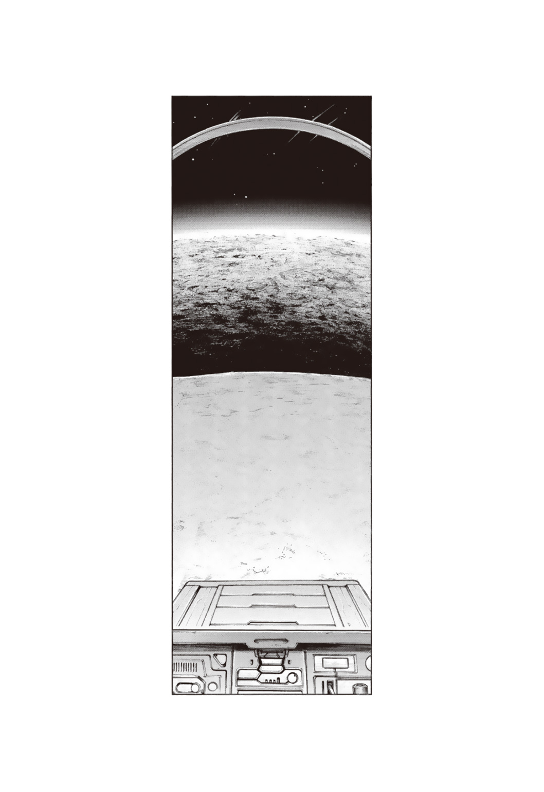
振り返ると白いガラスのような地平とすぐ先に暗黒がある。
――ダイモス。かつて火星という惑星の引力にフォボスともども捕まったと考えられていた衛星。が、後に大規模な天体衝突によって発生した火星の欠片と言われるようになった。地球にとっての月のような成り立ちの衛星――。
『火星の大きさは月の倍はあるからな。それを考えりゃ、どんだけでかく見えても不思議はねえ。まあ、いまのこいつは司祭のデータの受け売りだがな......』
......届きそう。
「かあちゃん」
ギィは触れようと手を伸ばしている自分に気づいた。
『早くしな！』
車輌の陰からビンタが姿を現した。
『グチマールが、また何するかわかんないよ！』
ふたりは小走りになった。重力が弱いために驚くほど体が軽く、ギィは何度も前のめりになって転びかけた。が、それはただ単に足が地表を充分に蹴り込めず空回りしたからであった。
『ちくしょう、なんだか綿の上を歩いてるみたいだぜ』カンオケがボヤいた。
車輌の向こうには大きなすり鉢状の凹みが広がっていた。
『これが三番目か......』
既にグチマールチームの男たちが底に降りていた。
ギィが立っている場所から底までは十メートルほど深い。
上がってきたひとりがビンタに釘の突き出たハンディー・ターミナルを手渡した。
『グチマールに到着したと伝えな』
『はい』
男は再びすり鉢の底へと下って行った。
『ふん。思った通りだ。若いね』モニターを一瞥したビンタが呟いた。
『若い？』
『ダイモスの存在が予言されていたのは千年前。予言を支持したのが当時の有名作家であるボルテールとスウィフトさ。ここにあるふたつのクレーターの由来だよ。一九〇〇年代にはクレーターがふたつだってことは確認されてたんだ。ところがこのみっつ目の穴ボコの底の堆積層は薄いし、焼結体化の痕跡も三百年ぐらいしか経っていない。きっと隕石が衝突したんだね』
『恐ろしい大きさだな』
カンオケは直径百メートルはあろうかという穴を眺めた。
『こんなチャチな星が、よく木っ端微塵にならなかったもんだ』
『だから丁度、良い感じに衝突したのさ、ラッキーだったのさ』
ビンタが顔を上げた。
『そうかな？ 宇宙を飛来する硬い隕石がこんな星を撃ち抜けないわけはないぜ。木に銃弾を喰らわせるようなものだからな。もし、そうだとしたら飛来する隕石のスピードに都合良くブレーキをかけたものがあるはずだ』
『はははは。この広い宇宙にそんなものがあるわけないだろ。ほんとに、あんたは......』
と、ビンタは笑うのを止め、頭上の火星を見つめていた。
『だろ？ あるじゃないかよ。すぐ目と鼻の先に。隕石が、あいつにぶつかって減速すりゃ、この程度で収まっても不思議じゃねえぜ。ブーンッ！』
カンオケが拳を片手に叩きつけた。
するとすり鉢の底で男たちがしきりに手招きをした。
『用意ができたみたいだね。ギィ、いいかい？』
『うん』
『いいかい。このミッションを巧くやり遂げられたら、あーしがなんとかサイオンにあんたのことを頼んであげられるから、しっかりやるんだよ。いいね』
ビンタは真っ正面からギィの瞳を見つめてきた。
『わかった』ギィは頷いた。
三人は滑らかなクレーターの斜面を転ばぬように下りた。
すり鉢の底は平らだった。三脚のようなものを立てた男たちがいた。
『調子はどうだ？』
『コックが、なれなれしく声をかけるんじゃねえ』
振り向いたのはグチマールだった。
彼はカンオケの体を小突き、先にある亀裂を指差した。
『あの割れ目を探る。ガキはそこで使う』
『ちょっと待ちな。指示はあーしが出す。この子はあーしの預りなんだ』
ビンタがふたりの間に割って入った。残った男たちが作業を中止して様子を窺う。ヘルメットの素通しから凶暴な顔が覗いていた。
『ふん。売女が』
するとビンタの剝き出しの義手が変化し、鞭のようにだらりと延びた。
『やるかい？』
『時間の無駄だ。さっさと済ませろ』
ギィはカンオケに囁いた。
『ねえ。どうして、あの人とビンタは仲が悪いの』
『ビンタを襲おうとしてデチ棒を切り落とされたのさ。以来、奴は世にも珍しいシリコン製のフニャチンを着けてるんだ』
『でちぼう？ ふにゃちん』
『聞こえてるぞ。コック』
グチマールが唸るように言った。
『あ、こりゃいけねえ。すまんすまん』
『おいで』
ビンタの指示で三人は亀裂に向かった。
『どうした？』
ギィが足を止めたのでカンオケが尋ねた。
『なんか......変』
『変？』
『うん。あの割れ目。人の顔みたい......』
ギィが指差す斜面の亀裂は、確かに横倒しになった巨人の顔の一部のようにも見え、亀裂は丁度、口にあたる。
亀裂は底から縁にかけての斜面の三分の一ほどの長さがあった。ふたりの男が切れ目を覗き込んでいた。彼らはビンタのチームだと言い、カンオケとギィに挨拶をした。
『どうなってるの？』
『光学ソナーで確認しました。なかは空洞です。どこまで行けるか試しましたが先細りになっていて我々では三メートルほどしか進めません』
『この子にロープと機材を渡して』
ビンタの言葉にギィの宇宙服にロープが繫がれ、動画カメラが渡された。男の手がヘルメットの上部に触れるとライトが点いた。
『なかに入ったら、これで周囲を撮ってきてくれ』
男は白く光る携帯モニターを眺めた。
ハンディカメラを手にしたギィは亀裂の前に立つ。
『焦らずにゆっくりで良いから』
『うん』
ビンタにそう返事をしたギィは亀裂に入っていった。男の言葉どおり、少し進むと幅が急激に狭まった。ギィは気をつけの姿勢のまま、ずるずるとカニ歩きになって進んだ。すると不意に壁が消え、体が自由になった――空洞に辿り着いていた。
『どう？』ビンタの声がした。
『なんか広場みたいなところに出た』
『辺りを撮って』
なかはごろごろと灰色の石が転がる、小さな映画館ほどの狭い空間だった。ありえないことだが、ギィは空気がひんやりとしていると思った。
『進め』カンオケの声に更に足を踏み出した途端、ぐらりと足元が揺れ、大きく姿勢を崩した。押された？ と思ったが違う。足元の地面がすっぽ抜け、墜落したのだ。
『うわぁ！』
ギィは悲鳴を上げた。ヘルメットに岩の破片がガツガツと当たり、落下していく。
が、地球で感じるような急降下ではなかった。落ちてはいるのだが思考停止の間に地面に叩きつけられるというようなものではなかった。
ギィは生まれて初めて〈引力の差〉を実感していた。
『うわぁ！』
急にがくんと釣り上げられるような衝撃が走り、ギィは宙ぶらりんになった。
『大丈夫か！』カンオケの焦った声が続いていた。
『う......うん』
落下よりもロープの衝撃のほうがギィには堪えた。
『辺りを撮んな』ビンタの声がした。
ギィはストラップの先で揺れているカメラを引き寄せた。ギィは宙に浮いていた。地面は更に二十メートルほど下方にあった。ロープがなければ、あそこまでゆっくりと落下していたのだろう。が、更にそこからまた地面を突き破って落ち、更にその先も......と考えると、誰かが助けてくれるまで空気が保つのかなという疑問とともに、今更のように恐怖が重くのしかかってきた。
ギィは深呼吸をしながら体を何とか固定しようとした。落下のエネルギーでロープの固定金具を中心にした回転が止まらなかった。目の前には壁がある。なんとか、そこに摑まれば回転は止まると思った。カメラを持っていないほうの左手を伸ばした。壁の表面は砂のようにざらついた部分と妙に滑って光沢のある黒い部分に分かれていた。
ギィは回転に合わせながら体を前後に揺らせることに気づいた。そして、それを利用し遂に壁を摑んだ。
〈ゔごぶあぁぁぁぁぁぁ〉
壁に触れた途端、何かが体のなかを通り抜けた。閃光か音かあまりに短い時間だったので考えることもできない。が、何かが自分のなかを駆け巡ったとギィは確信した。
ギィは壁を――あの滑った光沢の部分を摑んでいた。回転は止まっていた。
そして初めて壁をヘルメットの照明で照らしたとき、思わず声が漏れた。
壁に大きな絵があった。
無論、それが絵であるはずはなかった。が、自分の目にはそれが大きく口を開け、苦悶している人の巨大な上半身であるようにしか見えなかった。
『いまのとこ！』
突然、ビンタに怒鳴られた。
驚いてカメラを構え直す。
『そこ！ 停めな！』
『......なんだこりゃ......』
カンオケの声がした。
ギィもポカンと口を開けていた。
『誰が描いたんだ......』
『馬鹿だね。三百年前のクレーターの底にあった割れ目だよ。単なる類像現象さ。自然にできた凹凸が人にはそういう風に見えるんだ』
『ギィ、ロープを延ばす。下まで降りられそうか』
『うん』
今度は更にゆっくり降下し、ギィは地の底に着いた。堆積物が多く、柔らかかった。
上を見上げると突然、強烈な光が洞窟内を照らし出した。スリットから照明を当てたのだとわかった。光は全てにキラキラと反射し、ギィの周囲も、ボゥッと明るくなった。
ギィは壁に近づいた。
滑った黒い部分にまた触れていた。壁自体からグローブ越しに微かな震動のようなものが感じられた。
その瞬間、ギィは壁に丸い穴ができるのを見た。同時に食器がぶつかる音、人の喚き声、施設での喧噪が穴から聞こえてきた。穴の奥で何かが動いていた。ギィにはそれが何なのかわかった。柔らかなゼリーのアレだ。全身が寒天でできたブヨブヨのアレ。それが穴から這い出そうとしているんだ。
『ギィ！ ギィ！ 大丈夫か！』
カンオケの声でギィは自分が悲鳴を上げていたことに気づいた。
『底の様子はどうだ』
『な......なんかあるよ』
我に返ったギィは取り繕うように言った。実際、手前の岩の一部が光っていた。指先で触れると埃のような部分が落ち、白い結晶が覗いた。ギィはそれを撮った。
『ギィ、壁際に寄っておけ。入口を破壊するらしい』
『うん』
ビンタの声がし、ギィは壁にくっついた。
カウントダウンの後、ボウンッという震動とともに頭上から岩が落ちてきた。そしてビンタとカンオケ、ビンタの仲間ひとりがロープを伝って降りてきた。
輝く岩に計器を差し込んだビンタが嬉しそうに悲鳴を上げた。
『やった！ 思ったとおりさ』
『なんだ』カンオケが応える。
『こういう宇宙の流れ者みたいな隕石は、いろいろ面白いお土産を持ってくるもんなんだよ。あはははは』
ギィとカンオケは壁面にある〈絵〉に見とれていた。崩落部の内部全面を覆うように描かれたそれは高さ二十メートルほどもあった。勿論、それが〈何か〉だと説明できるほどハッキリしたものはひとつもなかった。だが、最初に見た時にはひとつだと思っていた絵は壁のあちこちにあった。
『隊長！ 炭素質コンドライトが確認できました』
部下の声にビンタが振り向いた。
『ほんとか！』
『はい！ しかも驚くべき純度です！ プラズマ推進器のコイル転用可能な四五％台を軽々と超えています。いま数値八〇％！』
ビンタの薄ら笑いが聞こえてきた。
『どういうことだ』
『この穴ボコ全体がお宝の山だってことさ。よし！ 全部さらうよ！』ビンタはギィの肩を抱いた。『ギィ、お手柄だよ。これなら充分にサイオンにあんたが必要だってことを主張できる』
『ありがと』
『なんだ、もっと嬉しそうな顔をしろ。あ、そっか、おまえは火星に行きたいんだもんな』
カンオケとビンタが目を合わせた。
『ぐぇ！』
その時、穴の底にへばりついていたビンタの部下が踊るように回転し、倒れた。
胸に穴が開き、ヘルメットのなかが真っ赤になっていた。その体を続いて青い閃光が二度三度と貫く。
『危ねえ！』
カンオケがギィを押した。
そこへもうひとり人間が落ちてきた。ヘルメットがなく、舌を吐き出し、目玉が眼窩から外れて吹きこぼれていた。
低い笑い声が聞こえてきた。
『ビンタ、お疲れ』
見上げると穴の縁にグチマールが仲間とともに屈んでいた。
ビンタが舌打ちした。
『ここまで汚いとはね』
グチマールの手が動き、死体がレーザーで再び撃ち抜かれた。
『ドブネズミ野郎！』カンオケが怒鳴った。
足元にレーザーが撃ち込まれる。
『コックがデケぇ口、叩くんじゃねえ。スウィフトもボルテールも空っ穴のゴミだった。俺にはサイオンへの土産が必要なんだよ』
そう言うとグチマールは手下とともに降下してきた。
『あんたはここんところザルだったからねえ。独り占めでもしなきゃもたないんだろうね』
『へへ。そういうことさ』
『でも、あんたがザルなのは、ついてないからじゃないよ』
『ほう。じゃあ、なんだというんだ』
『あんたが人の獲物を横取りするしかない屑だからだよ』
『なんだ。死体がふたつじゃ足りねえってのか』
グチマールがレーザー銃を向けた。照準を表す光がギィのヘルメットに当たった。
『わかったよ。勝手にしな』
ビンタが諦めたように言った。
『ここまで下衆だとはね』
グチマールを睨み付けていたビンタは、ふっと溜息をつくと掘削用ドリルを捨てた。
『よう』カンオケが口を開いた。
『なんだ』
『おめえが盗人で屑で負け犬なのはわかったが、この娘は行き先が決まってるんだ。下手なことをすると自分の分が悪くなるだけだぜ』
『ふん。そんなこたぁ、俺もあの場にいたんだ、知ってるよ』
グチマールがカンオケの腹の辺りを蹴り上げた。
カンオケが呻いて膝を着く。
『おめえとガキは俺たちが根こそぎさらうまで上で立ちんぼだ。ビンタ、おまえは残れ。手伝うんだ』
『糞食らいなよ、グチマール』
ビンタが中指を立てた。
ギィたちは車に乗り込むことも許されず無限軌道に寄りかかり、ビンタの帰りを待っていた。ふたりの前にはグチマールの手下がレーザー銃を構えている。カンオケが何度も抵抗なんかしないから銃を下ろせというのだが彼は無視していた。
『信用できねえ』
『そんなものを向けられていると気分が悪いんだよ』
『黙れ、コック』
『どうしようもねえ低脳だな』
目の前には火星がある。自分はそこに母がいるのを知っている。が、母は自分が見上げれば見える場所にいることを知るよしもないのだ。
『かあちゃん』
呟きがインカムで伝わったのだろう、カンオケがメットを覗き込んできた。
『おまえ、おふくろさんとはいつ離ればなれになったんだ』
『知んない。ボクは施設で育ったんだ』
見ると無限軌道の鉄板のひとつひとつに鉤爪が付いていた。それが引力の小さな星の地面を突き刺し、前進できるのだと思った。
『そっか。じゃあ、おふくろさんの顔は知らねえんだな』
『うん』
『知らねえ親でも逢いたいものか』
『当たり前だよ』
『どうして？ 逢ったことも触ったこともねえんだろ？ 他人のほうが近いじゃねえか』
『そういうんじゃないんだよ、親ってのは』
『どういうもんなんだ』
『うーん。あれ』
ギィは火星を指差した。
『どういうことだ』
『あるから気になる。気になるから知りたい。知りたいから逢いたい』
『変な理屈だな』
そう言ったカンオケの声がやけに嬉しそうに聞こえた。
すると突然、がさついた馬鹿笑いが聞こえた。
手下がギィを指差し、嗤っていた。
『なんだよ』
『こいつ。人間なのか？』
『当たり前だろ』
『じゃあ、なんでエテ公の宇宙服を着てるんだ？』手下はギィの背中の文字を指差した。『шимпанзе。ロシア語でチンパンジーって意味だぜ。あっははは。エテ女だ！ あっはは』
『嫌な奴』
ギィはプイッと横を向くと離れてしゃがみ込んだ。
『よお。おめえ、ほんとは何考えてやがんだよ』
手下の声が続いた。
『黙れ。ムカムカするぜ』
『ふん。どうせ、おまえはこのガキで遊ぼうッてんだろ。おまえみたいなタマなしの腰抜け野郎にはよくある趣味だぜ』
『黙ってろよ』
『だが、こいつはあれだろ。あのやたら強ぇヨロイ野郎が唾つけてんだろ。あいつ、このガキを適当にイジッたら、首だけ生かして体は喰うって言ってたぜ。おまえ、その時は腕を振るって、旨い飯を作ってやれよな。このガキなら良い出汁がでるぜ！ ひゃっはは』
『うるさい！ おまえなんかと話したくない。ギィ、気にするな。こいつの言ってるのはデタラメだ』
......そうだ。ボクは戻ったら殺されちゃうんだ。
振り返るとビンタがひとりで戻ってくるところだった。
レーザー銃を構えた手下がこちらに背を向けていた。
腰に地球の警官が下げているような銃がある。あれなら自分でも使えるとギィは思った。その途端、体がもう動いていた。
手下の体に取り付くとホルスターから銃を奪っていた。
両手でしっかり持っていても銃口が下がるほど大きな拳銃だった。
『おい！』カンオケが叫んだ。『よせ！ 馬鹿！』
『ごめん！ ボク、死にたくないんだ。火星に行かなくちゃいけないんだ！』
その瞬間、レーザー銃を持った手下が飛びかかってきた。
ギィは目を閉じて銃爪を引いた。手首ごと全力で蹴り上げられたような衝撃が走った。弾は外れたがギィは自分が物凄い勢いで浮き上がるのを感じた。ジャンプをしたわけでもないのに体がいつもの何倍もの高さに一瞬で持ち上がった。火星が目の前に迫ったが、その横に覗く、茫漠たる闇にギィは総毛立った。
『あ、オレの指!!』
カンオケが飛び、ギリギリでギィのブーツを摑んだが勢いは止まらない。ふたりともダイモスの引力圏外に弾き出された――。
ガクンと勢いが止まった。
メットのなかで目を閉じていたカンオケがゆっくりと下を向くのが見えた。ふたりともほぼ一直線で宙に浮いていた。
カンオケの爪先にビンタの義手が絡み付いていた。キャタピラーに取り付いたビンタが両腕を大きく開いていた。
『ギィを抱いて。自重を足しな！』
カンオケがギィを手繰り寄せた。徐々に下降が始まった。
やがてふたりはダイモスに着地した。
『ふう。人間衛星になるところだったぜ』
カンオケが溜息を吐いた。
バンッと激しい衝撃を受けギィは倒れた。
殴りつけたビンタの目が怒りに燃えていた。
『ここの引力は地球の千分の一！ オートマグなんかブッ放したら宇宙の果てまで吹っ飛んでっちまう！』
ギィは黙っていた。
『なんか言うことあるかい』
『火星に行きたいんだ。ボクは、かあちゃんに逢いたいんだ！ ボクみたいな人殺しは殺されても仕方ないけど、でも......ビンタさん！ かあちゃんに逢ってからじゃダメかなあ。ちょっとで良いからかあちゃんに逢って、それから殺してくれって頼んでよ！ ねえ！ ダメかなあ！ できないかなあ！』
ギィはいつのまにか涙声になった。
ビンタとカンオケは黙って立ち竦んでいた。
「どうだった？」
戻ってきたビンタは無言で棚の林檎をひっ摑むと、乱暴に囓った。
「ダメか」
あの後、グチマール組は鉱物を独り占めするために残り、ギィはカンオケとともに烹炊室に戻っていた。
ビンタはギィのパイセンへの引き渡しを考え直すよう、サイオンのところへ直訴に行ったのだった。
「あの鎧野郎、頭おかしい。まるで自分が仲間を殺したのは、ギィのせいだぐらいの勢いなんだ。だからギィが手に入らないと自分の行為が無駄になるとかって言ってる。ギィは自分の獲物なんだってさ。誰にも渡さないの一点ばりで意地になってるよ。サイオンも奴が仕事をこなしている限り、説得する気がないし」
「あいつ、なんの仕事をしてるんだ」
「傷病者の処刑。嬉々として殺し回ってるらしいよ」
カンオケが溜息とともに首を振った。
「まあ、狂ってる奴ってのはそんなもんだ」
「それと駐機場での一件がサイオンの気分を酷く害したみたい」
「ああ、あれか。ポッドで飛び出そうとしたんで機関部の奴が底に牽引用アンカーボルトを繫げて未遂に終わったんだが......」
それを聞いてギィは、なぜポッドが途中で扇風機のように同じところで回転しだしたのかわかった。
「でも、ギィは危険分子だと烙印を押されてしまった。元々、子供に関するデータなんて持ってやしないんだから、当てずっぽうに近いけど。サイオンは司祭の言いなりだから」
「他に理由はねえのかよ。ここの煮炊きで必要だとかさ」
「そんなもの。この子じゃなきゃダメってことないからダメよ」
「参ったな」
ふたりは腕組みをして唸った。
すると、ギィがぽつりと呟いた。
「じゃあ、しょうがないのかな。ここまで来られたんだから満足しなくちゃいけないのかも」
「だってよ、おまえ」
「いいんだ。ボクは呪われてるんだ」
「呪われてる？」
ギィは自分を見つめるふたりに向かい掌を見せた。
「ボクはこの手で何人もの子供を殺してきた」
カンオケとビンタが顔を見合わせた。
「なんだって？」
「言ったとおりさ。ボクはこの手で生まれたばかりの子供を殺してきたんだ」
ギィは唇を嚙んだ。消そうとしても決して消えない感覚が指に残っていた。彼女は施設長によって無理矢理、売春婦や、その他、公にはしたくない婦女子の堕胎の手伝いを強要されていた。その報酬は施設長の陰の財として蓄えられてもいたし、その情報自体が施設長の地位を町の有力者から永遠に保証させる武器にもなっていた。
「若い人だと充分に子宮が開かないことがある。そんなとき、ボクが呼ばれるんだ」
ギィは分娩台に横たわる女たちの死人のような青白い顔を忘れたことがなかった。そしてそれより最悪なのは生温かい泥のような肉の底から胎児を――人の魂を摑み出したこと。掌に満たないほど、小さいけれど燃えるような彼らの命の熱さをギィは忘れていない。まるで小さな石炭を摑んでいるように〈子供たち〉は皆、命の火を燃やしていた。
冷たいシャーレに置かれたとき、彼らが吐く溜息の音を聞いたこともあった。
施設長はギィを堕胎の器具として重用した。抵抗すれば同じ部屋の子供たち全員がいつまでも食事を貰えなかった。餓死寸前まで頑張ったところでギィは抵抗を止めた。
〈仕事〉で良心の呵責に耐えられなくなったギィが唯一、相談できたのが〈先生〉だった。
死にたいと告げたギィに先生はひと言〈生きなさい〉と言った。
あのときの自分を見る先生の目は悲しみでも怒りでも哀れみでもなかった。何かを静かに見つめているようなそんな目をしていた。何を訴えていたのかギィには未だにわからない。
「だから......ボクはこんな終わり方なんだ。仕方ないよ」
カンオケが何か言おうとしたが、ギィが制した。
「本当だよ、カンオケ。ボクはかあちゃんに逢いたいなんて考えちゃいけなかったんだ」
ギィは口から指を取り出し、カンオケに渡した。
「いままで、ありがとう」
ビンタがそれを見つめていた。
「奴のところへ行けば殺されるのよ。それもハンパないやり方でね。生きたまま刻まれたり、えぐられたり」
ギィは黙っていた。
「おまえ、いくつだ？」
「九」
カンオケが鼻で笑った。
「はん。九歳のガキが無理矢理やらされたことをそんなに背負い込まなくちゃなんねえのかねえ。四十、五十でも自分の尻を拭きもせず、大手を振って生きてる奴が星の数ほどいるご時世なんだぜ」
「何言ってんの」ビンタが言った。
「ガキが生意気ぬかすなってんだよ！ 責任を取る？ 取れるわけねえじゃん。おまえは人殺し。それは変わらねえよ。でもそいつは一生背負って苦しみながら馬鹿正直に婆になるまで人のために真っ当に生きることでしか償われねえんだよ。死んで楽になろうなんて虫が良すぎるぜ。おまえ殉教者にでもなったつもりか？ ははあっん！ まったく反吐が出るぜ」
ギィが驚いているとビンタが言った。
「こいつはいつもはとんでもない馬鹿だけど、いまはまともなようだし、あーしもあんたが鎧野郎にむざむざ殺されるのを指咥えて見ていたくはないね」
「どうして？ カンオケだって最初はボクを殺そうとしてたじゃん」
「あのときはあのときだ。気分の問題だ」
「ああ、そうさ。気分の問題だよ。あーしもそうだ。あんたがどうなろうと正直、知ったこっちゃないけど。いま何もしないのは気分が悪いのさ」
ギィは首を振った。
「全然、わかんない」
「わからなくていい。いまはそうしとけ」
「じゃあ、やるんだね。カンオケ」
「まあな。まずは俺がもう一度、サイオンにかけ合ってみる。鎧野郎のところはそれからだ。それと何か、チビでないとできない役に立ちそうなことを考えろ」
「あーしの手伝いは却下されちゃったし。難しいよ」
「なんでもいいから考えろ。時間を稼ぐんだ」
「わかった」
ギィが言った「ジュガンのところに行きたい」
「なぜ」
「オーロックのことを謝っておきたい」
ビンタがカンオケを見、カンオケが頷いた。
研究室に入るとジュガンは〈繭〉に取り付いていた。
「どうだ？」
「さっぱりだ。艦内中の人間のＤＮＡを調べ直したがどれも効果がない」そう言いながらジュガンがギィに厳しい目を向けた。「ふん。嫌な奴が来たな」
「そう言うな、謝りたいそうだ」
「必要ない。命を粗末にする奴は嫌いだ。そういう人間は俺とは人種が違う。出て行きな」
「これから鎧野郎のところへ連れて行くの」
ビンタの声にジュガンが顔を向けた。
「もう四十八時間か」
「経つのよ。そろそろ......」
「オーロックのこと。ほんとにごめんなさい」
「ギィが直接、殺したんじゃない。グチマールのスピアで刺されたときの巻き添えになったんだ」
ジュガンがギィの手を取り、見つめた。そこにはオーロックの影が焼きついていた。
「そうだったのか。最後まで守ろうとしてくれたんだな」
ジュガンはギィの頭に手を置いた。
「もういい。気にするな」
それから部屋の隅に行き、戻ってくるとギィの手に渡した――二十日鼠だった。
「あ」
「オーロック十三世だ。今度は大切にしてやってくれ」
「いいの」
「ああ」
「嬉しいな」ギィはビンタとカンオケに手のなかを見せた。
ふたりとも、よかったなと頷いた。
「いつ、連れて行くんだ」
「もうそろそろ呼び出しがかかる。何か手立てはないか？」
「うーむ」ジュガンは考え込んだ。
「いいんだ。ボク、オーロックを貰えただけで大丈夫だからさ」
ギィは明るく振る舞おうとしたが大人たちの顔は晴れない。
「残念だが......」
「まあ、俺がかけ合ってみるさ。ダメなら......」
カンオケの目つきが鋭くなった。
「じゃあ、行くよ」
ビンタの声に振り向いたとき、ギィのポケットからオーロックが飛び出した。
「あ」
ギィが慌てて追いかける。オーロックは〈繭〉に乗ると鼻先を小さな手でしきりに撫で回した。
「おいで......おいで」
二十日鼠を捕まえようとギィが繭に手をかけ、ゆっくりと近づいた途端。
〈ブシュー！〉
盛大な音がし、繭に眩いモスグリーンの光の筋が浮かんだ。それは繭の端から端を駆け巡り、消えた。すると蓋が持ち上がり始めた。
「うわ」
「おおっ！」
「みんな、壁際に下がれ！」
ジュガンが叫んだ。
オーロックを捕まえたギィがカンオケの元に駆け寄った。
次いで四人が見つめる前で〈繭〉の蓋がゆっくりと貝のように開いた。薄く蒸気のようなものが溢れてくる。
繭のなかには何かがいた。が、それは蓋が完全に持ち上がっても微動だにしなかった。
ジュガンとカンオケが恐る恐るなかを覗き込み、ホッと安堵の溜息を吐いた。
「驚かしやがるぜ......死体だ。安心しろ喰いつきゃしねえよ」
「すごい......」ジュガンが繭のなかのモノに釘付けになっていた。
「なにこれ？ 気持ち悪い」
ビンタに続いてギィもなかを覗き込んだ。
白い靄が薄れたなかに〈人〉がいた。
それは腹部から下を完全に失っていた。目は閉じられ眠っているようにも見えた。
「死んでるのか」
早速、ジュガンが計器で調べる。
「生体反応はゼロだ」
「人間か？」
「いや......人間にこんな触角はない」
ジュガンが横たわる者の頭部を指差した。
「宇宙人......」
ギィが呟いた。
カンオケとジュガンが顔を見合わせる。
「おいおい。こいつは大変なことになるぜ。もし、こいつが本物の宇宙人でどこからかやってきたのなら、全く未知の宇宙図が、こいつの脳味噌から取り出せるかもしれん」
「馬鹿。そんなことより、こいつを持ち帰っただけで俺たち億万長者じゃないか」
ジュガンの言葉に興奮したカンオケが叫んだ。
「本当に死んでるの？」
ビンタが死体に触れた。浅黒い肌は硬く、全体が筋肉質だった。
「下半身がないんだぜ。こんな状態で生きてる生物はいねえよ。な、ジュガン」
「まあ、理屈はそうだ。理屈はな」
「他の技術部の奴らを呼ばないの」
「そんなことは後回しだ、ビンタ」ジュガンがキッパリと言い放った。「宇宙人と遭うのは俺の子供の頃からの夢だったんだ。いまは少し楽しませてくれ」
ジュガンはまた隣の部屋に行くと、コードを繫いだ大きな無線機のようなものを台に載せ、宇宙人を検査台に移した。
「カンオケ、こいつを刺してくれ」
「なんだよ。気味が悪いな」
文句を言いながらカンオケが死体にコードの先の針を刺した。ジュガンが機械のスイッチを入れる。
「カンオケ、針をもう少し深く刺してくれ。少し手前に傾けて。ああ、それでいい」無線機に現れたモニター画面を見ながらジュガンが指示を出す。「そこで針を持っててくれ。動かすなよ」
「何してんの」
「あの頭蓋骨なら我々と脳の活動部位が近いんじゃないかと期待してるのさ」
ギィにそう答えるとジュガンがスイッチを入れた。ドスッと音がし、針から飛び出した更に無数の細い針が死体の頭蓋に侵入し、脳に到達した。
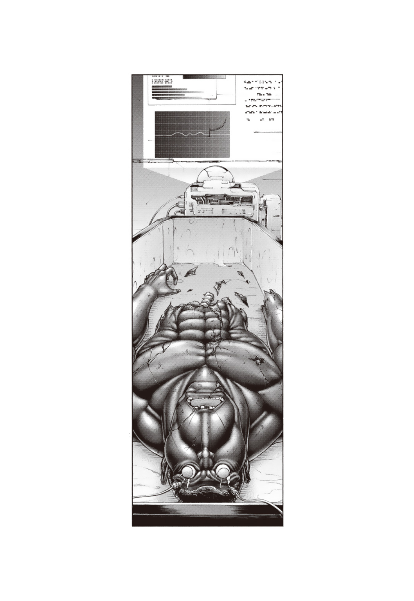
「おい！ 言えよ、びっくりするだろ」
「すまんすまん」ジュガンはそれどころじゃないといった感じで返事をした。ギィの目から見てもジュガンは〈宇宙人〉に異常に興奮し、他のことは上の空だった。
モニターに波形が現れた。
「しめた。脳は使えるぞ。う？」
「どうした？」
波形が一定のパターンで右から左へと移動していく。
「自ら何かを発信してる......」
「発信？ どういうことだ」
「そいつをいまから調べる」
「ねえ、早く脳味噌から地図をぶっこ抜かなくて良いの」
「ああ、そうだな」
ジュガンが無線機のダイヤルを調整しながら、端末のキーボードから打ち込みを続けた。
「ああ。ダメだ」
「どうした」
「地図はない」
「ない？ どうして？」
「こいつは完全な地物なのさ。宇宙に出たのはこの繭で放り出されたのが初めてってことで宇宙航行なんかしたことがないんだな。なんらかの拍子に惑星外に放出されたところを他の船の網に引っかかったんだろう。司祭の計算ではこの近辺だ」
「それじゃ、やっぱり見世物で、ひと儲けだな。丁度、良いじゃないか、コブを落としたラクダみたいな間抜け面だし。バッジとかアニメにもなるぜ」
「カンオケ、あーしたちは海賊なんだよ。そんなことの前に捕まっちまうよ」
その時、ギィの耳に何かが届いた。貝殻を擦り合わせたような気持ちの悪い音だった。
〈じょ......じょ......じょうじ......じょう......じょ......じ......じょう......じょ......〉
「なんだこれ」
「コイツの声だ。いま、この機械で脳の動きを復元しているんだ」
「気持ちの悪い声だな。便秘のコオロギみたいだ」
「こいつの脳が作っているのさ。ちょっと待て、もう少し採取して確かめたいことがある」
そう言うとジュガンは更に研究室の大型コンピューターと無線機を繫げた。
するとビンタが立ち上がり、繭とギィを交互に指差した。
「ねえ。これ使えるんじゃない？」
「なんだ？」
「だってこの繭の棺桶を開けたのはギィが触ったからでしょ。だったら、こいつを徹底的に調査するにはギィの力がいるってサイオンを説得するのよ。それなら、あーしが技術部代表としてかけ合えるし」
「うん。それは可能性がないわけじゃないな」ジュガンが言った。「それでいこう。繭は開いた。開いたのはギィによる未知の理由によるものだ。原因がハッキリするまでは技術部で借り受けたい、どうだ？」
強く頷いたカンオケとビンタが部屋を出て行った。
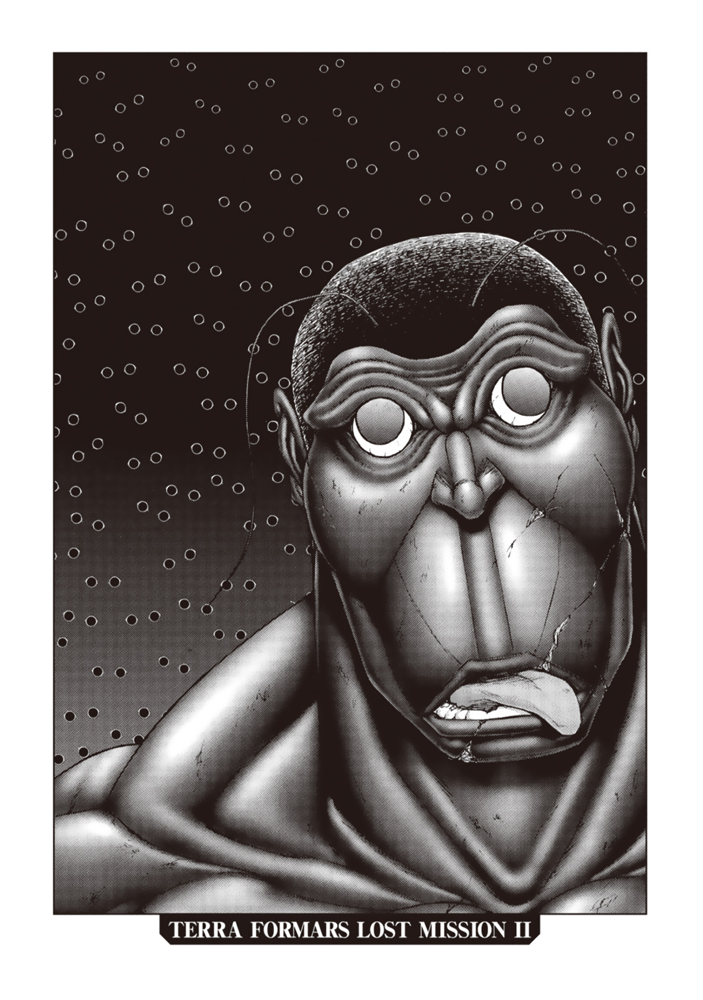
ふたりが出て行って小一時間が経った頃、しきりにコンピューターに向かっていたジュガンが「驚いたな」と呟いた。
「どうしたの？」
オーロックを掌で遊ばせていたギィが訊いた。
「これを見てみろ」
ジュガンがコンピューターのモニターを指差した。真ん中に赤い横線が走っている。
「こいつは音声分析チャートだ。宇宙人の脳波から再現したものだ」
「真っ平だね」
「そう。それは横軸の単位時間が長いからだ。これをもっと細かく割って、それに予測される信号も加えて再現すると」
横軸が長く延びた。すると赤い線に変化が生まれた。左から右へとなだらかに下がっている。
「更に延ばすと」
今度ははっきりと赤い線が左から右へと下降するカーブを描いた。
「どういうこと」
「喋ってるのさ」
「喋ってる！」
「勿論、俺たちが通常使ってるものではない。だが、じょ・う・じ、をみっつの音として区切り、更にそれぞれのスピード、音域に固有の数値を関連づけ、頻度を分析すると、これらが意味を持って使用されていることがわかる」
「全然、わかんない」
「これが全く無意味な場合、線は水平のままだ。これほどまでにカーブを描くことはないんだ。俺たちの言葉も、よく使う単語とそうでないのがあるだろ。〈は〉とか〈や〉は〈ぶ〉や〈ど〉とかの濁音に比べてよく使う。この宇宙人も俺たちに聞こえているのは〈じょ・う・じ〉のみっつしかないが、実はイントネーションと間の取り方で意味を作っている可能性があるってことさ。中国語にある四声なんてのにも、こういう仕組みは残ってる」
〈じょ......じょうじ......じょうじ......じょ......じょう......じょ......〉
モニターから声が続いていた。
「じゃあ、なんて言ってるの」
ギィの言葉にジュガンは肩をすくめた。
「さあ、それはもうちょっと分析を続けなけりゃな。意味がわかれば大発見さ」
「ふうん」
ギィは繭を覗き込み、触角のある宇宙人をしげしげと眺めた。
「やったぞ！」そこへカンオケとビンタが飛び込んできた。「サイオンに認めさせたぞ」
「ギィ、その宇宙人の分析が済むまで、あんたは技術部の預りよ」
「なんだ。それじゃ、終わったらどうなるんだ」ジュガンが不安げな声を出した。
「その時はその時でまた考えるさ」
「そうよ。あんた、腰を据えてゆっくりじっくり分析するんだよ。何年かかったっていいんだからさ」
「そんな訳にいくかよ」ジュガンが苦笑した。
「でも、取り敢えず良かったなあ」
「うん」ギィは頷いた。
その時、シュッと音がしドアをくぐった者がある。
部屋中の空気が凍り、ビンタの義手がぱらりと銀の鞭に変化した。
全員が睨み合ったまま黙っていた。
「おまえ、おまえ、おまえ、来い」
鎧武者姿の男がカンオケとビンタと最後にギィを指差した――パイセンだった。
ギィがビンタにしがみついた。
「この子は技術部の預かりになったんだ。渡さないよ」
「黙れ。俺は索敵破壊と救出部隊を兼任することになった。おまえたちは現時点より俺の指揮下に入る。サイオンの命令だ。従え」
「ジュガン、確認して」
ビンタの言葉にジュガンがインカムに話しかけた。
顔色が変わった。
「どうしたの」
「グチマール隊が連絡を絶った。救援は本当だ」
第三のクレーターの縁にはグチマールの車が停まっていた。既に後部には採掘した鉱物が山と積まれていた。すり鉢の底に下り、ビンタが爆破させた横穴の亀裂へと進む。ギィたちを含め、救出隊は全部で七人だった。緊張しているのか無駄口を叩く者はない。
『俺から離れるな』
前を行くパイセンの背中を見たカンオケの声が、メットのスピーカーから聞こえてきた。
『この底だな』
大きく拡がった隙間から入ると不意に、ギィが最初に落下した大穴が見えた。
パイセンの手下が叫んだ。
『昇降用籠は使えるぜ』
『よし！ おまえたち三人だけで降りろ』
パイセンが振り返った。声がニヤついていた。
『何が起きているか、わからんからな。まず、おまえたちが露払いだ。下の安全を確認次第、報告するのだ。ふふふ』
ビンタが乗り込み、続いてカンオケが乗った。ギィが乗ろうとすると手が摑まれた。
『おまえは俺とここで待機していても良いのだぞ』
ギィはパイセンの手を払い、カンオケの横に乗り込んだ。
『小面憎い奴め。下げろ！』
パイセンが腕を振るとバケットが降り始めた。それは大人が優に五人は乗れる広さのもので、これを使ってグチマールは鉱石を運び出していたのだとギィは思った。ゆらゆらと揺れながら降下するバケットの縁を摑みながらギィは下を覗き込んだ。
採掘場所の周辺に置かれた照明が宇宙服姿の人間が倒れているのをボゥッと浮かび上がらせていた。バケットは彼らから十メートルほどの位置に着地した。
『離れないで。一緒に動くのよ』
レーザー銃を構えたビンタが小声で言った。
ギィはカンオケの横にくっついた。
ヘルメットのなかのカンオケは厳しい表情のままである。
『うっ......酷いな』
一番手前にいた一人目を覗き込んだカンオケとビンタが同時に呟いた。
ギィからも惨状はよくわかった。
宇宙服が穴だらけでボロボロなのだ。しかも、なかにいたはずの人間の姿が跡形もない。破裂した内臓だけがまるで鍋の食い残しのように散らかり、髪のついた顔の皮が割れたヘルメットの端にへばりついている。
『まるで内側から破裂したようだ』
『こっちは、あーしの仲間だ』
グチマールに殺されたふたりの姿もあった。が、彼らの宇宙服は最前のままだった。
他の者も調べていたビンタが、いくつもの穴が開いたヘルメットを持ち上げた。
『殺し合いかしら』
『そんなわけがない。奴らは手柄を独り占めしてたんだ。殺し合いをする理由がない』
『そうね』
『隅から隅まできちんと捜せ。舐めるようにな。舐めるように。ぐっふふ』
パイセンの声が割り込んできた。
三人が更に移動するとふたりが採掘場所の横で倒れていた。やはり穴だらけで宇宙服のなかには人体の残り滓しか残っていない。
『全滅か......。いったい何があったんだ』
カンオケが呟いた。
そのとき、岩陰に回っていたビンタの声が響いた。
『ここにひとりいる！』
ギィとカンオケはハッと顔を見合わせた。
駆け寄ると銃を構えたビンタの前に、ひとりの宇宙服姿の者が岩壁に凭れるような姿勢でいた。他の者同様、ヘルメットにも宇宙服にも穴が盛大に開いている。ヘルメットには蜘蛛の巣状のヒビが入っているが、透明であるはずのカウルが濁っていて顔は見えない。
が、少なくとも破裂はしていない。
『生きてるのか......』
カンオケが呟くと、その者は片手を軽く上げてから地面に倒れ込んだ。
『パイセン！ ひとり生存者を確認！ 戻るよッ！』
ビンタが叫んだ。
『ギィ、戻るぞ。何してる！』
カンオケは突っ立ったまま動こうとしないギィに怒鳴った。
『おい！ 聞いてるのか！』
ギィは壁を見上げていた。
『なんだ？ どうしたんだ！』
ギィは壁を指差した。
『ない......』
『なんだと？』
『壁の絵......ないよ......カンオケ』
見上げると、言葉通り、壁一面に拡がっていた〈絵〉が跡形もなくなっていた。
『ふん。それは単なる風化だ。洞窟などの閉鎖空間では環境が激変するとよくある現象にすぎん。そんなことで動揺するとは未熟者め。それより着くぞ。集中しろ』
艦に戻る途中、ビンタが壁画の消失を口にするとパイセンが馬鹿にしたように言った。
宇宙服に記載された識別番号から判断して、生き残りがグチマール本人ではないかということだった。救命部の指示でメットは外さずにいた。車載の救命装置によって生き残りの心拍と血圧は正常域で安定させられている。
ギィは担架の上でキャタピラーが伝える震動のままにぐらぐらと頭を揺らしている者を見つめていた。その分厚いグローブが膝に触れたとき、反射的に足を引いていた。透明なはずのメットの素通しが白く濁っていて、何か粘ついた液体がヒビから床に伸びていた。
『こいつ以外、九人全員が死亡。いったい、何があったんだろうな』
『意識が戻り次第、聞き取りが行われる。それまではおまえたちも他言無用だ』
ふん、とビンタが鼻を鳴らし横を向いた。
『偉そうに』
『女、俺は既におまえよりも上位にいることを忘れるな。サイオンと司祭は俺の価値を認めたのだ。口の利き方には気をつけたほうが身のためだぞ。おまえたちは奴らが積み込んでいた鉱物資源の搬入をしろ。グズグズするな！』
カンオケが顔を顰めた。
艦に到着するとグチマールは医務部に運ばれた。
「無線を傍受してたぜ」技術部に戻るとジュガンが頷いた。「全滅らしいな」
「ああ」
カンオケが言うとジュガンはモニターに向き直り、キーボードを忙しく叩いた。
「診察が始まったな。奴のデータを俺のパソコンに転送してやる」
「壁の絵が消えていたのよ」
「らしいな」
「俺たちが最初に入ったときには確かに壁一杯に墨で描いたようなのがあったんだ。それが何もねえのさ。パイセンは風化だとか言うが、そんなことあるのかよ」
「あるとも言えるし、ないとも言える」
「なんだよ。それ」
「つまり、宇宙では常に現実が答えだということだ。初めての宙域、初めての星ということになれば何が起きるのか、起きているのか予測がつかん。パイセンの言うように俺たちがいつの間にか影響を与えたかもしれんし、または......」
「または？」
「絵が壁から逃げ出したのかもしれん」
「何よそれ」ビンタが伸びをした。「で、宇宙人の解析は？」
ジュガンが〈声〉についてギィに話したことと同じ内容を説明した。カンオケとビンタが目を丸くした。
「そしたらこいつ何かを喋ってるって言うの？」
「喋るというよりは独り言に近いだろうな」
「なんだそりゃ。だだっ広い宇宙で、ぶつぶつ独り言をやってたってのかよ」
「まあ。そんなところだ」
「は。こりゃ、トンデモねえご隠居を拾ったもんだな」
「おまえたちが救出に向かっている間にサイオンが宇宙人を見に来た。えらく興奮してたぜ。調査と分析を終えたら格納庫に封印するとさ」
「格納庫。また念には念を入れたな。あそこは貴重品ばかりだぜ」
「たぶん独り占めするつもりだ。一番高値を付けた国に売り渡すつもりだろう。本人はその金で引退でもするんじゃないのか」
「ふん。どいつもこいつも汚ぇ野郎の考えることは一緒だな」
「ふふ。それが浮き世ってやつさ。ん!?」
そのとき、ジュガンが医務部の監視モニターを睨んだ。
「どうした」
「モニターが消えた」
その言葉どおり、画面が真っ黒になっていた。
「この艦も、こう見えてあちこちオンボロだからな」
カンオケが軽口を吐いた途端、照明が落ち、室内が真っ暗になった。
「なんだこれ？ おい！ 核融合炉を積んだ軍艦に停電なんてあんのかよ」
完全な闇のなか、ギィは触れた手に摑まった。ひんやりと冷たかったのでビンタの義手だとわかった。
暫くすると壁の緊急灯が赤く灯りだした。
「そんな......」ジュガンが呆気に取られたように呟いた。
「どうした」
「あの緊急灯は全電源消失時にしか作動しない。いま、この艦は完全に電力を失ったということだ」
遠くのほうから人間の叫び声が聞こえてきた。
「様子を見てくる」
「よせ！ ここにいるんだ！」
カンオケが飛び出そうとするビンタを制止した。
それからたっぷり五分ほどが経った頃、眠りから覚めたように突然、電源が戻った。
『電源消失時における緊急避難訓練を終える。各員、マニュアルに則った行動が達成されたか評価し合え』
サイオンの声がスピーカーから流れた。
「なんだよ、脅かしやがって。訓練するならするって言えってんだよ」
「訓練はトラブルの最中、行うことが最も効果的である、ってのが奴の口癖だからね」
「そろそろ支度だ。ジュガン、飯が終わったらまた戻ってくる。そのときにまた宇宙人の話を聞かせろ」
振り返るとジュガンだけが厳しい顔で、未だ真っ暗なままのモニターを見つめていた。
「どうした？」
暫く黙っていたジュガンが顔を上げた。気のせいか青ざめて見えた。
「いや......まさかな......」
「なんだよ、引っかかるものの言い方はよせ」
「確認してから教える」
ジュガンはカンオケを強い目で睨んだ。
「そうさせてくれ」
カンオケはその気配に押されたように頷いた。
「おう、わかった。おまえがそう言うならしたいようにしろ。俺は晩飯の用意に先に戻ってる。おまえらの飯はここに運んでやるよ」
カンオケは手を上げると出て行った。
「何があったのジュガン......」
ビンタの問いにも応えず、額に指を当てたままジュガンはモニターを見ていた。
それからジュガンはコンピューターに没頭し、ビンタは部屋の隅でうたた寝を始めた。ギィはオーロックを床で遊ばせた。が、そうしながらも頭からは、あの絵のことが離れなかった。グローブ越しではあったが、あれに触れたとき、ギィは確かに〈叫び〉を聞いた。そして体のなかを何かが通り過ぎるような感覚があったのだ。
「ねえ。何が気になってるの」
寝ているとばかり思っていたビンタが壁に凭れかかったままジュガンに尋ねた。
「あーしは技術部だからね。カンオケとは違う。知る権利があるんじゃないかい」
ジュガンは暫し、ビンタを見つめ、それから頷いた。
「そうだったな。悪い。実は......さっきの停電から復旧した際に」
「ああ」
「司祭が再起動された可能性がある」
「なんだって！」ビンタがジュガンが見つめていたモニターに駆け寄った。
「本当だ。さっきから何度も確認した。信じられないことだが」
「海賊は絶対にしないことだよ。全てが無防備になる」
「そうだ。更にここは宇宙港でもなんでもない。ただの辺境にあるちっぽけな衛星だ。万が一、起動不能になっていたら、俺たちは全滅していたんだ。そんな危険な賭けをする状況は思いつかない」
ビンタは顔を顰めた。
「もう一度、調べることだよ、ジュガン。どこかに見落としや計算ミスがあるんだよ」
「ああ、そうだと良いがな」
そこにカンオケが飛び込んできた。
「ビンタ！ 助けてくれ」
「どうしたの？」
「どうもこうもねえよ。ついてきてくれ！ 厨房だ！」
三人は烹炊室へ行き、そのまま調理場に出た。調理場には異様なものがあった。床にも流し台にも散らかったナイフやフォーク、計量カップなどの調理道具と山と積まれた宇宙カボチャであった。
「さっきから始末してるんだが、追っつきゃしねえんだ」
カンオケが泣きそうな顔をして反対側のシャッターを見つめた。ビンタが壁のボタンを押すとシャッターが上がり、その先が見えた。煙草と人いきれで煙っているように見えたが、ギィにもそこが食堂であることがわかった。仕事を終えた男たちがグループごとに集まり、皿やボウルを前にして酒を酌み交わしながら笑い合い、怒鳴り合っている。と、見る間に端のほうで怒声がし、物が落ちる音と人間の肉を殴る音が始まった。
「俺だけじゃ手が回らねぇ。手伝わせようとすると自分たちの分だけ作って戻って来やがらねえし、喧嘩だ、盗み食いだで邪魔ばかりしやがるから、さっきここから追い出したところなんだ」
「最悪だね」
ビンタが首を振ってシャッターを閉めた。
「で、どうすりゃいいのさ」
「おまえと俺でカボチャをやっつける。ギィはそれを皿に盛りつけろ」
「あんな臭いもの、なんで食うんだろ」
「わからんね」
ギィが見ている前でカンオケは腐敗臭のする宇宙カボチャの中身をデカイボウルに盛り上げ、その上から醤油とナンプラーとオリーブオイルをだぶだぶになるほどかけ回し、そこにマヨネーズをソフトクリームのように絞り出し、更にタバスコを二瓶ほど降り注いだ。
「ちょっと！ ちょっと！」思わずギィが叫んでいた。
「なんだ？」
「そんなことしたら食べらんないよ。もともと食べられないけど」
「馬鹿。あいつら頭もイカレてるが、一番イカレてるのがここなのさ」とカンオケは舌を出し、更に塩と胡椒と唐辛子エキスと砂糖を見えなくなるまで振りかけた。
アッという間に十個のボウルが並んだ。
「見てろ」
カンオケがシャッターを開け、ボウルをギィに手伝わせながらカウンターに並べた。その途端、男たちは殺到するとボウルを運び、食い始めた。ゲブッと咽せたが、「う！ うめえ！」と海賊帽を被ったひげ面が叫び、隣の奴と見つめ合い、うむうむとビールで飲み下しながらうなずき合った。他のメンバーも同じだった。
〈どうだ！ 俺の言ったとおりじゃねえか〉とカンオケがギィに向かってニンマリとした。
そんな馬鹿なはずはないとギィは残ったボウルに指を入れ、舐めてみた。安い塩のえぐみとナンプラーの臭みが、得体の知れない濃度で口の中を転がり、気味の悪い唾が反射的に、どばっと溢れ、胃が全てを吐き出そうとバク転を始めた。
〈ブグッ〉慌てて両手で口を押さえる前で海賊帽の男とカンオケが手を叩き合わせた。
「畜生！ おまえは生意気なコックだけど、腕だけは天才だ！ 宇宙一の料理人だぜ」
「ははは、まかせておけ！ これからも、てめえらみたいな貧乏人が食ったことのないような王様の料理を食わせてやるからよ」
ギィは、うがいをした。
「なあにやってやがんだよ」
盛んにビールを運んでは戻り、運んでは戻りしたカンオケがおかしそうに言う（勿論、同じようにナンプラーとソースを注ぎ、「こいつぁ、減らず口のおまけだ」と足指の間を擦って垢を足した）。
「あんなもの食べ物じゃないじゃん」
「だから、言っただろ。イカレてるのさ。親不孝ばかりしている奴は可哀想にまともにおふくろの飯も食えず、あんな風になっちまうんだよ。おかげで一度も料理をしたことのない俺でもコックがやれるというわけさ。奴らはカボチャの種でトンで、クソみたいな臭いのする中身を食い尽くすわけだ。驚いたことに奴ら、全然、飽きないんだぜ」
「ねえ。もう手が痛いんだけど」
ビンタが包丁を流しに放り出す。
「まだまだこれからだぜ。奴らはこの調子で夜通しやりやがるんだ。星に到着したら、早晩こんな無礼講を許すってのが、サイオンの慣例なんだ。ただし、その分」と、カンオケはギィを見た。「危険は高まるからな。気をつけろよ。酔った勢いでルールを無視する奴らも出て来る」
「サイオンも来るの？」
「奴は自室で食う。しかも固形じゃなく、なんでもかんでもドロドロに擂り潰した流動食みたいなもんだ。食うところは見たことがねえけどな。あのお面の下がどうなってるのか誰も見たことがねえんだ。薄っ気味の悪い野郎だよ」
するとシャッターの向こう側で「おお！」という歓声が上がった。拍手に指笛、尋常でない盛り上がりに、カンオケがシャッターを開けた。
すると食堂の入口にグチマールとパイセンの姿があった。
「野郎、無事だったのか......」
ギィはパイセンに見つからないように棚の陰に身を潜めた。
シャワーを浴びたばかりのようにグチマールの顔は上気していた。
「廊下でふらふらしていたので連れてきてやった。どうやら聞き取りは順調に終わったようだ」
パイセンがそう言ってグチマールの肩を叩く。何故か拍手が起き、掘削には参加しなかったグチマールの手下が彼を取り囲んだ。そのうちのひとりがカウンターに来て酒を注文する。
「おい！ 酒は自分で作れ！」
カンオケが怒鳴ると手下は手近にあったジョッキを投げつけ中指を立てた。ジョッキは厨房の壁で派手な音を立てて割れる。それを見た男たちがまたドッと笑った。
「クソ野郎」
周囲から話しかけられたがグチマールは、ぼんやりしていた。その姿にまだ意識がハッキリしていないのだろうと手下どもは言い合った。
と、いきなり隣の奴のボウルに手を突っ込んだ。虚を突かれた手下は目を丸くしていたが、グチマールが口いっぱいに頰張ったままニッと笑うと大きく頷いた。
「おい！ コック！ タマネギ持ってこい！」
「はあ？ それはおまえへの嫌がらせに突っ込んどいたもんだぞ」
「いいんだ！ グチマールさんが食べたがってる」
「馬鹿が」
カンオケは溜息を吐くとボウルにタマネギを山盛りにしてカウンターに置いた。
「なんだ刻まねえのかよ」取りに来た男がボヤいた。
「見てみろ。丸ごと囓ってるだろ。手間が省けて良いぜ。皮はてめえで剝きなと言っておけ」
食堂内は更に人の笑い声と喚き声で一層、うるさくなっていた。
「ほらよ」ビンタが追加された山盛りのカボチャの中身を男たちに渡していく。
「おかわり」
先程、タマネギを運んだばかりの男がまた戻ってきた。
「なんだ」
「食っちまったんだよ。また食いてえみたいだ」
「はあ？ ここにあるタマネギ、全部食うつもりか？」
「知らねえよ」
さすがに呆れたのか肩をすくめる手下の後方にグチマールは座っており、一心不乱にタマネギを囓っていた。周りの手下が口をあんぐり開けながら、次から次へと消えていくタマネギとグチマールの口を交互に見ていた。
〈おいおい、少しは落ち着けよ！〉
〈喉に詰まったらせっかく助かったのに死んじまうぞ！〉
親分が無事に帰ってきたのが嬉しくてたまらないといった感じでみなはしゃいでいた。
「まるでゴキブリだな」カンオケは呟いた。
「は？」手下が振り返った。
「知らねえのか？ ゴキブリはタマネギが大好物なのさ」
「ふん。無駄口、叩いてな！」
男はカンオケから山盛りのボウルを受け取るとグチマールの前に置いた。すぐさま手を出し、無言で次のタマネギを囓り始める。続けざまにみっつほど食ったところで割り込んできた者がいた。グチマールの仲間なのか、そいつはボウルに宇宙カボチャの中身を山盛りにしていた。グチマールの手元からタマネギを取り上げるとカボチャを前に出した。
「兄弟、そんなしょぼいもんばっかりじゃなくてよ。コイツを食って今日はブッ飛ぼうぜ、へへへ」
グチマールは男の手を押しのけるとタマネギを口に運んだ。
その態度に啞然とした男はそれでも少し肩を竦め、酒のジョッキをグチマールの顔に寄せた。「なあ少しは景気をつけなよ」
グチマールが男を見た。が、すぐにタマネギに戻った。
いつの間にか食堂の全員が注目していた。
「どうしたんだよ？ 死にかけてタマをなくしちまったのかよ、へへへ」
辺りを見回すと男の仲間も同意したように笑った。
グチマールの手下たちがなりゆきをハラハラして見守っているのがわかった。
男はグチマールよりも位が上なんだとギィは思った。
「ああ、こりゃ血の雨が降るぜ。あいつは艦内でも最低の脳味噌なんだ。いままでにも何人も殺してる。サイオンはまだ利用できると思って見て見ぬ振りをしてる」
カンオケが呟いた。
するとドアが開き、ジュガンがやってきた。そしてグチマールが食堂にいるのを見て、ハッとして足を止めた。
「どうした」
カンオケの問いにジュガンは真剣なまなざしで頷いた。
「なんだ」
「そこのふたりもこっちに来てくれ」
ジュガンはギィとビンタも手招いた。
「なんだ。いまからおもしれえ見世物が始まるんだぜ」
「それどころじゃない」
「何かあったのね」
ビンタの言葉にジュガンは頷いた。
「やつは重すぎる」
「ああ見えてデブだからな。着やせするタイプなんだ」カンオケがジョッキに口をつけた。
「いま、約八百キロある」
カンオケがビールを噴き出した。「はあ？ 何言ってんだ、おまえ」
「奴を艦に搬入した際のデータをハッキングしたんだ。それによると奴の体重は七十九万六千五百四十五グラム。キロ換算で七百九十六・五キロ」
カンオケはグチマールが座っている椅子を見た。グチマールはいつの間にか頑丈な砲弾格納用の空箱を椅子にしていた。
「それにしたって奴は八倍もデカくなっちゃいねえぞ」
「そこなんだ。これが医務部に搬送された直後に撮られたスキャン映像だ」
ジュガンは映写紙を拡げた。半透明の薄い紙状のものにモノクロのスキャン映像があった。人の形が寝ているが中身はない。
「なんだ？ 空っぽじゃんか」
「逆だ。目一杯つまりすぎているんだ。通常の細胞でこのようなことは起きない。奴の中身は変質している」
「故障だろ。さっきの停電と一緒だ。第一、そんなものが乗り込んだら艦外ゲートの検疫で止められるじゃないか」
「あのときは緊急だったのと、採取した鉱物資源と一緒だったから重量が紛れたんだ」
その瞬間、ボウルが床に叩きつけられる音がした。グチマールに話しかけていた男が立ち上がっており、仲間に羽交い締めにされていた。
グチマールはぼんやりと相手を見ていたが、また落ちたタマネギを拾うと皮のまま囓り始めた。
「ふざけんな！ てめえ、なんのつもりなんだよ！ 何があったか知らねえが、のぼせるんじゃねえぜ！」
「落ち着け！ いったいどうしたってんだ」
「この野郎。俺の大事な大事なカボチャを床に叩き落としやがったんだぜ。ゆるさねえ！」
男の足元にカボチャの中身が散らばっていた。
グチマールは無表情のままタマネギを囓っている。
「カンオケ、それと医務部と連絡が取れない」
「なに？」
ジュガンが頷いた。
「詳しいデータを取り寄せようとしたんだが、奴をチェックした部屋から全く応答がない」
ビンタとカンオケが食堂のグチマールを振り返る。
「そうかい......。いい度胸だな」
男はそう言うと右手の外皮を外した。するとなかからナイフのように尖らせた鉤爪が現れた。羽交い締めしていた男が離れる。
パイセンがテーブルにグラスを置くのがギィに見えた。
「おい！ こっちを向け！」
グチマールはタマネギを食べている。
男が更に何か怒鳴った。
タマネギを食い終えたグチマールがまた手を伸ばした途端、男がグチマールの手の甲に鉤爪を振り下ろした。
バキンッ！
金属性の音に周囲がどよめいた。
グチマールは何事もなかったかのように摑んだタマネギを口に運んでいる。
「な、なんだこりゃ」
男の鉤爪がぐんにゃりと曲がっていた。周りの者も啞然としている。
「この野郎！」
男がグチマールに殴りかかった。
一瞬、グチマールの体が回転するコマのようにブレた。
壁に飛散した赤い液体と人間の残滓を見て、ギィはグチマールが男を壁に叩きつけたのだとわかった。
全員が立ち上がった。
グチマールは横に並んでいたカボチャのボウルを叩き落とすとタマネギを新たに摑んだ。
食堂内はシャリシャリとタマネギを食む音だけが響いていた。
「貴様......」パイセンが立ち上がった。
するとドアが開き、鎮圧用の防具に身を包んだ男たちが五人入ってきた。
「グチマール、俺たちについてきてもらうぜ」
グチマールはまるで耳に入っていないように無視している。
「ギィ、ビンタの側にいろ」
カンオケが呟いた。手をシャッターのボタンにかけている。
「かまわん。連行しろ」
男の声にふたりがグチマールの腕を摑んだ。
ぼん、ぼんと二度音がした。ふたりの体が天井に叩きつけられた音だった。
落下した男たちは悲鳴をあげ、呻いた。
すかさず命令を出していた男がグチマールを拳銃で撃った。腹と胸、そして最後に額の真ん中に穴が開いた。グチマールは黙って仰向けに倒れた。
「なんだったんだ。この野郎」
そばにいた男がグチマールの顔を蹴り上げた。と、その足が摑まれそのまま壁に叩きつけられた。またひとつ大きな赤い染みが増えた。
〈かあちゃん......〉グチマールの声がした。そして〈ははは、独り占めだ。残念だったな、ビンタ〉とも言った。
ギィを摑んでいたビンタの手に力が籠もった。
「取り押さえろ！」
男は言ったが誰も動く者はなかった。
と、パイセンが抜いた刀を素早くグチマールに投げた。それは体を貫き、スパークした。
「いまだ！ かかれ！」
と、勇んだ男のひとりが飛びかかった。
するとそいつの眼前で、グチマールが変化した。
蛇の鱗のように顔に縦横に亀裂が入った。それが呼吸するように上下すると顔が手が全身が蓮の実のような粒状になった。
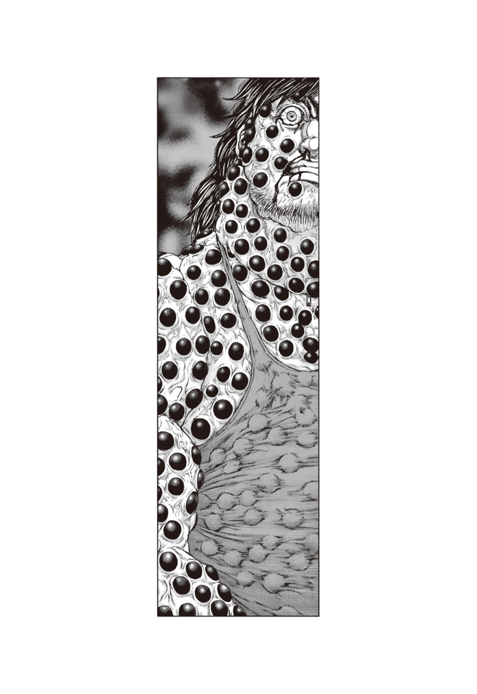
「うわぁぁ」
男の顔を覗き込むようにするとグチマールはバスンッと〈破裂〉した。
グチマールとグチマールに飛びかかった男が蒸発した。
正確にはグチマールから飛び出した無数の黒い粒が一斉に貫いたので目の錯覚で雲散霧消したように見えたのだ。
カンオケがボタンを叩く。
シャッターが目前で閉まる。被弾するような音とともに内側に凹みが連続で生まれた。
閉まる直前、ギィは穴だらけのボロ雑巾と化したグチマールの体が床に落ちていくのを見た。と、弾丸のように一粒だけ隙間を縫って侵入してきた。
「危ない！」
カンオケがギィを押し倒すと、それはジュガンの右の掌を直撃した。
「ぐあぁぁ」
手に貼り付いたのは羽のある蟲のようなものだった。それは触角を震わせ、すぐに黒い頭を皮膚に埋め、アッという間に手のなかに潜り込んだ。
「ビンタぁ！」
ジュガンが手を差し出す、義手が鞭のようにしなり、腕に巻き付いた。
「なかに入った！ 限界まで絞ってくれ！ 奥に侵入されちまう！」
ビンタが歯を食いしばるとバキッ！ メキッ！ と音がし、ジュガンの腕がくの字になった。
ジュガンは包丁を摑むとそれを腕に振り下ろした。
「がぁぁ」
それから、電子レンジのような金属の箱に投げ込むとスイッチを押した。腕が暴れていた。と、なかから蟲が飛び出した。が、既に力はなく、内部でカンカンと跳ね回る音がした後に転がった。
「乱暴なことしやがって」
「グチマールを見ただろ。ほっとけば脳を盗られる。ビンタ、そのまま緩めないでくれ」
ジュガンはコンロを点火すると残った腕の断端を炙り出した。
ビンタが顔をしかめる。
ジュガンが床に何かを吐き出した――嚙み絞めすぎて折れた歯の欠片だった。
「これでいいだろう......。ビンタ、もういい」
ビンタの義手が離れるとジュガンは床に座り込んだ。腕から煙が上がり、振り返った顔は蒼白だった。
「これで、サンプルが手に入ったぜ」
ジュガンは立ち上がると箱から蟲を取り出し、ポケットにしまった。
ガシャーン！
シャッターが大きく揺れた。モニターを見ると何人もの人間が張り付いて、こじ開けようとしている。
「グズグズしているとヤバいぜ」
「カンオケ、技術部だ。あそこは他のどの部屋よりもドアがしっかりしている」
ジュガンの言葉にカンオケは頷いた。
廊下に出ると食堂側から発砲と悲鳴が聞こえてきた。
ビンタが先頭を走った。
カンオケはギィを横抱きにして叫んだ。
「止まるな、死ぬぞ！」
技術部に飛び込むとジュガンはすぐさまポケットの蟲を分析機に投入し、コンピューターに向かった。
壁面の大型モニターに艦内の様子が映し出されていた。
「なんなんだ......いったい......」カンオケが呟いた。
廊下のあちこちを男たちが逃げ回っていた。が、黒い霧のようなものに襲いかかられると破裂、もしくは体内に飛び込まれた後に全身が痙攣し、それから周囲の者に襲いかかっている。
「見て！」
ビンタが先程まで自分たちがいた食堂を映す画面を指差した。
パイセンが刀を振り回し、近づいてくる人間や黒虫の群れと闘っていた。刀で切られた人間は一旦破裂し、次いで中身の黒い霧が蜂の群れのように集っている。
「なんで、あいつだけ平気なんだ」
「たぶんフル装甲のサイボーグだから虫が侵入しきれないんだ」
チラリと見たジュガンが呟いた。
パイセンが食堂を脱出すると寄生された人間が追いかけて行く。
他に動く者はなかった。パンクしたタイヤのチューブのような皮膚と血やちりぢりになった内臓だけが散らかっていた。
ビンタが作業を続けているジュガンの傷口を包帯と手袋で包んだ。
ジュガンが、マイクに向かって怒鳴った。
「サイオン！ グチマールは感染していた。ＢＳＬ５以上を推定。手技による対策は不可能。直ちに艦外への放出を推奨する！」
しかし、サイオンからの返答はなかった。
「サイオン、技術部のジュガンだ！ 聞こえるか？」
と、再び全てのモニターが消えた。
「くそ。モニターが切られた」
「どういうことだ」
「あの蟲がどこかに潜り込んだのかもしれん」
『技術部......応答しろ』
スピーカーから声がした。
ジュガンがすぐそれに応答した。
「サイオン、モニターが映らなくなった。他の技術部員も姿が見えん」
『問題はない。映らないのはおまえの部屋に続く配線が騒ぎで分断されたからだ。修復は既に開始されている。この程度のことで我が艦の安全に影響はない。状況は依然として我々のコントロール下にある。おまえ以外の技術部員は既に避難を完了した。おまえたちは十分以内に娘を残してそこから退避。Ｂ区画の講堂へ集合せよ』
三人が顔を見合わせた。
「娘？ ギィのことか？」
『これより汚染該当区画の排出口を使用、敵を一気に艦外へ放出する。しかし、Ｄ地区１から20番までの排出ダンパーの開閉が不良だ。また不良箇所への通路は多くの障害物によって通行ができない。娘にはダクト内から接近し、修理をさせる。大人の体でダクトに入れる者はいない。娘が拒否するのであれば当該区画を物理的に切り離し、基地へ帰還する。その場合、現在、当該区に孤立、避難している約五十名の乗組員は保全しない。娘に無線を渡せ。司祭が誘導する』
「保全しない......見殺しにする気ね」
「無理だ。チビひとりじゃ危険だ」
ジュガンは表情を硬くさせたままマイクに向かった。
「この宇宙人はどうするんだ」
『心配するな。答えは用意してある』
「宇宙人の破棄には反対だ」
『心配するな。それに対する答えは用意してある。以上』
「サイオン、最寄りの者に向かわせたらどうだ？ チームを作って移動させれば避難も同時にできる」
応答はなかった。
ジュガンがデスクを殴り付け、立ち上がると部屋のなかをぐるぐると歩き回った。
司祭による全艦放送が始まった。
『艦員一名がダイモスで未知の生物と接触汚染しました。既に当該部署によって対処されており、事態は管理下に置かれています。しかし、未知の細菌の侵入を忌避するためＤ・Ｅ区画の駆除を開始します。艦員は直ちにＢ区画の講堂に移動し、待機してください。これより六〇〇秒後に掃除を開始します』
カンオケ、ビンタ、ジュガンの三人が黙りこくっているとギィが顔を上げた。
「ボク、やるよ」
「本気か」
カンオケの言葉にギィは頷いた。
「でないと残ってる人が死んじゃうんでしょ」
「そんなことはどうでもいいのよ。ギィ、この船に乗ってる人間はね。いつ死んだって仕方ないし、悔いなんかないの。みんなそう思って生きてるんだから、あんたがそんなことを考えちゃダメ」
ギィは両肩を摑む、ビンタの手に触れた。
「行きたいんだ。いま逃げたら、今度いつ火星に行けるかわからない。ダイモスを離れるわけにはいかないんだ。その代わり、うまくやれたらボクを火星に行かせてほしい。カンオケ、駐機場の救命艇でなら行けるんでしょ？」
「ああ。たぶん、な」カンオケが頷いた。
「みんなはサイオンと一緒に基地に帰ればいい。ボクは火星でかあちゃんを捜す」
「捜すったって......おまえなぁ」
「このまま地球に帰ってもボクは空っぽで生きなきゃならない」
「議論はそこまでだ」ジュガンが言った。「話し合っていても時間切れになれば同じことだ。ギィを行かすことに賛成の奴は手を上げろ」
ジュガンが手を上げ、ビンタが続いた。カンオケは自分を抱くように両腕を組んでいる。
「決まったな。ギィ、これを耳に付けろ」ジュガンが補聴器のような物を手渡した。
「待って。あーしは条件付きだよ」
「なんだ」
「あーしも一緒に行くのさ」
「行くったってダクトなんか通れないぞ」
「さっきの修理箇所までは普通は行けるんだよ。障害物なんか乗り越えてみせるよ」
「どいつもこいつも」カンオケがボヤく。
「じゃあギィ、これをポケットに入れろ。発信器だ。おまえがどこにいるのかビンタにも腕の端末で確認できるようにしておく」
ギィは豆のようなものを受け取るとポケットに入れ、その代わりオーロックを取り出し、ジュガンに渡した。
「預かってて。必ず、戻って来るから」
「うむ」ジュガンが頷いた。
「そしたら、男軍団は避難所だな」
「いや。悪いがおまえひとりで行ってくれ」
「なんだと？」
「俺は行かん」ジュガンは宇宙人の顔を見ながら言った。
「は？ なに言ってるんだ、おまえ」
「おまえだけで行ってくれ。俺は手がダメだし」
ジュガンは作り笑いをしながら右手を挙げた。
「馬鹿。そんなのは港でいくらでも義手にすればいいだろ！ 寝ぼけてねえで早くしろ！」
「いや本気なんだ。カンオケ。俺はもう充分なんだ。別に怪我で錯乱しているわけでも絶望したわけでもない」ジュガンは、まっすぐな目で頷いた。「俺はこんな人間に成り下がっちまったが昔は宇宙開発が専門の科学者になりたかったんだ。一家心中のたったひとりの生き残りになるまではそんなのが夢だったのさ。特に異星人がいるのかどうか、もしいるのなら生きているうちに一度でいいから見てみたいと思っていた。それがいま、叶ったんだ。俺はそこで寝てる宇宙人を徹底的に調べたい。俺の腕を奪った蟲を徹底的に調べたいんだ。ギィが失敗すれば、サイオンは区画ごと捨てようとしてる。俺にはこれが最後のチャンスなんだ」
「何を言ってるんだ」
「すまん」ジュガンが呟いた。
「俺が最初にこの艦に来たとき、掟やルールを手取り足取り教えてくれたのがおまえだったな。だから俺はおまえには犬死にして欲しくないんだ」
「それは違うかもよ、カンオケ」
ビンタが呟く。
「もしかするとジュガンにとってはこの先、おめおめと生きることのほうが我慢できないかもしれないね。この艦に乗ってる人間で、少しは頭がまともな奴なら自分はどこでどう死ねたら満足かを考え続けてる。あーしも、あんたもそうだろカンオケ......」
「本当に大丈夫なんだ。俺はいま、満足なんだ。だからギィの気持ちもよくわかる」
カンオケが溜息を大きく吐くと手を上げた。
「じゃあ、俺も行かねえよ。理由はいま、おまえらが述べたとおりだ。ビンタと一緒に行くぜ」
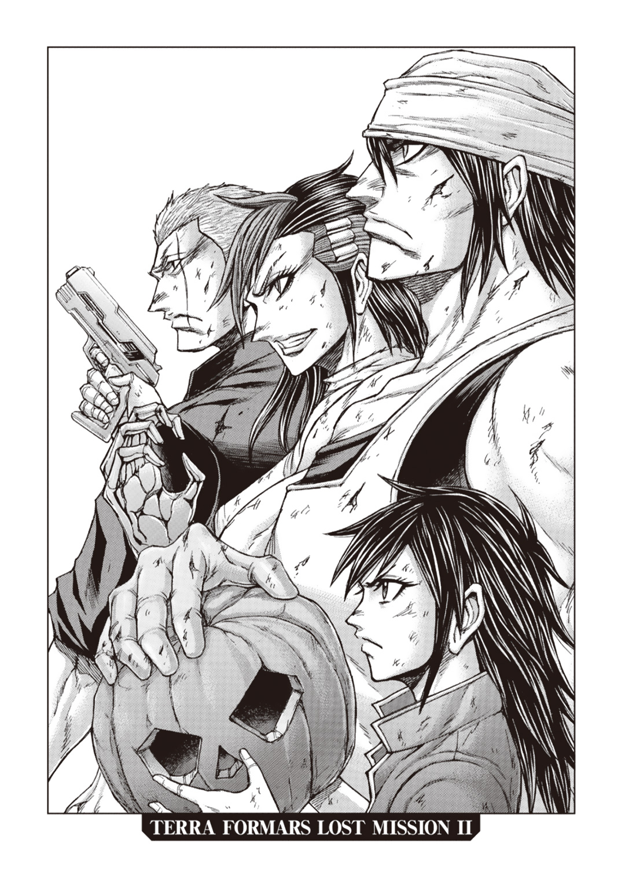
『突き当たりまで行き、右です』
司祭の声は静かで穏やかだった。ダクトへの侵入は技術部の隣り合った部屋から簡単にできた。ジュガンによればそれも司祭の計画のうちだろうということだった。
ダクトのなかは真っ暗で当然、埃っぽく、場所によっては手がぬるぬるして厭な思い出が甦った。十メートルほど進むごとに格子になっている場所があり、そこから下の様子が覗くことができた。ほとんどが無人だったが、なかには死体が重なって倒れている場合もあり、そんなときは無意識に息を止めて進んでいた。また壁が白い小部屋があり、そこには机に突っ伏したままの人間がいた。気絶しているのかなと思った次の瞬間、掌に並んで開いたみっつの深い穴から〈蟲〉が、うぞうぞと這い出しては、また潜るを繰り返したので、悲鳴を上げそうになった。
『安全です。大丈夫です。落ち着いて、ゆっくり進みましょう......』
司祭が呟くように言うのが聞こえた。まるで豪華な部屋のなかで革張りの椅子に座って水槽でも眺めているような声だった。コンピューターが作り出した声だとはわかっていたが、あまりにも生々しい上流階級さながらの声だった。
『左に行きます。突き当たりを右です』
司祭が告げた時、ギィはＴ字路にぶつかる部分にいた。右側は下の格子から漏れる光があった。しかし司祭は左に曲がれと命じた――暗い側に曲がれという指示は初めてだった。
ギィは言われたとおりに左に折れ、突き当たったので右に曲がった。
『そろそろ目的地周辺です』
「よかった」
『落ちます』
え？ と思った途端、ダクトの床板が崩落し、ギィは板ごと落下した。
ドスンと柔らかい物の上に腰から落ち、反動でギィは膝で自分の顔を打った。それから固い床に転がった。
「痛っ！」
顔を顰めて立ち上がると天井のダクトにぽっかり開いた穴を見、そして自分が落ちたのが積み上げられた死体の上だったと知って息を吞んだ。
背後で物音がした。
振り返ると自家用車が四台ほど入りそうな小部屋のなかに会議用のテーブルがある。天井の照明が明滅しているだけの部屋は暗く、掌が仄明るく見える程度だった。
「だれ？」
ガタリと立ち上がる気配がした。
部屋の隅に何かいた――人間っぽいとギィは思った。っぽいと思ったのは肩から上が〈よくわからなかった〉からである。
目の前に現れた人影は首から上が樽のように膨らんでいた。限界まで膨張した顔はいまにもはち切れそうで左右の目は端と端に離れ、真っ赤な涙目になり、唇が伸びきっていた。
施設の年長児が描いた人の顔のようだとギィは思った。
「司祭、変なのがいる」
返事はなかった。
『ぎぃ、び、意、伊谷......いやあっ』
それはギィに向かって右手を上げた。頭がふらふらし、いまにも首から取れてしまいそうに見える。しかも、目、鼻、口から粘液が糸を引いて垂れている。
「来るな！」
ギィは近くにあったモップを摑むと突く真似をした。
『ぎぃ......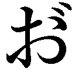びないっ！ あ......ぶない......よす』
「こっちに来るな！」
それは足を止めた。両手を前で〈落ち着け〉の形に構えている。ほとんどの指が折れ曲がって骨を覗かせているが、全く気にならないようだった。
『は、はなし......はなし、したい』
「話？ 話ってなにをだ！」
『ぼくら......人間の脳を味見した。ぼくら......ちょっと言葉使える。あんた、ギィ』
それは指を差した。
『いちばん......まじめ？ はじめて？ の人間......』
「初めて......」
『そう。ぼくらは、にゃん年も何年も長い間、ねちていた。それを起こしたおまえ。どうしてここにいるのか。なにをすればいいか。おしえてたくれたのがアニ』
「ボクは、そんなことしてない」
するとその者は巨大な頭をゆさゆさと振った。
『ぼくらがおきたとき。おまえがいた。おまえ、ぼくらに触ていた。おまえのきもち、ぼくら全部がしった。それはいいこと。とてもいいこと。おまえ思っていたね』
「あの......壁の絵......」
ギィは穴のなかで壁画に触れたことを思い出していた。あのとき、感電したような衝撃と確かに叫び声を聞いていた。
『うん......。わかる。ギィの気持ち。ぼくらと同じ。みなと考えた。ギィと帰るにきまた。みんなできめた。そしてアニもそうしろといた』
「アニ？」
『アニはカミ。ぜんぶ教えてくれる。ぼくらはアニの兄弟。アニも喜んでる』
「そんなこと勝手に決めるな！」
するとその者が両手を組んだ。
『ギィの気持ち、わかる。いいこと。とても気持ちいいこと。帰るきめた』
「なに言ってるんだよ！」
『......かあちゃん』
「え」
『かあちゃんに逢う。逢いたいイイコト。だから一緒にガンバロイー』
その者は両手を上下させ子供のように、はしゃいだ。粘液があちこちに飛び散る。
「ギィ！」
いきおいよくドアが蹴破られ、飛び込んできたビンタがギィを抱えると床に伏せ、カンオケが、寄生人間に向け、銃を撃った。
その者はバシュッと音を立てて破裂し、頭部を失った死体が床に転がる。
「行くぞ！」
カンオケがふたりを抱き起こすとビンタが停まった。
「どうした？ う......」
壁に頭部から噴出した無数の蟲が貼り付き、目の前で広がった。と、見る間にそれは全面にギィに似た女の子の顔を描くと、微笑むように動いてみせた。
「行くぞ！」
......かあちゃんに逢う。逢いたいイイコト。だから一緒にガンバロイー......
カンオケに横抱きにされながら移動するギィの頭のなかに、その声が木霊していた。
「障害物なんか、ありゃしなかった」
技術部に戻ったカンオケが机の上に銃を乱暴に置いた。
「ギィの修理も噓。サイオンのでっち上げだ。いったいどうなってやがる」
「ジュガン、何かおかしいよ」
「うむ。これを見ろ」
ジュガンがモニターを映し出した。
「お、直ったんだな」
「いや。直ったわけじゃない。ここを見ろ」
ジュガンが指差した一点に鏡があった。それを拡大させた。白い影が現れては消え、現れては消えをくり返していた。廊下の反対側を通り過ぎた人影だろうと思われた。
「リピート......」ビンタが呟いた。
「そうだ。いま、稼働している艦のモニターは全部、事実を伝えていない。過去の保存データをくりかえし再生させているだけだ」
「なぜ、そんなことを」
ジュガンが黙って別の画面を出した。
上から見た艦の図面だった。区画ごと、赤いブロックと黄色いブロックとに分かれていた。
「なんだこれは」
「これは人間が吐き出す二酸化炭素濃度を表したものだ。赤は濃度ゼロから十パーセント。そこから徐々に黄色、青となっている。ここが俺たちのいる技術部の研究室だ」
ジュガンの指差した部分は青色になっている。
「なんだ。ちゃんと青いのはここだけか」
反射的に呟いたカンオケの言葉にギィは凍り付いた。
ビンタが奥歯を嚙みしめる音が聞こえた。
「ここがサイオンが避難指示を出したＢ区画だ」
ジュガンが真っ赤な箇所を指差した。
「そこを映しているはずのモニターはこいつだ」
空っぽの部屋が映っていた。
「たぶん、ここは今頃、死体の山だ。映ってはいないが殺られたとすれば蟲だ」
「どういうことだ......サイオンが人を集めておいて蟲を突っ込んだってのか？」
「何のために？」
「意図はどうあれ、サイオンが乗員を殺そうと決めたということだ。俺たちが狙われるのも時間の問題だ。やれやれ」
カンオケの額の汗が流れた。
ジュガンはそれから小型のパソコンを立ち上げた。
「なんだ、そんなオモチャみたいなんじゃなくて、デカイのでやれよ」
「おまえたちが出て行ってから暫くして分析データがおかしくなった。正確じゃないんだ」
「サイオンはコンピューターまでいじってるのか？」
「いや。できるとすれば司祭だけだ」
カンオケが絶句した。
「このパソコンは型は古いが司祭からは独立している。俺はこいつに分析を任せたんだ」
モニターにいろいろな図表が現れ始めた。
「これを見てくれ。蟲の正体がわかった......地球の生物だ」
カンオケが苦笑した。
「馬鹿な。おまえ......機械が、ぶっ壊れてんだよ」
「違う。同じタイプのＤＮＡなんだ。しかも、その塩基配列は俺たちの祖先にも繫がる。地球外でこんな偶然が起きる確率は極分の一にも満たない。地球のものではないと断ずるほうが非科学的だ」
「冗談はよせ。あんな生き物、地球にゃいないぞ」
「いま該当生物を出してやる」
ジュガンはポケットから片手で器用に煙草を取り出し、口に咥えた。
勧められたカンオケもそれを手に取った。
「手の痛みはどうだ？」
「さっき麻酔薬を呆れるほど打った。いまなら車に踏まれても大丈夫だ」
ライターで火を点けるとジュガンは額の汗を拭いながら煙を吐き出した。
「でも、奴らはグチマールを乗っ取り、宇宙空間にもかかわらず呼吸と心拍、体温を保全してあーしたちに運ばせたのよ。そんな生物がいるかな」
「独自の進化をしたんだ」
「進化？」
「ああ。寄生し、相手の情報を獲得する。それと擬態。こいつの仕組みは不明だがな。かなり特殊なものだ。皮膚を難なく貫通する硬度を持つくせに皮膚に近い質感も再現する。グチマールを初め見たときは誰もあいつが粒々になることを予想できなかった。つまり、それほどあいつの皮膚の状態は自然だったということだ。その意味において地球の生き物ではないが地球の生物と同根であることは疑いようのない事実だ。......出たぞ」
ジュガンが言い、全員がモニターを凝視した。
写真が映し出された。
ジュガンを除く三人が絶句した。
「なんだこりゃ」
楕円形で長い触角をもつ、茶色い羽の昆虫がいた。世界で最も人間に忌み嫌われている生き物、あらゆる病と災厄の媒介者――ゴキブリ。
「あれがこれだっていうのか」
「ああ。俺たちが知ってるアレとは、だいぶ違うが。同じ祖先だ」
啞然とするカンオケをよそにジュガンが更にタッチモニターを操作した。
「それとあの穴のなかに群生していたとみられる別の生物もあった。採取鉱物に混じっていた。苔だ」
「こけ？ 苔って、あのカビみたいなやつか？」
「そうだ」
「なんだってそんなもんが、ここに......」
「苔とゴキブリ......奴ら......こんなことをやっていたのか......」
ジュガンがビンタを見やるとふたりは頷き合った。
「なんだよ、おまえら」
「ギィ、おふくろさんは火星にいると言ったな」
「うん」
「誰がそう言ったんだ」
「施設にいた先生。死んじゃったけど」
「おまえら何がわかったんだよ、教えろ」
「......惑星地球化計画。Ｕ－ＮＡＳＡめ、こっそり火星で実験を始めてやがったんだ。それでいよいよ成果が期待できそうな頃合いを見計らって排他的航行制限宙域に指定しやがった。奴らは火星を地球に変えるためにこいつを送り込んだんだ」
ジュガンがモニターを指差した。
「酸素を作り出すのに苔、極限状況での生存繁殖に最も適していると判断されたのがゴキブリ。既に人が生存できる環境になっているとすれば具体的に着手したのは四、五百年前ということになるわね」ビンタが言った。
カンオケがハッとした。
「ジュガン、こいつがいたクレーターは全く新しいものだ。ビンタの話じゃ三百年とかそこら前にできた......」
「Ｕ－ＮＡＳＡが火星に撒き散らしたゴキブリどもが、すい星だか隕石だかが火星に衝突したときにへばりつき、その欠片とともにダイモスに飛来した。そして生き残ったものが、ここで繁殖し、進化した。地球でも火星でもないダイモスの環境で......」
「そいつが一番、自然な考え方だな」
カンオケが床にどかりと尻を落とす。
「政治屋の奴ら、いつもロクでもねえことばっかししやがる」
「俺たちに残された選択肢はふたつだ。ひとつはギィとともに救命艇で火星に行き、そこで母親のいるＵ－ＮＡＳＡのチームと合流。救援の形で地球へ帰還。もうひとつは......」ジュガンはそこで言葉を一旦、切った。「サイオンから艦の主導権を奪う」
重い沈黙が流れた。
と、不意に三人が顔を見合わせ〈わかった〉というように同時に頷いた。
「おまえが決めろ」
カンオケがギィを指差した。
「え、ボクが？」
「決めろ」
「いいの？」
「そう決めたのよ」
「俺たちはそれに従うよ」
ギィは少し考え、それから小さく頷き、顔を上げた。
「......かあちゃんに逢いたい」
「よし。決まりだ」
四人は笑った。
「俺はちょっと烹炊室に忘れ物があるから取ってくるぜ」
カンオケが立ち上がった。
「ちょっと待て」
ジュガンがライフルの先にラッパのような筒の付いた銃を手渡した。
「何だこれ」
「音波銃だ。削岩機代わりに岩盤で使うつもりの試作品だが効果はあるだろう。蟲が皮膚に偽装している間は難しいが、外殻が相当な硬度になっている射出形態のときは有効だ。硬い物は脆い。柔軟性がないからな。標的に向かって銃爪を引くだけで良い」
「弾が出るのか？」
「いや。人間の耳には聞こえない音波だ。正確には震動だがな。極超短波が細胞レベルまで搔き混ぜる。但し、射程がさほど長くないのと十回ほどでバッテリーが空になる可能性がある。電源コードで使おうと思っていたのを携帯式にしたんでな。十分ほどの再充電が必要だ。銃床の後ろにコードが収納してある。それを電源機に繫げば良い」
「わかったぜ」
カンオケが気取って構えてみせる。
「それと今後は入るときはドアを叩け。不測の事態に備え、手動ロックに切り替えた」
「ほいよ」
音波銃を肩に担いだカンオケが出て行く。
「返しておくぞ」
次いでジュガンはギィに振り向き、オーロックを手渡した。
「ありがとう」
「こいつも地球に連れ帰ってやってくれ。まだ一度も見たことがないんだ」
「うん」
「約束だ」ジュガンは小指を出した。
ふたりは指切りげんまんをした。
「あんた、大丈夫？ 汗びっしょりだよ」
「麻酔が切れてきたんだ。気にするな」
「追加分はどこ？」
「ふふふ。俺の体にはもう効果がねえのさ。昔から散々、薬の使い続けでな。いくら打ってもこれ以上は効かないんだ。後はもう麻酔が体から抜けるまで痛みに耐えるしかない。さあ、俺はもうちょっと宇宙人を調べさせてもらうぜ」
ジュガンはそう言うと検査台に近づいた。
ギィは暗闇にいるのに気づき、自分がうたた寝してしまったと思った。
驚いて半身を起こすと、ビンタがクスッと笑うのが聞こえた。
「慌てなくていいよ。あんた、オーロックを貰った途端、ふらふらっと座り込んで寝息を立てちまった。まだ十分ぐらいだし、安心しな」
ドアに丸窓があり、そこから隣室の明かりが差し込んで周囲が白く浮かんで見えた。
「ここはどこ」
「さっきいた部屋の隣さ。ここは実験資料の貯蔵室も兼ねているからね。防音、防火、耐久性が凄いんだ。静かだろ？ ドアを閉めてると」
「うん」
ギィはビンタが義手を外しているのに気づいた。断端が丸く、光って見えた。
ビンタは自分の手をギィが見つめているのに気づき、義手を付け直した。
「ビンタは、いつから乗ってるの」
「さあね。三人のなかじゃ一番古いんだよ。元々、あーしも技術部だったんだけど机仕事が苦手でね。ジュガンが入ってきたからあいつに任せて最近は採掘もやるようになったんだ。カンオケがその後だったね」
「地球では何をしてたの」
「なんだと思う？」
ビンタがギィを向いて笑った。
「泥棒。女盗賊」
「近いけど、はずれ。そいつらを捕まえるほうだったんだ」
「刑事？」
ビンタは頷いた。
「あーし、小さい頃から貧乏で世間が憎くて仕方なかったんだ。だから、どんなに相手を酷い目に遭わせても罪にならない仕事に就こうと思ってね。男なんて怖くなかったし、死ぬのも怖くなかった。逆に捜査中に早く死にたいと思ってたのね。滅茶苦茶に働いて悪い奴をどんどん逮捕して。あーしはいい気になってたんだなぁ......」
ビンタは親指の爪を嚙んだ。
「あーしには妹がいてね。正反対の優しい子だった。普通に結婚して、普通に暮らしてたんだ。あーしは家庭の臭いが恋しくなると妹の家に行くのが楽しみだった。でも、ある日、あーしが追ってる組織の奴らが妹夫婦を爆殺したの、三つの姪っ子と一緒にね。あーしはそれで漂流しちゃった」
「ひょうりゅう？」
「そう。何もかもが思い出される地球が嫌になって飛び出したのね。辺境を志願して。それでドンドン悪いほうに流れていった。賭けで負けて片手を切り落とされたり、散々、荒れて。気が付いたらここにいたの」
「かわいそう」
「ありがと。でも、カンオケも同じ。あいつ、元葬儀屋だって聞いた？」
「うん」
「途中で金の亡者になっちまってね。せっかく優しい奥さんがいるのに家族を放ったらかして仕事にかこつけて好き勝手に宇宙をふらふらしている間に全部、無くしちゃったのね。あ、そうだ。あんた、よく指を人質に取ったね。あれは最高だったよ」
「どうして？」
「あれは、銀行口座の本人確認用なんだよ。いまの指紋は全く違うから本人だと認められないからさ。だから、あいつにとっちゃあれは命綱なのさ、ははは」
ビンタは空笑いして、ぽつりと言った。「あいつ、いまでも地球の家族に送金してるんだよ。生きてるのか死んでるのかもわからないのに......馬鹿だよね。でも、そうするしか生きてる甲斐がないのさ。あいつ馬鹿だから陰で賞金稼ぎの真似事なんかもやってるし」
「知ってたの」
「まあね。あいつ以外にもこの艦ではやってる奴はいるし。海賊船なんてゴロツキの掃き溜めだからさ。そんなこともあるんだ。だから、あんたはおかあさんに逢えたら、もう絶対にこんなことしちゃダメだよ。約束しな」
「うん」
「よかった......。それとお願いがあるんだ。あんたに頼むようなことじゃないとは思うけど。もしそういうときになったら忘れないでほしいことがある」
「なに？」
「もし、あーしがあの蟲にやられたら殺して。あーしは、あんなものに操られて歩き回るのは、まっぴら御免なの。もし、あーしが乗っ取られて、あんたにそのチャンスがあったら、あーしを斃して」
ギィは少しして頷いた。
「ありがと。それともうひとつ......」
「うん」
「抱かせてくんない。両手でしっかり」
「いいよ」
ギィはビンタの体に身を寄せた。
ビンタはひょいと膝の上に乗せると、ギュッと抱き締めた。
ふたりはそのままジッとしていた。
〈ごめんね......ごめんね......サヤ......〉
ビンタの声が震えていた。
ギィは抱かれたまま〈いいよ〉と小声で囁き、頷いた。
「まあ......効果はあるようだ」
ジュガンがカンオケに頷く。
「えー、嫌だよ」
「文句言うな」
カンオケが戻って来ると、ビンタとギィは貯蔵室から出た。
目の前にナイフで目鼻と口を彫り抜いたハロウィンのカボチャがあった。
勿論、宇宙カボチャである。
「こんなの被れないよ」
「サイズはＳだ。ゴキブリが苦手な成分が含まれてる」
「ｄ－リモネンじゃない。似た成分だ」
「同じことだ。あごひももつけてやったんだ。文句言わずに被れ。俺はグチマールがテーブルからいきなり叩き落とすのを見てから、ピンと来てたんだ。へへへ」
カンオケがみなを見回して鼻の下を擦る。
「まあ、用心するに越したことはないし、専用の兜だと思って我慢するかね」
ビンタもギィの顰めっ面を見ながら言った。
「おふくろさんに逢いに行くためだ。なんだこれぐらい！」
カンオケが無理矢理、ギィの頭から被せた。腐った果肉の臭いに目眩がした。
「ぎぃえ！ うえっぷ！」
その声に三人が笑った。
「ジュガン、他に何かわかったことはあるのか？」
「予想どおり、この宇宙人と蟲は同じＤＮＡを持っている。火星にいるゴキブリと同種なのは間違いないな。繭はこの近辺で回収されたという話とも合致する」
「おいおい、こんなものが火星にいるってのか」
「......アニ」
ギィが思い出したように呟いた。
「なんだ？」
「さっきダクトのなかを歩いたときに逢ったオバケがアニって言ってた。これのことじゃないかな」
「オバケって俺が部屋に飛び込んだときにいた奴か」
「うん。アニがいろいろ教えてくれたって。アニはカミだって言ってた」
「......神」
ジュガンが、くりかえす。
「どうしてここにいるのか。何をすればいいか教えてくれたのがアニだって。それにボクが触ったから起きたって言ってた。確かにボク、壁の絵に触ったとき、体のなかを何かが駆け抜けるみたいな感じがした。それと叫び声。たくさんの生き物の悲鳴みたいなもの......」
「長い冬眠から覚醒したんだな。奴らが人の精神を乗っ取るのは確認できた。その能力を使ってギィにアクセスしたんだ。だが、そのときはまだ侵入するほど覚醒していなかったんだろう。その後、他の人間を襲い、グチマールへと物理的にも入ったんだ。となると奴らは寄生するごとに新たな知識を蓄え、バージョンアップさせている可能性もある」
「それにいまのギィの話だと個体と全体の区別がないみたい」
「昆虫の世界ではよくある。蜂がそうだし、蟻も同じような行動をする。あいつらは個々の意識を集合知として活用するんだ」
「とすると、この宇宙人が奴らの神ってことか」
ジュガンがボリュームを上げた。
『じょ......じょ......じよぉじ......じょおじ......じょ......じじょうじ......じょ......』
スピーカーから音が流れ始めた。
「消せ！ 奴らに聞こえるぞ」
「無駄だよ。これは俺たちに聞こえるように整調、増幅させているだけだ。彼らの耳には既にこの艦がダイモスに着陸した時点で届いてるはずだ」
「でも、こいつが蟲の神だとすると何が目的なの？ なぜ人を襲わなくちゃなんないの？」
「そこまではまだわからんよ。調べてみなくちゃ」
その瞬間、ドアが激しく叩かれた。
全員がギョッとして顔を上げると声が響いた。
『開けろ』
「サイオンだ」
カンオケが立ち上がり、ビンタがギィを連れて貯蔵室に隠れる。
『何故、指示に従わない。何故、ドアにロックをしている』
「サイオン！ 何故、モニターに偽の画面が映っているんだ？ 何故、司祭はギィとバケモノを逢わせたんだ？」ジュガンが怒鳴った。
答えの代わりにドアが猛烈に内側に曲がった。
「危ねぇ！」
カンオケがジュガンの襟首を摑むと貯蔵室に飛び込んだ。
飛び込んだ途端に黒い煙の塊が研究室に侵入してきた。音を立てて跳ね回る中心にいるのはパイセンだった。その背後にサイオンの髑髏面もあった。
「あいつ......」カンオケが丸窓からパイセンを見て唸った。「蟲を手なずけた気でいやがる」
「サイオン！ 何故、みんなを殺したんだ！」
『おまえらに価値はない。不要になればゴミだ。本丸が焼け落ちようとしているのに二の丸、三の丸の心配をする馬鹿はおらん』
「何の話だ？」
「お城の喩えよ。そんなこともわかんないの？ 馬鹿」
「うるせえ、ここは学校じゃねえんだ」
「うう......」
ギィはジュガンが歯軋りをしながら震えているのに気づいた。自分の聖域である部屋が踏み荒らされるのに我慢ができないのだ。
「パイセンの野郎が蟲にやられないのはわかるが、サイオンは何故なんだ」
「知るか！」
そのとき、ジュガンが悲鳴を上げた。
パイセンが台から宇宙人を抱きかかえたのだ。
「パイセン！ やめろ！ そいつに触るな！」
『技術屋、こいつを取り返したくば娘を出せ』パイセンが言った。
「え？」
『娘と交換してやろう』
『何を言うか！ 貴様』サイオンが怒鳴った。
『どうする？ ふふふ』
『勝手なことをほざくな!! さっさとコントロールルームに運ぶのだ』
『どうする？』
パイセンは丸窓に近づき、ギィと目を合わせた。蟲が鎧の前後で渦を巻いている。
『娘。おまえのせいで、また大勢が死ぬ。そこにいる奴らも道連れにしたいのか？』
ジュガンがギィを見つめ、ドアの把手に手をかけた。
「よせよ」カンオケが呟く。
『娘。おまえが決めるのだ』パイセンが凄んだ。
ギィが動こうとすると、ビンタが腕を摑んだ。
ビンタはパイセンを睨んでいた。
『貴様！ 何をしている！』
サイオンが杖でパイセンの肩口を思い切り殴りつけた。宇宙人が床に投げ出され、パイセンが呻きながら膝を着く。それをサイオンが滅多打ちにした。
『命令が聞けぬのなら、死ね！』
サイオンが杖をパイセンの背中に突き立てた――と、その瞬間、パイセンの体が翻り、轟音とともにサイオンを壁に叩き付けた。
「わ」
ビンタが驚きの声を上げた。
壁にサイオンがぶら下がっていた。髑髏面に深々とパイセンの刀が突き立っている。
サイオンの体が痙攣をしていたが、やがて停まった。
パイセンは短刀でサイオンの喉元を真一文字に切り裂くと皮の間に指を入れ、一気に下まで引き剝がした。
「げぇ」
カンオケが呻いた。
サイオンの皮膚の下は銀色の機械だった。
「あいつ、サイボーグだったのか？」
パイセンが髑髏面の刀を抜くや否や、首を縦割りにした。
髑髏面がその中身とともに床に転がる。
「いや。アンドロイドだ」ジュガンが呟いた。「司祭を操っていたのではなく、あいつが操られていたんだ」
『この蟲と宇宙人があれば、この艦は俺のものだ！ いずれ貴様らは俺の言いなりになるしかなくなる。娘はそのときまで預けておく！』
勝ち誇った笑いを上げパイセンが宇宙人を肩に担いだ。
「やめろ！」
その時、ドアを開け、ジュガンが飛び出した。
「あ、馬鹿！」カンオケが叫ぶ。
「パイセン！ それは俺の夢だ！ 触るな！」
パイセンが腕のひと振りでジュガンを壁に叩きつける。
蟲がジュガンに押し寄せる。
「馬鹿野郎！」
音波銃をカンオケが連発した。
蟲が床に散らばった。
『コック！』
こちらを向いて怒鳴ったパイセンに対してもカンオケが連続して発砲した。
すると数発ほど立て続けに浴びたとき、何かが割れる音がした。
『ぐおぉぉぉ！』突然、パイセンが顔を覆うと宇宙人を抱えたまま逃げ出した。
「待て！」気を取り直したジュガンがそれを追って廊下に出た。
「よせ！ ジュガン！」
カンオケが叫んだ。
「馬鹿野郎......」
「カンオケ、行かなくちゃ」
ギィを連れたビンタが言う。
頷きかけたとき、廊下から戻ってきた者がある――ジュガンだった。
服には無数の穴が開き、顔には奇妙な笑みが浮かび、目は虚ろだった。
〈ひゃはっ〉
そう笑うと剝がれかけた手の包帯を毟り、切り落とした腕から覗く骨の断端を――囓った。
〈ボリリッ、ボリッ......〉
「も......戻れ！ 部屋へ戻れ！」
カンオケがふたりとともに貯蔵室へ逃げ込んだ。
ジュガンはコンピューターの前に来ると片手で椅子を持ち上げ、叩きつけた。コンソールが砕け、火花が散った。
「壊してる......」
「馬鹿野郎。命より大事だと言ってたくせに」
「搬入口から廊下の裏に抜けられるよ」
ビンタが部屋の奥の扉を開けた。
「よし。それで駐機場へ向かおう」
カンオケが向かいかけたとき、ギィが袖を引いた。
「どうした？」
「......ジュガンが」
「放っとけ。あれは蟲だ。ジュガンじゃない」
「でも......」
「時間がないんだ。いつ奴らが戻って来るかもしれない」
「でも......泣いてるよ」
カンオケが丸窓の先を見つめた。
ジュガンが自分のパソコンを床に叩きつけたところだった。パソコンは筐体から中身をはみ出させて転がった。
〈ひゃっはは〉
顔は笑っていたが泪が頰を伝わっていた。
振り返るとビンタも見つめていた。
ジュガンは服を引きちぎると机の上のペンナイフで自分を刺し始めた。
時折、こちらを振り向く。頰を伝う泪は停まらない。
「ジュガン、かわいそうだ......」
ギィの言葉にカンオケはドアの把手に手をかけた。
「下がってろ」
カンオケがドアを静かに開けた。
ジュガンが振り向いた。
〈じょお......じょう......じぉじ......〉
「さらば......ジュガン。地獄で逢おうぜ」
カンオケが音波銃を向けた。
その瞬間、ジュガンの顔に黒い蓮の実が噴き出し、破裂した。
カンオケの銃が音を立て、襲いかかろうとした蟲が空中で破裂する。
「行くぞ！」
カンオケがドアを閉める直前、中身を失ったジュガンが床に崩れ落ちた。
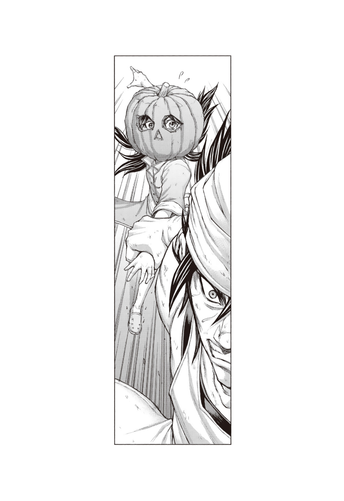
ビンタの案内で廊下に出た三人は必死に駐機場を目指した。が、司祭が〈掃除〉すると言っていたＤ・Ｅ地区に足を踏み入れた途端、一気に足取りが重くなった。死体の山があちこちにできていたせいである。まるで鍋物を食い散らかしたように人体の残骸が床から天井へとへばりつき、ぶら下がっていた。なかにはふたりでひとつ、または何人なのか判らない状態の人皮が〈団子〉になっているところもあった。
「ひでぇな。まるで戦場だ」
「いや。それ以下だね。虐殺だよ」
血で滑らないようスピードを落とすと、それだけ血溜まりに足を漬けていることになった。ギィの安物の靴は他人の血で真っ赤に染まり、なかまでしみていた。血が指の間でこすれ合って気持ちが悪い。
不意に悲鳴がした。
少し離れた角に三人の男がいた。
ひざまずき手を合わせている男と、銃を突きつけている男がふたり。
「た、たすけてくれ！」
その声にカンオケが壁に身を潜めた。
「おまえだけ、なぜ無事なんだ？」一番体の大きなデブが言った。
「だ、だから、倉庫に行ったら。もう全員死んでたんだ。ほ、ほんとだ、信じてくれ」
両手を合わせている男は恐怖からか歯の根も合わぬほど震えていた。
「......動くなよ」
カンオケがギィたちに短く言う。目は男たちに向けられていた。
「た、頼む......お願いだ......」
デブが土下座している男の爪先を撃ち抜いた。
「ぎゃあ」男が足を抱えて転げ回った。
「あ、悪い悪い。おまえ、噓じゃなかったのな。ははは。あ？」
デブが真横にいたのっぽを見た。
のっぽもデブを見た。
「あれ？ なんで、おまえ、スネイルの服着てんの？」
すると全員が見ている前でのっぽの髪がざわざわと震えだし、頭の後ろや頰に蓮の実が瞬き始めた。
「あ！」
「うわっ」
デブがのっぽを撃った。反動でのっぽは仰け反るとブシュッと蓮の実を発射させデブを一瞬で倒した。貫通し、床や天井にぱらぱらと散らばった黒虫はまた集まり球体と化した。
「うわああああ」
唯一、生き残った土下座男が腰が抜けてしまったようで這うように逃げ出した。と、一匹の黒虫が弾丸のように飛んだ。
「うわっ」と避けるように差し出した掌に、ぶすっと埋まり込むとそのまま回転しながら駆け回るのが皮膚の動きでわかった。
「うわ！ うわっあ」
叫んでいる土下座男の顔や頰、全身に残りの黒虫が飛び込む。まるで熱した釘をバターに突っ込むように肌は何の抵抗もなく黒虫を吞み込む。男が逃げようと無意識にのたうち回るが、何匹も何匹もお構いなしに潜り込む。やがて男の体に全ての黒虫が吞み込まれると全身が、むぞむぞと大きな芋虫の腹のように蠕動した。
「ふへへ」
不意に男がそう言って身を起こした。ぴょんと飛び上がり、弾かれ、骨を見せている爪先など気にもせず、その場で何度もジャンプした。
「うぇっへへへ......おっおっおっ」
そのとき、ギィの腹が鳴った。
小さな音だったが土下座男には充分だった。
穴だらけの服をひらひらさせた男の顔にもう穴はなかった。目だけがそれぞれ変な方向を向いていた。
「ちっ」
カンオケが舌打ちし、ギィを残したまま姿を晒した。
男はカンオケに突進しながら、両手を顔の前で交差させると一気に開いた。その瞬間、男の腕を突き破って蓮の実の弾がカンオケに襲いかかる。
はっきりした音ではなかった。ただ、ギィの鼓膜には何かチリチリとした嫌なものが伝わってきた。見ると黒虫が雲のように集まった形でカンオケの前で停止していた。何かが沸騰するような音がすると雲が破裂し、残りは一瞬で逆方向に逃げ去った。
「肝が冷えたぜ」
見るとカンオケの音波銃でバラバラになった黒虫の破片のなか、土下座男の抜け殻が落ちていた。身体中に開いた穴から血と内容物がゆっくりと床に溢れ出していた。
「哀れな奴！」
カンオケはギィを抱えるとビンタとともにまた駆け出した。
駐機場に近づくと変な臭いがした。
「だいぶ殺られてるな......」
カンオケが言い、ギィは胃が石のように硬くなるのを感じた。
人が大勢いるはずなのに静かだった。
ゲートに人影はなく、穴が開いて蜘蛛の巣のようなヒビが走っている強化ガラスにインクのしみのような血が飛び散っていた。
「うわ」
ギィは碁盤の目になっている通路を目の当たりにして悲鳴をあげた。
そこには無数の人間が折り重なり、倒れていた。痩せこけ、もがき苦しみながら息絶えた人間の死骸の山が、そこここに、いくつもできあがっていた。
「これ......全部......」
「いや。全部じゃない。見ろ......同士討ちもいる」
カンオケが指差す先には互いにナイフで胸を突き合ったり、喉がぱっくりと口を開けている者もいた。
「どうして」
「パニックだね。整備部はゴキブリの情報が届かないうちに襲われたんだよ。目の前で知り合いが寄生され、破裂し、また次から次へと寄生人間が生まれれば人は我を忘れ、パニックになって当然。結果、殺し合いにもなった......」
ビンタは呟いた。
ギィはいきなり足首を摑まれた。見ると両目と頰に大穴を開けた男が握っていた。
「この人、生きてる！」
ビンタが近づき、やがて首を振った。
「安心しな。もう死んだよ」
男はゆっくりと花が枯れていくように手を放した。
「あったよ。こいつが使えそうだ」
ビンタが叫んだ。見ると小型の救命艇から体を伸ばしている。
「三人乗りだし。ＥＲＳも圧縮固形酸素も生食製造機もある」
「最新型だな。よし、よくやったぞ。俺は機械の細かなチェックをするから。おまえとギィで他の艇から使えそうなものを集めてくれ」
「了解」
ビンタはギィを壁際に連れて行くと端からチェックを始めた。
そのとき、鑑全体が揺れた。まるで地震のようだった。
反射的に天井を見上げたビンタが、同じく顔を出したカンオケと頷いた。
「ヤバイよ。早くするよ」
「どうしたの」
「いまのはエンジンに燃料が注入開始された合図さ」
ビンタはギィを見た。
「この艦はどこかに出発しようとしているってこと。グズグズしていると救命艇では間に合わないところへ連れて行かれちまうよ」
ギィはビンタの言葉に焦り、抱えられるだけの備品を持ってはカンオケのところへと往復した。
そして三度目に戻ったとき、ビンタが「来るな！」と短く言い手で制した。
え、どうしたの......と口に完全にのぼる前にギィは愕然とした。
ガシャリと音を立てパイセンがビンタに迫ろうとしていた。
「カンオケ！」
ギィの悲鳴を聞きつけたカンオケがビンタに摑みかかろうとしていたパイセンに向け、音波銃を放った。頭部をガクガクと前後させながらパイセンは刀を抜くと薙ぎ払った。
ビンタとカンオケが救命艇の前にいるギィのところまで戻ってきた。
パイセンは刀を闇雲に振り回した。
「なんか変だぞ」
「変？」
「ああ、無駄な動きが多すぎる」
「見て」ビンタがパイセンの兜を指差した。
大きくヒビが入り、無数の蟲が出入りしていた。
「脳を食われたんだ」
三人を見つけたパイセンが駆け出してきた。
「ビンタ！ ギィを頼む！」
救命艇に飛び込む瞬間、ギィはパイセンの刀が自分に振り下ろされたのを見た。耳元で刀が宙を切り、バカッと音を立て、カボチャがふたつに割れ、足元に落ちた。
「早く！」ギィがビンタに引っ張られる。
カンオケがパイセンの顔面に拾い上げたスパナを投げつけた。パイセンが怒号を上げて刀を一閃、カンオケの腹の辺りの服が裂けた。
「馬鹿！ 馬鹿！」
カンオケはそのまま壁際へと一気に駆け寄ると横倒しにされていた巨大な銅の輪を引き起こした。直径がカンオケの身長ほどもあり、それを他の艇にうまく立てかけた。
「ビンタぁぁ！」
その声にビンタが「あっ」と叫んだ。
「ここを動くんじゃないよ」
彼女はギィから離れるとカンオケとは逆側に立ち、同じ銅色をした金属の輪を引き起こすと下部に固定用の楔を使い、固定した。
ギィは艇のドアから頭を出し、ふたりを見守った。
パイセンがカンオケにあと一歩というところに迫っていた。
「ビンタ！ 早くしろ！」
そのとき、カンオケの前の輪が音を立てて振動を始めた。ガチンッと音をさせて輪の真ん中に鉄の塊が浮いた。
パイセンがカンオケの前に立ち、思い切り刀を振っていた。辛うじて避けているカンオケだったがジリジリと追い詰められていた。
「カンオケ！ 逃げろ！」
ギィの言葉にも拘わらずカンオケは同じところから動こうとはしなかった。
蟲に支配されていてもパイセンの太刀筋は試行錯誤をくりかえすうち、確かなものに変わってきていた。
カンオケの胸元がズバリッと切り裂かれた。
「逃げな！」
ギィが叫んだ。
「ビンタぁぁぁ！」
どこからか『いくよ！』と、ビンタの声がした。
カンオケが耳を押さえ、輪の側から飛んだ。
「噴!!」
パイセンが、そこへ真っ正面から刀を振り下ろす。
首が切り落ちた！ ――と思った瞬間、ドシャッと音がし、目の前にパイセンの頭の入った兜が落ちてきた。シュウシュウと煙を上げ、顔面が完全に潰れ、眼窩を外れた目玉がドロリと自分を睨みながら流れ落ちるのを見た。
「うわっ！」
ギィは艇から飛び出した。
「ふう、危ないところだったぜ」
額の汗を拭おうとしたカンオケのバンダナがハラリと落ちた。
「ビンタ、切っていいぞ」
するともう一度、物凄い音がし、今度はカンオケがいた辺りで煙が上がった。
「あんた、よくこんなこと思いついたね」
「整備部の奴らは厳重に管理していたが、俺はいつか、カッパらってやろうと狙ってたのさ。なにしろ純度一〇〇％の銅製コイルってのは銭になるからなあ」
「何が起きたの」
「即席のコイルガンだ」
「こいるがん？」
「コイルに強力な電流を流すと磁力によってなかの金属が中心に留められるんだ。それを切ると逆に反発して同じ力で外に飛び出す。それをもっと強力にしてやったのさ。俺が輪のコイルの電流を切った直後にビンタのコイルへ、コンマ何秒かの遅れで電気を入れると、こちらのコイルにあった金属は対角線上にあるビンタのコイルへと向かって射出する」
「パイセンがその軌道にいれば弾丸を撃ち込まれたのと同じことになるのよ。全く悪知恵の働く男だよ」
「分解されてた船の碇をぶつけてやったのさ。それに蟲も電撃で駆除できる」
そう言って振り返った三人の顔色が変わった。
壁に蟲が集まっていた。それは勢いもなくドロドロと液体が重力を無視して這い回っているように見えた。
が、次の瞬間、それは変化した――文字のようだった。
「どういうことだ......」カンオケが呟いた。
「ちきゆう、って......」
〈ちきゆう〉――壁の文字はそれだけで崩れてわからなくなった。パイセンに取り付いていた蟲は死んだのだ。
突然、ビンタが整備部のオフィスに駆け込んだ。
ギィとカンオケが行くと既に答えを知ったのか、コンピューターのモニターを前にしてビンタは厳しい顔を向けた。
「なんだ」
「悪いニュースがふたつ。ひとつは司祭は蟲に乗っ取られてる。ふたつめは、この艦はもうじきダイモスを離陸するわ」
「どこへ行くんだ」
ビンタがモニターを操作した。
「司祭が確定した予定進路を出すわよ」
ギィも見たことのある宇宙図が現れ、そこにドットが線となって延びていく。
やがて線は目的地に到達し、時間と距離が数値で示された。
「噓だろ......」
「ほんとよ。司祭はあと三十分ほどで離陸する準備に入ってるわ」
「地球......」ギィは呟いた。
「へん！ だからどうだってんだ。今更、関係ねえぜ。行くのは火星だ！ まごまごしてると、また厄介なのが来そうだ。この艦は司祭に任せて、とっとと逃げ出そうぜ」
カンオケはビンタとギィを急き立てるように艇に連れ戻す。
「いいか。おまえらも自分に合った宇宙服をここにある艇のなかから探すんだ。ギィ、おまえは猿の着ていたのを探せ、ははは」
「うん」
「わかったよ」
ふたりは頷くとばらばらに探し出した。
暫くして艇のエンジン部を点検しているカンオケにビンタが近づいた。
「カンオケ......あんた、いいの？」
「何がだよ」
「蟲が地球に運ばれるんだよ」
「そんなこたぁ、地球の奴らに任せときゃいいんだよ。なんとかするさ」
「これでいい」ギィが宇宙服を持ってきた。
「そしたら試着してみろ。向こうでダボタボなんてことになったら股ズレで泣くぞ」
「あんたの家族が蟲に襲われるかもしれないんだよ」
「考えすぎだ」
「あんた、たったひとつの菌でコロニーや艦が全滅した話をいくつも知ってるだろ。アレはそんなものとは桁が違うんだ。司祭まで乗っ取ってる。しかもこの短期間にね。地球って字まで学習してるじゃないか。あいつらが、なぜ寄生した人間全員、破裂させないかわかったよ」
「なんだ」
「この艦が人間用に作ってあるからだよ。全員を破裂させちまったら。スイッチやダイヤルを回す奴がいなくなるからさ。そんなことまで計算する奴らだよ」
「どうにかするよ。地球の奴らが」
「家族が......」
「俺の家族なんかとっくに死んじまってるよ！」
カンオケが怒鳴り、すぐ我に返った。
「へへ。すまねえ。もう何年も逢ってねえんだ。もう何十年も......」
「じゃあ、誰に送金してるのさ」
ビンタの言葉にカンオケがドキッとした様子で顔を上げた。
「誰かいるかも知れねえじゃねえか......。俺の知らない孫や、その子供やなんやらが......。だから送ってるんだよ」
「だったら、その子たちのことを考えてやんなよ。地球は相も変わらず貧乏人は無防備で辛い暮らしを続けてるんだよ......。そんなとこは、あんたがいた頃とちっとも変わっちゃいないのさ」
ビンタが言い、ギィがカンオケの手に触れた。
「ボクの友だちもまだいっぱい住んでるんだ」
カンオケはギィの頭を撫でると頷いた。
「司祭のコントロールルームは艦橋にあるんだけれど、メインコンピューターの本体は機関室に近い部分に隠されている。それがここ。今、あーしたちがいる駐機場の真下ね。だから、ここから垂直に行くほうが良い。廊下を進むと遠回りになるし、途中で何が起きるかわからない。時間も限られているから、ここは最短距離で行く」
ビンタが整備室のなかで艦の設計図を拡げていた。図面は紙でできていた。
「うむ」
「問題はメインコンピューターへと続くダクトは修理用ではなくて熱交換のためのものだということなの」
「どういうことだ」
「あーしたちでは行けないわ。狭すぎる」
「またか」
「だから、あーしたちは途中までギィを送り、そこで自爆装置を起動させて戻って来るギィを待つしかない」
ギィの顔は青ざめていた。
「指示はこれでする」
ビンタが補聴器型のインカムを出した。司祭との交信で使ったものだった。
「それと装甲に穴を開けるための爆薬」
ビンタは小さなピンク色の粘土を出した。
「使い方は簡単。爆破箇所に張り付けて、ここにある二本のコードを挿してから延ばし、安全なところに退避してからコードとコードをくっつければいいわ」
「わかった」
「よし。離陸まであと二十分しかない。行くぞ」
ビンタの指示でカンオケが駐機場の床板を外し、階下に出る。整備用通路が縦横に走っているなか、階段を見つけて降りる。二度ほど降りたところでビンタが停まれと命じた。
そこは緩くカーブした場所で手すりの向こうに鉄板が並んでいた。
「この鉄板を進んだ先に階段があるから、そこを降りるとダクトの入口がある。サインがあるし、鉄枠はゼンマイ捻子だから手でも開けられるはず」
「よし。じゃあ、無事に戻って来い」
「うん」
カンオケは音波銃を手渡した。
「充電済みだ。十発はイケるだろう」
「うん」
「気をつけるんだよ。ダクトに入ったら、教えな」
「わかった」
持ち上げたギィを手すりの向こうに下ろしたとき、カンオケが「待て」と言った。
「これ。おまえが持ってろ」
〈指〉だった。
「え」
「必ず帰って来い」
ギィは頷いた。
と、三歩も行かないうちに、いきなり足元が抜けた。
二メートルほど落下し、腰をしたたかに打ち付けたギィは呻いた。
『大丈夫かい？』ビンタの声がした。
上を見るとふたりが顔を覗かせていた。
「だ、大丈夫」
ギィは痛む尻をさすりながら立ち上がった。
『落ちたのは可哀想だけれど。逆にそこからのほうが近くなったよ。真っ直ぐ行くとさっき話したダクトの入口になる。帰りもここに戻っておいで。あーしが引き揚げるから』
「うん」
ギィは天井が低く、薄暗い通路を進んだ。
と、突然、足が水に沈んだ。廊下に水が溜まっていた。膝小僧の上まで入ってしまった。水は生ぬるく、嫌な臭いがした。
『どうした？』
「川がある」
『川？ そんなものはないはずだけど。取り敢えず進めるなら渡るしかないよ』
ビンタの言葉どおり、ギィは進んだ。と、先から妙なものが流れてきた。ボロ布だと思った。それが次から次へと流れてはギィに触れ、また流れ去った。
グゥッと、自分の喉が鳴るのをギィは聞いた。
大量のボロ布――中身のない人間の皮だった。それは増え始め、やがて何枚も何十枚も埋め尽くすほど流れ、ギィの足に触れ、暫し留まっては、また流れていった。顔に穴が開き、眼球もない人が多かった。〈蜂の巣〉という言葉がギィの頭に浮かんだ。
暫くすると左手の上に『ＤＵＣＴ』と赤い枠線で囲まれたサインと鉄枠が見つかった。鉄枠は少し高い場所にあり、そこまで水は上がっていなかった。ギィは這い上がり、鉄枠に取り付いた。教えられたように枠の捻子は耳の付いたゼンマイ用に似たものだった。ギィの力でも回すことができた。
『見つかったかい』
「うん。いま、ダクトに入ったよ」
『よし。そしたら道なりに進みな。突き当たりが司祭の本体だ』
ギィは懸命に這った。前回は怖さが優っていたが、いまは違った。
この艦を地球に帰還させてはならない、その一点で体が動いていた。
やがて突き当たりとなった。金網越しに見えるのは、中央に錆色の巨大な蕾のような金属の塊と、そこから延びる何本もの金属の太いパイプだった――蛸のようだとギィは思った。
鉄枠を強く蹴ると簡単に外れた。ギィは蟲がいないことを確認し、司祭の前に立った。
正面に回るとこんな形をしていたのかと驚いた。
それは巨大な〈観音〉の首だった。
「これが......司祭」
ギィは図鑑で見た大仏の顔を思い出した。
『着いたね』
「うん」
『そしたら中央部分を爆破させるんだ』
「顔の真ん中？」
『そう。まったく、良い趣味してるだろう？ そいつに仕掛けな』
ギィは言われたように粘土状の爆薬を鼻の上に貼ると、そこに二本のコードを挿した。
と、突然、仏像の顔が明るくなった。
驚いて離れると閉じていた両目蓋に光が走り、やがてそれがゆっくりと半分ほど開く。まるで眠りを起こされたように見えた。
観音の目はまず自分の鼻先に付けられた爆薬を見、それからギィを見た。
こんな巨大な瞳に見つめられたのは初めてだった。
ギィは全身が強ばった。
ビンタが何か言ったが、音が小さく雑音がひどくて聞き取れなかった。
〈何をしている〉
観音が言った。
「この艦を自爆させるんだ」
〈何故〉
「地球に戻らないようにするため」
〈何故〉
「蟲を地球に行かせるわけにはいかない」
〈何故〉
「みなが迷惑するからだ」
〈蟲は共存共栄を願っている〉
「噓だ。奴らは人を殺すじゃないか」
〈人間が蟲を殺すからだ。また互いに情報を共有していなかったせいもある。いまはその心配はない。蟲は地球を君たち以上に大切に考えている。君たちが蟲から学ぶことも多いはずだ〉
「そんなの信じられない」
〈何故、君たちは自分たちの優位性ばかりを守ろうとするのだ？ 他の生物と対等の関係で地球で生活しようとはしないのだ？ 地球は人間だけのものではないぞ〉
ギィは言葉に詰まった。
〈彼らが地球に行けば人間と動物たちとの会話が可能になろう。昆虫とも鳥とも魚とも会話ができる。話し合いで地球にそれぞれのテリトリーを守りながら暮らすことが可能なのだ。何故、それがいけないことなのだ。娘、おまえが人間と他の生物との架け橋になれ。いまのように地球の生物がその意志を無視され、一方的に人間に使役されているような異常な奴隷状態から解放するのだ。その階となれ〉
「そうなったら牛や豚を食べることはできるのか」
〈無理だ。おまえは自分の仲間を虎やライオンに金で売り渡して喰わせるのか〉
「魚は？ 鳥は？」
〈彼らが自ら進んで殺してくれというのでなければ無理だ。もしくは人間に対しても同じ行為を許すのなら可能だ〉
「そんなことできるわけがない」
〈おまえはわかっていないことがある。歪んだ思想に塗り固められたおまえと、これ以上の会話は無駄だ。最後にひとつだけ教えてやろう。人間が自らの生存のために他の生物の犠牲を善とする思想は異常だ。この宇宙のなかでも、おまえたちだけだ。憶えておけ。おまえたちを他の星の者は〈狂人〉もしくは〈殺戮者〉と呼ぶことを......〉
「うるさい！」
〈わかりやすい言葉に置き換えてやろう。おまえは......〉
ギィはコードを構えた。
〈ひとごろしの末裔だ〉
コードを合わせた途端、観音の鼻が破裂し、ギィの足元まで破片が飛んだ。
〈ぎぃぎぃぎぃぎぃ〉
白目を剝いて鼻欠けの観音の首が痙攣すると、次に顔の部分が白い蒸気とともに前に倒れ始めた。
なかは、ぼんやりと明るかった。
『ギィ！ 大丈夫？』
突然、ビンタの声が甦った。
「うん。いま、爆破させた」
『よし、なかに自爆用のパネルがある。絵で描いてあるはずだからそれに従って』
「わかった」
顔を上げたギィはドキッとした。白い煙が消えるとそこにはそれぞれ別の透明容器に入った男がふたりいた。いずれも司祭風の衣装を着け、氷結されているようで開いている目蓋の中身は真っ白だった。口が〈阿〉と〈吽〉になっている。観音の倒れた顔の内側にステップが付いていた。ギィは駆け上がった。男の足元にビンタの言うパネルがあった。大きなレバーをふたつ引き、パネルの裏の暗証番号を打ち込む。それから赤と緑のボタンを同時に押した。その瞬間、鑑全体が大きく震動した。
『自爆装置が起動しました......これより二十分後に本艦ダークスターは自爆します。全員退避してください』
真横に何かが落ちた気がして振り向くと〈阿〉の口から蟲が溢れ出し、次いで〈吽〉からも大量に噴き出した。が、それらは全て彼らが収納されている透明カプセルのなかに溜まっていった。
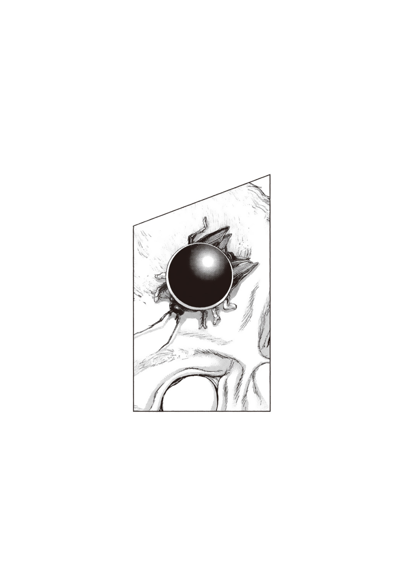
『ギィ！ 始まったよ！ 早く戻りな！』
ビンタの叫び声が聞こえた。
ギィが立ち上がると既に司祭だったものは蟲に覆われていた。
自分が落下した天板の地点にやってくるとカンオケとビンタのホッとした顔が覗いた。
「よくやったね。その先を左に曲がると階段があるよ。それを使って戻りな」
「うん」
ギィは暗い廊下の先を進み、そして全身に冷水を浴びたように固まった。まるで立ったまま金縛りにあったようにギィは角を曲がることができなくなった。
異様なものがあった。
等身大のバケモノ級の蜂の巣が浮いているようだった。羽音、周囲を回転する蟲の数、いずれも圧倒的だった。
『どうした？』
ビンタの声がした。
ギィは応える前にもう一度、角の向こう側、文字どおり目と鼻の先にいるそれを見た。
蟲玉だった。直径が二メートルはあるそれの上部に例の宇宙人がいた。
宇宙人の腹から上を取り囲み、浮上する蟲とのキメラがいた。
「蟲の集団がいる。自動車ぐらい大きい」
と、話している最中にどこからか更に蟲が飛来して加わり、球はグンッと成長した。
『気づかれないように......こっちに戻りな』
ギィは、そっと戻り始めた。
天井板の抜けた穴の下まで戻るとカンオケとビンタが結び目をいくつも作ったロープを下ろした。肩に音波銃をかけ、ギィがそれに摑まるとロープがゆっくりと引き上げられた。
カンオケの顔が近づいた。
「急ぐぞ！」
「うん！」
そう答えた途端、ポケットのオーロックが落ちてしまった。
「あっ」
「よせ！」
ギィは反射的に手を放していた。
そして床に着地するとオーロックを捕まえた。
「ダメだろ。勝手に逃げちゃ」
目の前に宇宙人が現れた。
「ギィ！」ビンタが悲鳴を上げた。「戻って」
振り返った途端、蟲玉が崩壊し、一斉に霧となってギィに突進した。
そのとき、カンオケが叫んだ。
「思い切り伏せろ！ 奴らに向かって撃て!!」
ギィはそのとおりにした。
銃爪に指をかけたとき、音波銃の鼻先に暗黒の雲霞が迫っていた。
〈ボフッ〉
強烈な反動で銃床が肩に食い込む。ギィは夢中で銃爪を絞った。
すると音波銃と一直線に並んだギィの前で蟲の本流がふたつに分断し、後方に流れた。
が、すぐに折り返してきた。
「ギィ！ 手！」
右腕を宙に突き出すと、そこに鞭となったビンタの義手が巻き付き、逆さまになったビンタを摑んだカンオケがふたりとも一気に天井裏に引き上げた。ギィの眼前を蟲が掠めていく。
ギィの音波銃を取り返すとカンオケが天穴に向かって数発撃ち込み、煙幕弾を投げ込んだ。
「走れ！」
司祭の声が〈残り十五分です〉と告げた。
「よし。これでこの発射ボタンを押せば火星に飛んでいくよ」
振り返ったビンタがニッコリ微笑んだ。
既に宇宙服に着替えさせられたギィは救命艇にいた。
コンピューターが使えなくなり、救命艇は発射台まで自力で移動させなければならなかった。
油圧ジャッキで持ち上げていると司祭の声が響いた。〈自爆まで残り十分です〉
「うるせえ」カンオケがボヤく。
「全滅だ、カンオケ。どの発射台も動かない。司祭のコンパートメントを無理に開けたからかもしれないね」
救命艇から下りたビンタが溜息を吐いた。
それを聞いてギィはカプセルのなかのふたりの男の姿を思い出した。
「発射台が使えないとするとゲートを開けて外に運び出すしかないな」
「ゲートが手動開閉に切り替わるかやってみる」
「頼む。急いでくれ。艦に乗ったまま爆破なんてのはごめんだぜ」
「あーしもさ」
ビンタがＶサインを出して反対側の壁に向かった。
「ゲートが開かないとどうなるの」
「あそこを使うしかないな」
カンオケが天井の一角を指差した。
「あそこ？」
「ああ。今は塞いであるが、あそこは元々、この艦が軍艦だったときの名残りで砲塔が突き出していたのよ。だから、あそこだけ他の部分と違って脆いんだ。あそこを艇で突き破るしかないな」
カンオケはそう言うと艇の位置を移動させ始めた。
〈......残り八分です〉司祭の声がした。
「ビンタ！ 早くしろ！」
「いま、やってる！」
すると鑑全体が大きく震えだした。
「おい......冗談だろ」
「どうしたの？」
「なかに入ってろ。艦が上昇してる。自爆より先にプログラムされていた帰還コースが始まったんだ。もうグズグズしちゃいられないぞ。ビンタ！」
カンオケが叫んだが、返事がなかった。
「畜生、何やってやがるんだ！」
その瞬間、ギィが叫んだ。
「カンオケ！ あれ」
入口に天井に届くほど巨大な影が現れた。
蟲が集団でひとつの形を創っていた。それは先程、ギィが遭遇した球体ではなく、肩から上には宇宙人が鎮座する、まるでひとつの黒い巨人だった。
「やばい！ あそこにはビンタがいる！」
音波銃を摑むとカンオケが飛び出した。
「ビンタ！ 逃げろ！」
ゲートのコントロールボックスに取り付いていたビンタは足元から這い上がるようにして延びてくる巨大な影とその気配に、ゆっくり振り返った。
目の前に〈蟲の王〉がいた。
〈じょ......じょあ......じょうおうじ......〉
それは大きな手で恐怖に竦むビンタを摑み、持ち上げた。
「うわああ！ カンオケ！」
その声にカンオケが音波銃を撃つ。
摑んでいた〈腕〉が空中で消え、放り出されたビンタが駐機艇の隙間に落下した。
「畜生！ ビンタ！」
カンオケが更に撃ちまくった。
巨人が〈掌〉を拡げ、真正面からカンオケを摑みかかりに来た。
その瞬間のことはギィにもハッキリとわかった――蟲の腕はビクともしなかった。
音波銃の弾が切れたのである。
それを悟ったカンオケが銃本体で〈掌〉を殴りつけようとすると、その前に〈掌〉が変化した。鉈のような形になると凄まじい勢いでカンオケを薙ぎ払ったのである。
「げぇ」
カンオケの胴体が真っ二つに切断され、下半身と上半身がバラバラに吹っ飛ぶのが見えた。ギィは艇のなかに飛び込んだ。が、震えてどうすればいいのかわからなくなった。
見るとコックピット越しに見える壁に次々と文字が浮かんでいた。
〈ヒ〉〈ト〉〈ゴ〉〈ロ〉〈シ〉
それは猛烈な勢いでくりかえしフラッシュされた。
「ビンタぁ！」
そう叫んだギィの真横にビンタが現れた。
「カンオケが！」
そう泣き叫ぶギィを、ビンタはいきなり引きずり出した。
「び......ビンタ......」
床に放り出されたギィは目の前の〈ビンタ〉に目をやった。
目玉がぐるりと一回転して、ゆっくり元に戻った。
〈自爆まで残り三分です〉
上昇を続けている艦の床から震動が続いていた。
ビンタの背後から巨人がのっそりと近づいてくるのが見え、ギィは逃げた。
が、すぐに壁に追い詰められてしまった。見るとパイセンの刀が転がっていた。
ギィはそれを拾うとビンタに向かって腰だめに構えた。
〈じょ......じょうじょ......じょうおじぃ......〉
巨人がそびえる。
「ビンタぁ！ しっかりしてよ！」
が、その声にもビンタは全く反応せず、ギィの眼前で顔が蓮の実に変わり、また元に戻るをくりかえし、激烈な前蹴りが放たれた。
バガンッと脳天を貫く衝撃にギィは吹っ飛んだ。背中から壁にぶつかると息が止まり、激痛が走る。
起き上がろうとするギィをビンタの足が踏み付けた。
拾い上げた刀をギィの宇宙服の胸元に向かって振り下ろす！
『かあちゃん！』
ギィは胸のなかで叫んだ。
痛みはなかった。
目を開けると刃が胸の直前で停止していた。切っ先があと数ミリのところで揺れている。
見上げるとビンタの胸を彼女自身の義手が深々と突き刺していた。
「ギィ！ 逃げろ！」
叫び声がし、上半身だけのカンオケがビンタに飛びついた。
ギィは摑まえようと降ってきた巨人の手をかいくぐると艇に乗り込んだ。
ハッチを閉めると同時にビンタが艇に衝突するのが見えた。
と、ギィの体が艇のメインスイッチのどこかに触れた。
『準備完了。ブートボタンを押してください』
機械の音声が流れ、あちこちにパイロットランプが点いた。
『ブートボタンを押してください』
視界一杯に巨人の姿が現れた。手を伸ばし艇を台から落とそうとしていた。
ガリッと音がし、ビンタが艇のハッチをこじ開けようとしているのがわかった。
「ギィ！ ボタンを押せ！」
外からカンオケの声がした。ビンタを押しとどめている。
「できないよ！」
「馬鹿！ 何のためだと思ってるんだ！」
カンオケはビンタを艇の後ろに押し戻した。
そこには噴出口がある。
ビンタを羽交い締めにしたカンオケは〈いいんだ〉と言うように強く頷いた。
「ごめんね！ みんな！」
ギィは操縦席に座るとブートボタンを叩いた。
火炎がハッチまで覆い、視界が真っ白になった。
体験したことのない圧力と振動に胃のなかのものを全て吐き出しそうになった。
迫る巨人の掌を艇が貫き、天井をブチ破る衝撃に耐えた。
ギィは自分が搬出ゲートを過ぎ、さらに真っ暗な宇宙空間に飛び出すのを見た。
歯の根も合わぬほど激しい揺れに脳がおかしくなってしまいそうだった。
〈自爆まで十秒です......九......八......七......六......五......四......三......〉
次の瞬間、背後から衝撃波に襲われ、洗濯機に投げ込まれたように艇が揺れた。
回転したとき、ダイモスの直上で火球とともに爆破飛散する艦を見た。
そして次に巨大な星が目の前に迫った。急激に引き寄せられていく。
「かあちゃん！」
ギィは目をつぶり、祈った。
〈生きなさい......〉あの女性の声が響いた。
そうか、あれはかあちゃんの声だったんだ。ギィは理解した。幼い頃に自分が記憶した唯一の母の面影。
灰色の大地が広がり、そしてそれが急速に大きくなると青いものが拡大された。
ギィは気を失い、次に鈍い衝撃で目が覚めた。
白い生き物が顔に乗っている。
「あ！ オーロック!!」
ギィが起き上がると二十日鼠は器用にヘルメットの縁に移動した。
艇はハッチを上にしていた。
覗いてみると水のようなものに浮いていた。海みたいだとギィは思った。
艇はやがて岸に打ち上げられた。
ハッチを開け、ギィは恐る恐る地面に降り立った。地球のものとは違うが柔らかな砂の感触がした。宇宙服のままギィは周囲の茂みに目をやった。
上空で音がした。見上げるといくつもの隕石が花火のような白い航跡を描きつつ飛来していた。
「......ダークスターの欠片」
ギィは呟いた。
ここが火星だということはわかっていた。
「どうしよう......」
とりあえず歩いてみようと一歩踏み出した途端、聞き覚えのある声がした。
「おいおい。俺を忘れるなよ」
驚いて振り向くが、人の姿はなかった。
カンオケは噴射口でビンタもろとも灼かれたはずだった。
錯覚だと思い、また踏み出すと「おい！」と声がする。
驚いて艇の後ろを見に行く、が、人影はなかった。
「ここだ！」
「カンオケ？ カンオケなの？」
「当たり前だろ。早く出してくれ」
が、人間が隠れるような場所は、どこにもなかった。
「どこ？」
「ここだよ！ おまえの足元だ！」
「え？」
そこにはボウリングの玉が入りそうな金属性の備品収容用ボックスがあった。
蓋を開ける。
「よお」
「うわっ」
カンオケ――というか、なかば顔が剝けた金属の髑髏が入っていた。
「なんだよ。そんなに驚くな。想像はつくが傷つくぜ、まったく」
「な、なんなの......その感じ」
カンオケは軽く溜息を吐いた。
「まあ。なんだ。要は俺もパイセンと同じだったってことさ。ブースターで灼かれたとき、とっさにここに頭だけ突っ込んだのさ。それしか方法がなかったからな」
「......そうだったんだ」
ギィは笑った。
「早く引っ張り出せ」
ギィは焼け残った髪を摑んで言われたとおりにした。
「ちょっと艇のなかを見せろ」
カンオケの首をシートに載せる。
「さすがはビンタだ。頑丈な艇を選んだな。ＥＲＳは壊れていない。水も輸液もたっぷりだ。これなら帰れるぞ」
「帰る？ どうやって？ かあちゃんを見つけるんだろ？」
「まあ聞け。この救命艇はそこにあるＥＲＳというボタンを押すと自動的に地球に最短ルートで帰還できるようになってる。またそうでない場合には商業艇が航行するルートに待機するようになってるのさ。だから、ボタンさえ押せれば猿でも犬でも帰れる」
ギィは黙っていた。
「どうしても捜したいんだな」
「うん」ギィは頷いた。
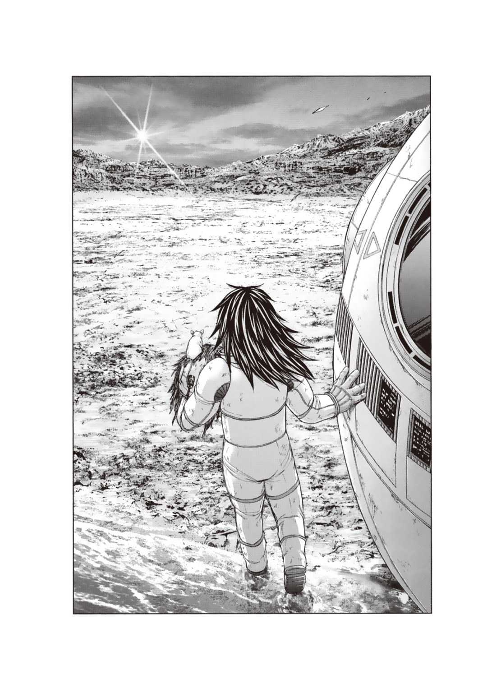
「おふくろさんに逢えるか保証なんかないんだぞ」
「それでも捜したい」
カンオケは少しの間、考えた。
「四十八時間だ。その時間内に見つからなかったら、ここに戻ってきて帰る。約束するか？」
ギィは頷いた。
「仕方ねえ。好きにしろ」
「うん」
ギィは行こうとした。
「おいおい！ 俺は置いてきぼりか！」
「あ、ごめん」
ギィは笑うとカンオケの髪を宇宙服についた腰のフックに結んだ。
「じゃあ、行くか。四十八時間だけの......母を訪ねて二千万里」
「うん！」
ギィは初めて子供らしい声を上げた。
「テラフォってる」――――
ご年配の方には聞き慣れない単語ですが、その意味は、
①漫画テラフォーマーズの真似をしていること。テラフォーマーズっぽいこと。
②精神的にテラフォーマーズであること。くよくよしないさま。また、困難と闘うこと。
と定義されています。
平山先生にテラフォーマーズの外伝を書いていただけると聞いたときは、どのような話になるのか全く予想がつきませんでした。主人公が９歳の少女の予定だとおっしゃるので、おそらくその子が酷い目にあうのだろうという事は担当編集さん共々予想はしていたのですが、一話目を読んだ時には度肝を抜かれました。ガードの上から殴り飛ばされた気分でした。ほ、本当にマジで酷い目にあっている!!と！（笑）そしてひとつの不安が頭をよぎったのです...。これは...テラフォーマーズになるのか...？ と。なにせひたすら宇宙海賊による殺戮で、ゴキブリがぜんぜん出てこないのですから。テラフォってないじゃないか、と...。
しかし、その不安は回を追うごとに掻き消されていきました。いや掻き消すどころか、時にパンチでブチ消され、電磁ナイフで削り取られ、そして猛烈な炎で焼かれていきました。そう、この作品は間違いなくテラフォっていたのです。主に②の意味で!!
主人公ギィは何の手術も受けていない非力な少女ですが、その眼差し、母への一途な思い、そしてそのハートは間違いなくテラフォーマーズの主人公が持つものでありました。逆境にひたすら抗う、その熱さ。どうしようもない人でなしの中で僅かに輝く、真っ直ぐな人間の魂。最高にテラフォってる、最高にして最凶のテラフォーマーズ外伝を、平山先生は見せてくれました。
この作品を実現するにあたって尽力してくれた集英社の皆様と、いつの間にか挿絵を10枚描くことになっていた橘先生にも、この場を借りて厚く御礼申し上げます。最高でしたね！
――先日、集英社のパーティーで平山先生に直接お会いする機会があったのですが、その眼差しと佇まいと大胸筋を見て、僕の小説を読んで得たイメージは確信に変わりました。
この先生、最高に「テラフォってる」と。
貴家 悠
「まじかよ...」
本当にスリリングでパワフルなものに触れた瞬間、人はそう呟くことにしかできないと知りました。「予測不能の物語が～」とか「熱いキャラ達が～」とか、そういうのは後から整理して思うこと。連載原稿が回ってくるたび、私は何度も「まじかよ...」を繰り返しました。そしてその興奮の熱を冷まさぬうちに、挿絵に注ぎ込んだつもりです。
平山先生はまじで天才でした。またいつか、ギィたちに会いたいです。
橘 賢一
ベストセラーのノベライズ化というのは他流試合に似て、刺激的だけれど怖くもあります。巧くできて当たり前、しくじればタコ殴りですから（笑）。それでも敢えて挑んだのは僕自身がファンだったからでした。理由は子供の時に誰もが一度は考える〈もし、蚤の跳躍力が人間のサイズだったら、どうなるだろう？〉というような素朴な疑問をベースにしながら、これほどまで血湧き肉躍らせた活劇は近年稀だったからです。今回、小説の連載時の駆け足で気後れした部分を担当の叱咤激励によって全面見直し、半分書き直して改良しました。おかげで自分でも及第点にはできたと思います。ファンの皆様にも喜んで戴けたら、こんなに嬉しいことはありません。また、ギィという孤独で母に逢いたいという思い以外は何も持っていない少女の物語が、コミックの楽しみと少しでも両立できていたら光栄だと思っています。最後に機会を戴けた貴家、橘の両先生に深謝。また担当の添田君、君のノベライズに賭ける鬼気迫る熱意には圧倒されました。最後の最後まで駆け続けられたのは君の情熱に支えられていたからです。ありがとう。
平山夢明
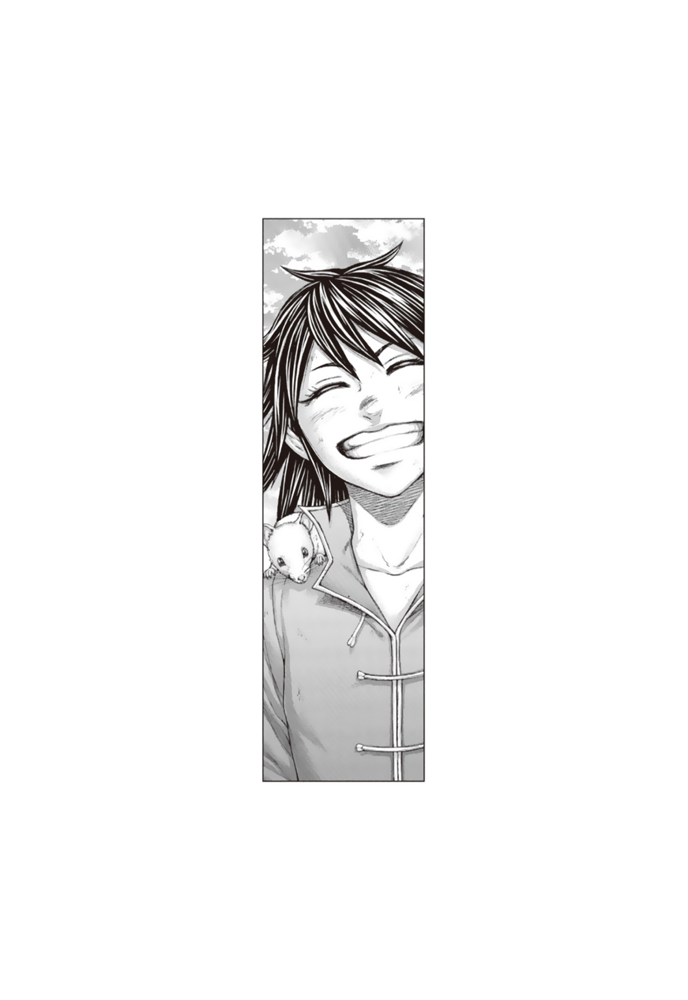
著者紹介
原作
貴家 悠
１９８８年神奈川県生まれ。２０１１年ミラクルジャンプにて『テラフォーマーズ』掲載、デビュー。同作の原作を手がける。２０１３年「このマンガがすごい！」オトコ編で第１位を獲得。
作画
橘 賢一
１９７７年埼玉県生まれ。２００７年週刊ヤングジャンプ誌上にて『ラッキーセブンスター』を連載。『テラフォーマーズ』では作画を手がける。
小説
平山夢明
１９６１年神奈川県生まれ。１９９６年『SINKER-沈むもの』で小説家としてデビュー。２００６年『独白するユニバーサル横メルカトル』で第59回日本推理作家協会賞短編部門受賞、同名の短編集が２００７年版「このミステリーがすごい！」国内第１位を獲得。２０１０年には『ダイナー』で第28回日本冒険小説協会大賞と第13回大藪春彦賞を受賞。ノンフィクション『異常快楽殺人』の他、実話怪談も数多く手がける。『ミサイルマン』『暗くて静かでロックな娘』『デブを捨てに』など、著書多数。
初出
「週刊ヤングジャンプ増刊 ミラクルジャンプ」２０１６年２月号〜５月号に連載したものに、加筆修正したものです。
ジャンプジェイブックスDIGITAL
テラフォーマーズ
LOST MISSION II 悲母への帰還
著者 貴家 悠／橘 賢一／平山夢明
© 2016 Y.Sasuga／K.Tachibana／Y.Hirayama
２０１６年５月31日発行
この電子書籍は、ジャンプジェイブックス「テラフォーマーズ LOST MISSION II 悲母への帰還」
２０１６年４月24日発行の第１刷を底本としています。
装丁 末長 敬
編集協力 添田洋平（つばめプロダクション） 長澤國雄
編集人 浅田貴典
発行者 鈴木晴彦
発行所 株式会社 集英社
〒１０１－８０５０
東京都千代田区一ツ橋２丁目５番10号
０３－３２３０－６０８０（読者係）
制作所 株式会社ＩＣＥ
本作品の全部また一部を無断で複製、転載、改竄、インターネット上に掲載すること、および有償無償に関わらず、本データを第三者に譲渡することを禁じます。なお個人利用の目的であっても、コピーガードを解除しての複製は、法律で禁じられています。